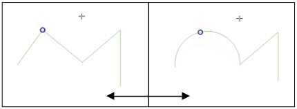
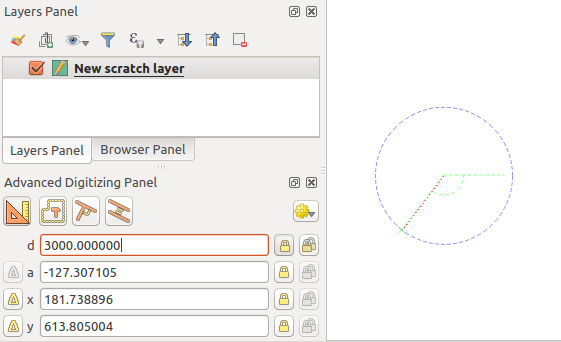

16.3. တည်းဖြတ်ပြင်ဆင်ခြင်း (Editing)
QGIS သည် OGR ၊ SpatiaLite ၊ PostGIS ၊ MS SQL Server ၊ Oracle Spatial vector layer များနှင့် ဇယားများကို တည်းဖြတ်ပြင်ဆင်ရန် စွမ်းဆောင်ရည်အမျိုးမျိုးရှိသည်။ ၄င်းတို့သည့် 2D သို့မဟုတ် 3D geometry (ဂျီသြမေတြီ) အမျိုးအစားများ ဖြစ်နိုင်သည်။
Note
GRASS layer များကို တည်းဖြတ်ပြင်ဆင်ရန်အတွက် လုပ်ထုံးလုပ်နည်းမှာ ကွဲပြားခြားနားပါသည် - အသေးစိတ်အချက်အလက်များအတွက် GRASS vector layer တစ်ခုအား ရေးဆွဲခြင်းနှင့် တည်းဖြတ်ပြင်ဆင်ခြင်း (Digitizing and editing a GRASS vector layer) ကဏ္ဍတွင် ကြည့်ရှုပါ။
Attention
Concurrent Edits (တစ်ပြိုင်တည်းတည်းဖြတ်ပြင်ဆင်မှုများ)
QGIS သည် တူညီသောအချိန်တွင် တူညီသော feature များကို တခြားသူတစ်ဦးမှ တည်းဖြတ်ပြင်ဆင်နေခြင်း ရှိမရှိ ကို ခြေရာခံထားခြင်းမရှိပါ။ နောက်ဆုံးတည်းဖြတ်ပြင်ဆင်မှုများကို သိမ်းဆည်းမည်ဖြစ်သည်။
Tip
Validating Edits (တည်းဖြတ်ပြင်ဆင်မှုများကို အတည်ပြုခြင်း)
tab တွင် layer တစ်ခုချင်းစီအလိုက် အဆက်မပြတ်အတည်ပြုခြင်းကို activate (အသုံးပြုနိုင်အောင်ဖွင့်ပေး) လုပ်နိုင်သည်။ မြေပုံအချက်အလက်ရေးဆွဲခြင်း ဆိုင်ရာ ဂုဏ်သတ္တိများ (Digitizing Properties) တွင် ပိုမိုလေ့လာပါ။
16.3.1. ဆွဲကပ်ခြင်းနိုင်သည့်အကွာအဝေး နှင့် ရှာဖွေမည့်အချင်းဝက် သတ်မှတ်ခြင်း (Setting the snapping tolerance and search radius)
menu အောက်တွင် QGIS သည် တည်းဖြတ်ခြင်းကိရိယာများ (editing tools) ၏ default လုပ်ဆောင်နိုင်သည့်အရာများကို configure (ပြင်ဆင်သတ်မှတ်) လုပ်ရန် parameter များ၏အရေအတွက်တစ်ခုကို ပံ့ပိုးပေးပါသည်။ မြေပုံတွင်ရေးဆွဲခြင်း ဆိုင်ရာ setting များ (Digitizing settings) တွင် နောက်ထပ်အချက်အလက်များကို လေ့လာပါ။
Vector layer ဂျီဩမေတြီများကို အကောင်းဆုံးနှင့် တိကျစွာ တည်းဖြတ်ပြင်ဆင်နိုင်ရန် feature များ၏ vertex (မျဉ်းအဆစ်) များအတွက် snapping tolerance (ဆွဲကပ်ခြင်းဆိုင်ရာလက်ခံနိုင်မှု) နှင့် search radius (ရှာဖွေမှုအချင်းဝက်) ၏ သင့်လျော်သော တန်ဖိုးတစ်ခုကို သတ်မှတ်ရန် လိုအပ်ပါသည်။ Snapping (မျဉ်းအဆစ်များ တစ်ခုနှင့်တစ်ခု တိတိကျကျ ထပ်နေစေရန် ဆွဲကပ်ခြင်း) အုပ်စုတွင် snapping tolerance နှင့် search radius ကိုင်တွယ်ခြင်းဆိုင်ရာ ဆက်စပ်ရွေးချယ်စရာများ ရှိပါသည်။
Snapping tolerance - Vertex အသစ်တစ်ခုကို ထည့်ခြင်း သို့မဟုတ် ရှိပြီးသားတစ်ခုကို ရွှေ့ခြင်း ပြုလုပ်သည့်အခါ snapping tolerance သည် အနီးစပ်ဆုံး vertex သို့မဟုတ် segment ကိုရှာဖွေချိတ်ဆက်ရန်အတွက် QGIS မှအသုံးပြုသည့် အကွာအဝေးဖြစ်သည်။ အကယ်၍ snapping tolerance အတွင်းတွင် မရှိပါက၊ QGIS သည် ရှိပြီးသား vertex သို့မဟုတ် segment သို့ ဆွဲကပ်ခြင်း ပြုလုပ်မည့်အစား မောက်စ်ခလုတ်လွှတ်လိုက်သည့် နေရာမှာတွင် vertex ကို ချန်ထားမည်ဖြစ်သည်။
Tolerance setting သည် snapping ဖြင့် အလုပ်လုပ်သော tool များအားလုံးအပေါ်သက်ရောက်ပြီး layer အသစ်များနှင့် project အသစ်များအတွက် default အတိုင်းအသုံးပြုမည်ဖြစ်သည်။ သို့သော် ၄င်းကို layer အဆင့်တွင် အစားထိုးပြင်ဆင်ခြင်းများ ပြုလုပ်နိုင်သည် (Snapping နှင့် Digitizing ရွေးချယ်စရာများ (Snapping and Digitizing Options) တွင် ကြည့်ပါ)။
Search radius - Search radius for vertex edits (Vertex တည်းဖြတ်ခြင်းများအတွက် ရှာဖွေမှုအချင်းဝက်) သည် မြေပုံပေါ်တွင်နှိပ်လိုက်သောအခါ ရွေးချယ်လိုသည့် vertex ကို
search(ရှာဖွေရန်) အတွက် QGIS မှအသုံးပြုသည့် အကွာအဝေးဖြစ်သည်။ Search radius အတွင်း မရှိပါက QGIS သည် တည်းဖြတ်ရန်အတွက် မည်သည့် vertex ကိုမှ ရှာဖွေခြင်းနှင့် ရွေးချယ်ခြင်း ပြုလုပ်မည် မဟုတ်ပါ။
Snap tolerance နှင့် search radius ကို map units (မြေပုံယူနစ်များ) သို့မဟုတ် pixels ဖြင့် သတ်မှတ်ထားပါသည်။ ၎င်းတို့ကို မှန်မှန်ကန်ကန်ရရှိစေရန်အတွက် စမ်းသပ်မှုလုပ်ရန် လိုအပ်ပါသည်။ အထူးသဖြင့် vertex များစွာ နီးနီးကပ်ကပ်ရှိနေသောအခါတွင် အလွန်ကြီးမားသည့် tolerance တစ်ခု သတ်မှတ်မည်ဆိုပါက QGIS သည် vertex အမှားကိုသာ snap (ဆွဲကပ်) ပြုလုပ်သွားမည် ဖြစ်သည်။ Search radius သေးငယ်လေလေ၊ ရွှေ့လိုသည့်အရာကို ထိရန် ခက်ခဲလေလေဖြစ်သည်။
16.3.2. Snapping နှင့် Digitizing ရွေးချယ်စရာများ (Snapping and Digitizing Options)
Global (အများသုံး) snapping and digitizing settings (snapping ပုံစံ၊ tolerance တန်ဖိုး နှင့် ယူနစ်များ…) ကို menu မှ project ထဲတွင် အစားထိုးပြင်ဆင်နိုင်သည်။ Snapping and Digitizing Options ထဲတွင် အခြား properties (ဂုဏ်သတ္တိများ) (snapping layer များ၊ စကေးအကန့်အသတ်၊ topology….) ကိုလည်း ပြင်ဆင်သတ်မှတ်နိုင်သည်။ Snapping Toolbar တွင် အဆိုပါ feature အများစုအတွက် ဆောင်ရွက်နိုင်ပါသည်။
Default အားဖြင့်  Enable snapping ခလုတ် သို့မဟုတ် ကီးဘုတ်ရှိ S ကို မနှိပ်မချင်း project တွင် snapping သည် ပိတ်နေမည်ဖြစ်သည်။ Snapping mode ၊ tolerance တန်ဖိုး နှင့် ယူနစ်များကိုလည်း အဆိုပါ toolbar တွင် ပြင်ဆင်သတ်မှတ်နိုင်ပါသည်။
Enable snapping ခလုတ် သို့မဟုတ် ကီးဘုတ်ရှိ S ကို မနှိပ်မချင်း project တွင် snapping သည် ပိတ်နေမည်ဖြစ်သည်။ Snapping mode ၊ tolerance တန်ဖိုး နှင့် ယူနစ်များကိုလည်း အဆိုပါ toolbar တွင် ပြင်ဆင်သတ်မှတ်နိုင်ပါသည်။
16.3.2.1. Snapping ဆိုင်ရာဂုဏ်သတ္တိများ (Snapping properties)
Snap ပြုလုပ်မည့် layer (များ) ကိုရွေးချယ်ရန် option (၃) မျိုးရှိပါသည်-
All layers (Layer များအားလုံး) - Pointer (မောက်စ်မြှား) သည် vertex များ နှင့်/သို့မဟုတ် segment (အပိုင်း) များအားလုံးကို snap ပြုလုပ်စေရန်အလို့ငှာ project ထဲရှိ မြင်နိုင်သည့် layer များအားလုံးအတွက် အမြန်ပြုလုပ်နိုင်သည့် setting ဖြစ်သည်။ ကိစ္စအများစုတွင် ဤ snapping mode (နည်းလမ်း) ကို အသုံးပြုရန် လုံလောက်ပါသည်။ သို့သော် vector layer အများအပြားပါဝင်သော project များအတွက် အသုံးပြုသောအခါ ၎င်းသည် စွမ်းဆောင်ရည်အပေါ်သက်ရောက်မှုရှိနိုင်မည်ကို သတိထားရန်လိုအပ်ပါသည်။
Current layer (လက်ရှိ layer) - Active ဖြစ်နေသော layer ကိုသာလျှင် အသုံးပြုပါသည်။ တည်းဖြတ်ပြင်ဆင်ခြင်းခံနေရသော layer အတွင်း topology ဆိုင်ရာ တသမတ်တည်းရှိစေရန်အတွက် အဆင်ပြေသော နည်းလမ်းတစ်ခုဖြစ်သည်။
Advanced Configuration (အဆင့်မြင့် ပြင်ဆင်သတ်မှတ်ခြင်းများ) - Layer တစ်ခုချင်းစီအလိုက် snapping mode များ၊ tolerance နှင့် ယူနစ်များ၊ snapping ၏ စကေးများနှင့် ထပ်နေခြင်းများကို အသုံးပြုနိုင်စေရန်နှင့် ချိန်ညှိခြင်းများလုပ်ဆောင်နိုင်မည်ဖြစ်သည် (Fig. 16.88 တွင် ကြည့်ပါ)။ Layer တစ်ခုကို တည်းဖြတ်ပြင်ဆင်ရန် နှင့် ၎င်း၏ vertex များကို အခြားတစ်ခုနှင့် snap ပြုလုပ်ရန် လိုအပ်ပါက ပြုလုပ်လိုသော layer ကို အမှန်ခြစ်ခြစ်ထားရန်နှင့် snapping tolerance ကို ပိုမြင့်သောတန်ဖိုးတစ်ခုအထိ တိုးထားခြင်းများကို လုပ်ထားရပါမည်။ Snapping option dialog ထဲတွင် layer တစ်ခုကို အမှန်ခြစ်ခြစ်မထားလျှင် ထို layer ကို snapping ပြုလုပ်မည်မဟုတ်ပါ။
Snapping mode အတွက် Vertex (မျဉ်းအဆစ်)၊ Segment (မျဉ်းပိုင်း)၊ Area (ဧရိယာ)၊ Centroid (အလယ်ဗဟို)၊ Middle of Segments (မျဉ်းပိုင်းများ၏အလယ်) နှင့် Line Endpoints (မျဉ်း၏အဆုံးမှတ်များ) များကို ရွေးချယ်နိုင်ပါသည်။
Snap အမျိုးအစားအပေါ်မူတည်၍ QGIS သည် မတူညီသည့် snap icon အမျိုးမျိုးကို ပြသပေးမည်ဖြစ်သည်-
Vertex တစ်ခုသို့ Snapping လုပ်ခြင်း - လေးထောင့်ပုံ (box) icon |
Segment တစ်ခုသို့ Snapping လုပ်ခြင်း - သဲနာရီပုံ (hourglass) icon |
မျဉ်းနှစ်ခုဖြတ်ရာ/ဆုံရာတွင် Snapping လုပ်ခြင်း - ကြက်ခြေခက်ပုံ (cross) icon |
Global setting များ၏ Digitizing အပိုင်းတွင် အဆိုပါ icon များ၏ အရောင်ကို ပြောင်းလဲနိုင်ပါသည်။
Tolerance တန်ဖိုးများကို project ၏ map units (မြေပုံယူနစ်များ) သို့မဟုတ် pixels တစ်ခုမဟုတ်တစ်ခုဖြင့် သတ်မှတ်နိုင်ပါသည်။ pixels ကို ရွေးချယ်ခြင်း၏ အားသာချက်သည် မြေပုံစကေးအမျိုးမျိုးတွင် snapping ကို တသတ်မှတ်တည်းဖြစ်စေပါသည်။ 10 မှ 12 pixel သည် ပုံမှန်အားဖြင့် ကောင်းမွန်သောတန်ဖိုးတစ်ခုဖြစ်ပါသည်။ သို့သော် ၎င်းတန်ဖိုးသည် မိမိ screen (ကွန်ပျူတာမျက်နှာပြင်) ၏ DPI (dots per inch) ပေါ်တွင် မူတည်ပါသည်။ Map unit များအသုံးပြုခြင်းသည် tolerance တန်ဖိုး ကို အစစ်အမှန်မြေပြင်အကွာအဝေးများနှင့် ဆက်စပ်စေပါသည်။ ဥပမာအားဖြင့် element များအကြား အနည်းဆုံးအကွာအဝေးတစ်ခုရှိလျှင် အဆိုပါ option သည် vertex များ တစ်ခုနှင့်တစ်ခု အလွန်နီးကပ်စွာထည့်သွင်းခြင်းကိုရှောင်ရှားနိုင်ပါသည်။

Fig. 16.88 Snapping ရွေးချယ်စရာများ (အဆင့်မြင့်ပြင်ဆင်သတ်မှတ်ခြင်းနည်းလမ်း)
Note
Default အားဖြင့် မြင်နိုင်သည့် feature (feature များ၏ style ကို ဖော်ပြထားသော၊ သင်္ကေတဆိုင်ရာတွင် “No symbols” ဖြစ်နေသော layer များမှလွဲ၍) များကိုသာ snap ပြုလုပ်နိုင်ပါသည်။ tab အောက်ရှိ  Enable snapping on invisible features (မမြင်နိုင်သော feature များကို snapping ပြုလုပ်နိုင်စေခြင်း) ကို အမှန်ခြစ်ခြင်းဖြင့် မမြင်နိုင်သော feature များကို snapping ပြုလုပ်နိုင်ပါသည်။
Enable snapping on invisible features (မမြင်နိုင်သော feature များကို snapping ပြုလုပ်နိုင်စေခြင်း) ကို အမှန်ခြစ်ခြင်းဖြင့် မမြင်နိုင်သော feature များကို snapping ပြုလုပ်နိုင်ပါသည်။
Tip
Default အနေဖြင့် Snapping ဆောင်ရွက်နိုင်စေခြင်း
Project အသစ်များအားလုံးတွင် Default အနေဖြင့် Snapping ဆောင်ရွက်နိုင်စေခြင်းကို tab တွင် သတ်မှတ်နိုင်ပါသည်။ Snapping Options dialog ထဲတွင် ပါရှိမည့် default snapping mode ၊ tolerance တန်ဖိုး နှင့် ယူနစ်များကိုလည်း သတ်မှတ်နိုင်ပါသည်။
16.3.2.2. မျဉ်းနှစ်ခုဖြတ်မှတ်/ဆုံမှတ်များတွင် Snapping ဆောင်ရွက်နိုင်စေခြင်း(Enable snapping on intersections)
နောက်ထပ်အသုံးပြုနိုင်သော option မှာ snapping on intersection ကိုအသုံးပြုရန်ဖြစ်ပါသည်။ ၎င်းသည် intersection (မျဉ်းနှစ်ခုဖြတ်မှတ်/ဆုံမှတ်) များတွင် vertex များမရှိလျှင်ပင် snapping လုပ်ဆောင်နိုင်သော layer များ၏ ဂျီဩမေတြီဆိုင်ရာ intersection များကို snapping ပြုလုပ်နိုင်မည်ဖြစ်ပါသည်။
16.3.2.3. စကေးအပိုင်းအခြားတစ်ခုအတွင်းမှာသာ ဆွဲကပ်စေခြင်း (Limit snapping to a scale range)
အချို့ ကိစ္စရပ်များတွင် snapping ဆောင်ရွက်ခြင်းသည် အလွန်နှေးကွေးလာနိုင်ပါသည်။ တွက်ချက်ရန်နှင့် ထိန်းသိမ်းရန် ကြီးမားသော အညွှန်းကိန်း (index) တစ်ခုလိုအပ်သည့် အချို့ layer များထဲရှိ feature အများအပြားကြောင့် ထိုသို့မကြာခဏ ဖြစ်ရခြင်းဖြစ်သည်။ မြေပုံမြင်ကွင်းသည် ဆီလျော်သော စကေးအပိုင်းအခြားတစ်ခုအတွင်း ရှိသည့်အချိန်မှသာ snapping ပြုလုပ်ပေးနိုင်မည့် အချို့ parameter များရှိပါသည်။ ထိုအရာသည် ဆီလျော်သော စကေးတစ်ခု၌သာ snapping နှင့် ပတ်သက်သော တန်ဖိုးကြီးသည့် index တွက်ချက်ခြင်းကို ပြုလုပ်ပေးစေနိုင်ပါသည်။
Snapping ဆောင်ရွက်ရန် စကေးကန့်သတ်ချက်များကို ထဲတွင် ပြင်ဆင်သတ်မှတ်နိုင်ပါသည်။ Advanced Configuration mode ထဲတွင်သာ စကေးဖြင့် snapping ကို ကန့်သတ်ခြင်းကို အသုံးပြုနိုင်ပါသည်။
စကေးအပိုင်းအခြားတစ်ခုဖြင့် Snapping ကို ကန့်သတ်ရန် mode (၃) မျိုးဖြင့် ဆောင်ရွက်နိုင်ပါသည်-
Disabled (ပိတ်ထားသော) - လက်ရှိမြေပုံသည် မည်သည့် စကေးတွင်ရှိသည်ဖြစ်စေ Snapping ပြုလုပ်ခြင်းများ ဆောင်ရွက်မည်ဖြစ်သည်။ ၎င်းသည် default mode ဖြစ်ပါသည်။
Global - Snapping ပြုလုပ်ခြင်းကို ကန့်သတ်ထားပြီး လက်ရှိ မြေပုံ၏စကေးသည် Global (အများသုံး) အနိမ့်ဆုံးနှင့် အမြင့်ဆုံးတန်ဖိုး ကြားတွင်ရှိနေသောအခါမှသာ အသုံးပြုနိုင်ပါသည်။ အဆိုပါ mode ကို ရွေးချယ်သောအခါတွင် snapping ပြုလုပ်နိုင်သော စကေးအပိုင်းအခြားများကို ပြင်ဆင်သတ်မှတ်ရန် widget နှစ်ခုရရှိလာမည် ဖြစ်သည်။
Per layer - Layer တစ်ခုစီအတွက် snapping စကေးအပိုင်းအခြားကန့်သတ်ချက်ကို သတ်မှတ်ပါသည်။ အဆိုပါ mode ကို ရွေးချယ်သောအခါတွင် layer တစ်ခုချင်းစီအတွက် အနိမ့်ဆုံးနှင့်အမြင့်ဆုံး စကေးများကို ပြင်ဆင်သတ်မှတ်ရန် column နှစ်ခု ရရှိလာမည်ဖြစ်သည်။
အနိမ့်ဆုံးနှင့်အမြင့်ဆုံး စကေးများသည် QGIS ၏ လုပ်ရိုးလုပ်စဉ်အတိုင်း လိုက်နာသည်ကို မှတ်သားထားပါ- အနိမ့်ဆုံးစကေးသည် အဆုံးထိ “zoomed out” (မြင်ကွင်းချုံ့ခြင်း) စကေးဖြစ်ပြီး အမြင့်ဆုံးစကေးသည် အဆုံးထိ “zoomed in” (မြင်ကွင်းချဲ့ခြင်း) စကေး ဖြစ်ပါသည်။ အနိမ့်ဆုံး သို့မဟုတ် အမြင့်ဆုံး စကေးတစ်ခုကို “0” သို့မဟုတ် “not set (သတ်မှတ်ထားခြင်းမရှိ)” သတ်မှတ်ထားလျှင် အကန့်အသတ်မထားရှိဟု ယူဆပါသည်။
16.3.2.4. ကိုယ့်ကိုယ်ကို Snapping ပြုလုပ်ခြင်း (Self-snapping)
 Self-snapping option သည် တည်းဖြတ်ပြင်ဆင်ခြင်းခံနေရသည့် ဂျီဩမေတြီကို snapping ပြုလုပ်နိုင်သည်။ Advanced digitizing panel နှင့် ပေါင်းစပ်ပြီး ယခင်ကရှိသည့် edges (အစွန်းများ) သို့မဟုတ် vertex များနှင့် ဆက်စပ်နေသည့် edge အသစ်များကို digitize ပြုလုပ်နိုင်ရန် အဆင်ပြေသောနည်းလမ်းတစ်ခုဖြစ်သည်။ Self-snapping ဆောင်ရွက်ခြင်းသည် မမှန်ကန်သော ဂျီဩမေတြီများ ဖြစ်ပေါ်စေနိုင်ပြီး သတိထား၍ အသုံးပြုစေလိုပါသည်။
Self-snapping option သည် တည်းဖြတ်ပြင်ဆင်ခြင်းခံနေရသည့် ဂျီဩမေတြီကို snapping ပြုလုပ်နိုင်သည်။ Advanced digitizing panel နှင့် ပေါင်းစပ်ပြီး ယခင်ကရှိသည့် edges (အစွန်းများ) သို့မဟုတ် vertex များနှင့် ဆက်စပ်နေသည့် edge အသစ်များကို digitize ပြုလုပ်နိုင်ရန် အဆင်ပြေသောနည်းလမ်းတစ်ခုဖြစ်သည်။ Self-snapping ဆောင်ရွက်ခြင်းသည် မမှန်ကန်သော ဂျီဩမေတြီများ ဖြစ်ပေါ်စေနိုင်ပြီး သတိထား၍ အသုံးပြုစေလိုပါသည်။

Fig. 16.89 Self-snapping ဖြင့် feature များရေးဆွဲခြင်း
16.3.2.5. ကိုယ်ပိုင်စနစ် grid ပေါ်တွင် Snapping ပြုလုပ်ခြင်း (Snapping on custom grid)
Layer properties dialog ၏ Digitizing tab ထဲတွင် layer တစ်ခုချင်းစီအလိုက် snapping အကွာအဝေးတစ်ခုကို စိတ်ကြိုက်ဖန်တီးနိုင်ပါသည်။ မြေပုံ canvas သည် ဖော်ပြရန်အတွက် အဆင်ပြေသော စကေးတစ်ခုတွင် ရှိသောအခါ အစက်များ (dotted) grid တစ်ခုကို မြင်ရနိုင်အောင် Geometry precision (ဂျီဩမေတြီတိကျမှု) အကွာအဝေး setting ဖြင့် ပြုလုပ်နိုင်ပါသည်။ ထို့နောက် grid ၏အစက်များပေါ်တွင် Snapping ပြုလုပ်ခြင်းကို ဆောင်ရွက်နိုင်ပါသည်- ထည့်သွင်းထားသော သို့မဟုတ် မွမ်းမံပြင်ဆင်ထားသော ဂျီဩမေတြီတစ်ခု၏ vertex များအားလုံးသည် grid ၏ အနီးဆုံး node (ဆုံချက်) သို့ အလိုအလျောက် Snapping ပြုလုပ်မည်ဖြစ်ပါသည်။ မြေပုံအချက်အလက်ရေးဆွဲခြင်း ဆိုင်ရာ ဂုဏ်သတ္တိများ (Digitizing Properties) တွင် အချက်အလက်များ ပိုမိုကြည့်ရှုနိုင်ပါသည်။
16.3.3. ဆက်စပ်တည်ရှိမှုကိုတည်းဖြတ်ပြင်ဆင်ခြင်း (Topological editing)
၎င်း snapping option များအပြင် Snapping options… dialog () နှင့် Snapping toolbar တို့တွင် အချို့သော အခြား topology ဆိုင်ရာလုပ်ဆောင်ချက်များ (topological functionalities) ကို အဖွင့်/အပိတ် ပြုလုပ်နိုင်သည်။
16.3.3.1. Topology ဆိုင်ရာ တည်းဖြတ်ပြင်ဆင်ခြင်းကို ဖွင့်ပေးခြင်း (Enable topological editing)
 Topological editing ခလုတ်သည် အသုံးများသော (common) နယ်နိမိတ်များ (boundaries) ပါဝင်သော feature များကို တည်းဖြတ်ခြင်း နှင့် ထိန်းသိမ်းခြင်း (maintaining) လုပ်သောအခါ ကူညီပေးပါသည်။ ဤ option ကို ဖွင့်ထားခြင်းဖြင့် QGIS သည် မျှဝေသုံးစွဲထားသော နယ်နိမိတ်များ (shared boundaries) ကို ရှာဖွေတွေ့ရှိမည်ဖြစ်သည်။ အသုံးများသော (common) vertex များ/segment များကို ရွှေ့သည့်အခါ၊ QGIS သည် ၎င်းတို့ကို အနီးနားကပ်လျက်ရှိ feature များ၏ ဂျီသြမေတြီများထဲတွင်လည်း ရွှေ့ပေးမည်ဖြစ်သည်။
Topological editing ခလုတ်သည် အသုံးများသော (common) နယ်နိမိတ်များ (boundaries) ပါဝင်သော feature များကို တည်းဖြတ်ခြင်း နှင့် ထိန်းသိမ်းခြင်း (maintaining) လုပ်သောအခါ ကူညီပေးပါသည်။ ဤ option ကို ဖွင့်ထားခြင်းဖြင့် QGIS သည် မျှဝေသုံးစွဲထားသော နယ်နိမိတ်များ (shared boundaries) ကို ရှာဖွေတွေ့ရှိမည်ဖြစ်သည်။ အသုံးများသော (common) vertex များ/segment များကို ရွှေ့သည့်အခါ၊ QGIS သည် ၎င်းတို့ကို အနီးနားကပ်လျက်ရှိ feature များ၏ ဂျီသြမေတြီများထဲတွင်လည်း ရွှေ့ပေးမည်ဖြစ်သည်။
Layer များသည် မြင်ရနိုင်ပြီး editing mode တွင် ရှိနေသမျှ Topological editing သည် မတူညီသော layer များမှ feature များနှင့် အလုပ်လုပ်ပါသည်။
Z သို့မဟုတ် M တန်ဖိုးများရှိသော layer တွင် topological editing သည် ချိတ်ဆက်မှုအတွက် အသုံးပြုသည့် edge တန်ဖိုးအပေါ်အခြေခံပြီး vertex ၏ Z သို့မဟုတ် M တန်ဖိုးကို interpolate (ရှိပြီသားအချက်အလက်များအပေါ်အခြေခံ၍ ဖြည့်သွင်းတွက်ထုတ်) လုပ်ပေးမည်ဖြစ်သည်။
16.3.3.2. ထပ်ခွင့်ကို ထိန်းချုပ်ခြင်း (Overlapping control)
Overlapping လုပ်ခြင်းသည် ရွေးချယ်ထားသော layer ထဲရှိ နဂိုရှိနေပြီးသားအရာများကို ထပ်နေစေသည့် feature အသစ်များကို ရေးဆွဲခြင်းမှ တားဆီးပေးကာ ကပ်လျက်ရှိသော polygon များ digitizing ပြုလုပ်ခြင်းကို အရှိန်မြှင့်ပေးသည်။ ၎င်းကို overlap tool ဖြင့် ထိန်းချုပ်နိုင်သည်။ လုပ်ဆောင်နိုင်မည့် mode (၃) ခု ရှိသည်-
 Avoid Overlap on Active Layer (လုပ်ဆောင်နိုင်သော layer ပေါ်တွင် ထပ်နေခြင်းကို ရှောင်ရှားခြင်း) - တည်းဖြတ်ပြင်ဆင်ခြင်းခံနေရသော layer မှ အခြား feature များနှင့် ထပ်နေသည့် မည်သည့်အရာမဆို တားဆီးပေးသည်။ ဂျီသြမေတြီအသစ်များကို ၎င်းတို့ အနီးအနားမှ အရာများနှင့် ထပ်နေစေရန် digitize ပြုလုပ်ပြီးနောက် QGIS သည် ဂျီသြမေတြီအသစ်များ၏ ထပ်နေသည့်အပိုင်း(များ)ကို ဖြတ်တောက်ပေးမည်ဖြစ်ပြီး ရှိပြီးသား feature များ၏ နယ်နိမိတ်သို့ snapping လုပ်ပေးမည်ဖြစ်သည်။ အားသာချက်မှာ နယ်နိမိတ်ပေါ်ရှိ အသုံးများသော (common) vertex များကို digitize ပြုလုပ်ရန် မလိုအပ်ပါ။
Avoid Overlap on Active Layer (လုပ်ဆောင်နိုင်သော layer ပေါ်တွင် ထပ်နေခြင်းကို ရှောင်ရှားခြင်း) - တည်းဖြတ်ပြင်ဆင်ခြင်းခံနေရသော layer မှ အခြား feature များနှင့် ထပ်နေသည့် မည်သည့်အရာမဆို တားဆီးပေးသည်။ ဂျီသြမေတြီအသစ်များကို ၎င်းတို့ အနီးအနားမှ အရာများနှင့် ထပ်နေစေရန် digitize ပြုလုပ်ပြီးနောက် QGIS သည် ဂျီသြမေတြီအသစ်များ၏ ထပ်နေသည့်အပိုင်း(များ)ကို ဖြတ်တောက်ပေးမည်ဖြစ်ပြီး ရှိပြီးသား feature များ၏ နယ်နိမိတ်သို့ snapping လုပ်ပေးမည်ဖြစ်သည်။ အားသာချက်မှာ နယ်နိမိတ်ပေါ်ရှိ အသုံးများသော (common) vertex များကို digitize ပြုလုပ်ရန် မလိုအပ်ပါ။ Follow Advanced Configuration (အဆင့်မြင့် ပြင်ဆင်သတ်မှတ်ချက်များကို ပြုလုပ်ခြင်း) - Advanced configuration view mode တွင် layer တစ်ခုချင်းစီအလိုက် overlapping setting ကိုသတ်မှတ်ပေးစေနိုင်ပါသည်။
Follow Advanced Configuration (အဆင့်မြင့် ပြင်ဆင်သတ်မှတ်ချက်များကို ပြုလုပ်ခြင်း) - Advanced configuration view mode တွင် layer တစ်ခုချင်းစီအလိုက် overlapping setting ကိုသတ်မှတ်ပေးစေနိုင်ပါသည်။
Note
ဂျီသြမေတြီအသစ်တစ်ခုကို ရှိပြီးသား အရာများဖြင့် အလုံးစုံ ဖုံးလွှမ်းနေလျှင် ၎င်းကို ရှင်းထုတ်ပစ်မည်ဖြစ်ပြီး၊ QGIS သည် မှားယွင်းကြောင်း စာတို (error message) တစ်ခုကို ပြသမည်ဖြစ်သည်။
Warning
Avoid overlap (ထပ်နေခြင်းကိုရှောင်ရှားခြင်း) option ကို သတိထားအသုံးပြုပါ။
ဤ option သည် polygon layer တိုင်း၏ ထပ်နေသော ဂျီသြမေတြီအသစ်များကို ဖြတ်တောက်မည်ဖြစ်သောကြောင့် မလိုအပ်တော့ပဲ ၎င်းကို အမှန်ခြစ်ဖြုတ်ရန် မေ့သွားလျှင် မျှော်လင့်မထားသော ဂျီသြမေတြီများကို ရရှိနိုင်ပါသည်။
16.3.3.3. အလိုအလျောက် ခြေရာခံရေးဆွဲခြင်း (Automatic Tracing)
များသောအားဖြင့်၊ မြေပုံရေးဆွဲခြင်းကိရိယာများ (capturing map tools) (feature ထည့်ခြင်း၊ အပိုင်းထည့်ခြင်း၊ ကွင်း ထည့်ခြင်း၊ ပုံသဏ္ဍာန်ပြန်ပြင်ခြင်း နှင့် နှစ်ပိုင်းဖြတ်ထုတ်ခြင်း) ကို အသုံးပြုသည့်အခါ၊ feature ၏ vertex တစ်ခုချင်းစီကို click နှိပ်ရန် လိုအပ်ပါသည်။ Automatic tracing (အလိုအလျောက် ခြေရာခံရေးဆွဲခြင်း) mode အသုံးပြုသောအခါ digitize ပြုလုပ်နေစဥ်အတွင်း vertex များအားလုံးကို ကိုယ်တိုင် (manual) ထည့်ရန် မလိုအပ်တော့သောကြောင့် digitize ပြုလုပ်မှုကို အရှိန်မြှင့်ဆောင်ရွက်နိုင်သည်။
 Tracing tool (Snapping toolbar ထဲတွင်) ကိုဖွင့်ရန် icon ကိုနှိပ်ခြင်းဖြင့် သို့မဟုတ် T ကို နှိပ်ခြင်းဖြင့် လုပ်ဆောင်နိုင်သည်။
Tracing tool (Snapping toolbar ထဲတွင်) ကိုဖွင့်ရန် icon ကိုနှိပ်ခြင်းဖြင့် သို့မဟုတ် T ကို နှိပ်ခြင်းဖြင့် လုပ်ဆောင်နိုင်သည်။Trace (ခြေရာခံရေးဆွဲ) လိုက်လိုသော feature တစ်ခု၏ vertex တစ်ခု သို့မဟုတ် segment တစ်ခုကို Snapping ပြုလုပ်ပါ။
Snapping လုပ်လိုသော နောက်ထပ် vertex သို့မဟုတ် segment ပေါ်ကို မောက်စ် ကိုရွှေ့ပါ၊ ပုံမှန် မျဉ်းဖြောင့်အစား digitize လုပ်နေသည့် rubber band (အကွင်းပုံစံ) သည် နောက်ဆုံးအမှတ်မှ လက်ရှိ position (တည်နေရာ) သို့ snapping လုပ်ပြီးသည့် လမ်းကြောင်းတစ်ခုကို ကိုယ်စားပြုသည်။ ၎င်း tool သည် မျဉ်းကွေး (curved) ဂျီသြမေတြီများနှင့်လည်း လုပ်ဆောင်နိုင်ပါသည်။
QGIS သည် အမှတ်နှစ်ခုကြားရှိ အတိုဆုံး လမ်းကြောင်းကိုတည်ဆောက်ရန် ရှိနေသော feature များ၏ topology ကို အသုံးပြုပါသည်။ Tracing လုပ်ရာတွင် လမ်းကြောင်းတည်ဆောက်ရန်အတွက် trace ပြုလုပ်နိုင်သော layer များတွင် snapping ကိုဖွင့်ပေးထားရန် လိုအပ်ပါသည်။ Digitize ပြုလုပ်နေစဉ်တွင် ရှိပြီးသား vertex တစ်ခု သို့မဟုတ် segment တစ်ခုသို့လည်း snapping ပြုလုပ်သင့်ပြီး node နှစ်ခုသည် ရှိပြီးသား feature များ၏ edge များမှတစ်ဆင့် topology အရ ချိတ်ဆက်နိုင်အောင် ပြုလုပ်ပေးထားရပါမည်။ ထို့သို့ မဟုတ်ပါက QGIS သည် ၎င်းတို့ကို ချိတ်ဆက်၍ ရမည်မဟုတ်သောကြောင့် မျဉ်းဖြောင့် တစ်ခုတည်းကိုသာ trace ပြုလုပ်သွားမည်ဖြစ်သည်။
ထိုသို့ click နှိပ်ပြီးသည်နှင့် QGIS သည် ပြသထားသည့်လမ်းကြောင်းအတိုင်း intermediate (အလယ်အလတ်) vertex များကို နေရာချပေးပါသည်။
Enable Tracing icon ကို ဖွင့်ပြီး feature များတစ်လျှောက် trace ပြုလုပ်မည့်အစား feature များနှင့် အပြိုင် လမ်းကြောင်းတစ်ခုကို digitize ပြုလုပ်နိုင်ရန် Offset (အရွေ့) option ကို သတ်မှတ်ပါ။ အပေါင်းတန်ဖိုးသည် ရေးဆွဲခြင်းအသစ်ကို tracing ဦးတည်ချက်၏ ဘယ်ဘက်အခြမ်းသို့ ရွှေ့ပေးမည်ဖြစ်ပြီး အနှုတ်တန်ဖိုးသည် ညာဘက်အခြမ်းသို့ရွှေ့ပေးမည်ဖြစ်သည်။
Note
အကောင်းဆုံး trace ပြုလုပ်ခြင်းအတွက် မြေပုံစကေး သို့မဟုတ် snapping setting များကို ချိန်ညှိပါ
မြေပုံပြသခြင်းတွင် feature အများအပြားရှိနေလျှင် ရှည်လျားသော tracing ဖြစ်ခြင်းနှင့် ကြီးမားသည့် memory ကျော်လွန်ခြင်းများမဖြစ်စေရန် trace ပြုလုပ်ခြင်းကို ပိတ်ထားမည်ဖြစ်ပါသည်။ Zoom in (ချဲ့ကြည့်) သောအခါ သို့မဟုတ် အချို့ layer များကို ပိတ်ထားလိုက်ပြီးနောက်တွင် trace ပြုလုပ်ခြင်း ပြန်ပွင့်လာမည်ဖြစ်သည်။
Note
Topology ဆိုင်ရာ point များ မထည့်ပါနှင့်
Topological editing ဖွင့်ထားလျှင်ပင် ၎င်း tool သည် ရှိပြီးသား polygon ဂျီသြမေတြီများသို့ point များ ပေါင်းထည့်ပေးမည်မဟုတ်ပါ။ တည်းဖြတ်ထားသော layer တွင် ဂျီသြမေတြီ တိကျမှု (Geometry precision) ကို ဖွင့်ပေးထားပါက၊ ရလာဒ် ဂျီသြမေတြီသည် ရှိပြီးသား ဂျီသြမေတြီတစ်ခုအတိုင်း အတိအကျ ဖြစ်မည်မဟုတ်ပါ။
Tip
T key ကို နှိပ်ခြင်းအားဖြင့် အလိုအလျောက် trace ပြုလုပ်ခြင်းကို လျှင်မြန်စွာ ဖွင့်ခြင်း သို့မဟုတ် ပိတ်ခြင်း
T ကို နှိပ်ခြင်းဖြင့် trace ပြုလုပ်ခြင်းကို အချိန်မရွေး (feature တစ်ခုကို digitize ပြုလုပ်နေစဉ်တွင်ပင်) အဖွင့်/အပိတ် ပြုလုပ်နိုင်သည်၊ ထို့ကြောင့် trace ပြုလုပ်ခြင်းကို ဖွင့်ထားခြင်းဖြင့် feature တစ်ခု၏ အစိတ်အပိုင်းများကို digitize ပြုလုပ်နိုင်ပြီး trace ပြုလုပ်ခြင်းကို ပိတ်ထားခြင်းဖြင့် အခြား အစိတ်အပိုင်းများကိုလည်း လုပ်ဆောင်နိုင်သည်။ Trace ပြုလုပ်ခြင်းကို ပိတ်ထားသောအခါတွင် tool များသည် ပုံမှန်အတိုင်း လုပ်ဆောင်မည်ဖြစ်သည်။
Tip
Trace ပြုလုပ်ခြင်း မှ Curved geometry (ကွေးနေသော ဂျီသြမေတြီ) သို့ ပြောင်းခြင်း
ကို အသုံးပြုခြင်းဖြင့် digitize ပြုလုပ်နေစဉ် ကွေးနေသော ဂျီသြမေတြီများကို ဖန်တီးနိုင်သည်။ digitizing options တွင် ကြည့်ပါ။
16.3.4. layer တစ်ခုအတွင်း ဆွဲသားခြင်း (Digitizing an existing layer)
Default အားဖြင့် QGIS သည် layer များကို ဖတ်ရှုရန်အတွက်သာ (read-only) ထည့်သွင်းပါသည်။ ထိုအရာသည် mouse အသုံးပြုရာတွင် ချော်ထွက်ပြီး layer တစ်ခုကို မတော်တဆ တည်းဖြတ်ပြင်ဆင်ခြင်းမှ ရှောင်ရှားရန် အကာအကွယ်တစ်ခုဖြစ်ပါသည်။ သို့သော်လည်း data ထောက်ပံ့သူမှ ထောက်ပံပေးသမျှ (Data Format များနှင့် Field များကို လေ့လာခြင်း (Exploring Data Formats and Fields) တွင်ကြည့်ပါ) နှင့် ရှိနေသော data ရင်းမြစ်သည် ရေးသားနိုင်သော data (ဆိုလိုသည်မှာ ၎င်းတို့၏ဖိုင်များသည်ဖတ်ရန်အတွက်သာမဟုတ်) ဖြစ်နေသမျှ မည်သည့် layer ကိုမဆို တည်းဖြတ်ပြင်ဆင်ရန် ရွေးချယ်နိုင်ပါသည်။
Tip
Project တစ်ခုအတွင်း layer များပေါ်တွင် တည်းဖြတ်ပြင်ဆင်ခွင့် ကန့်သတ်ခြင်း
ဇယားမှတဆင့် ထောက်ပံ့သူ၏ခွင့်ပြုချက်မလိုပဲ မည်သည့် layer ကိုမဆို ဖတ်ရှုရန်အတွက်သာ (read-only) အဖြစ်သတ်မှတ်ရန် ရွေးချယ်နိုင်ပါသည်။ အသုံးပြုသူအများအပြားရှိသည့် ပတ်ဝန်းကျင်တွင် ခွင့်ပြုချက်မရှိသောအသုံးပြုသူများမှ layer များ (ဥပမာ- Shapefile) ကို မှားယွင်းစွာတည်းဖြတ်ပြင်ဆင်ခြင်ပြီး data များ ပျက်စီးနိုင်ခြင်းမှ ရှောင်ရှားရန် အသုံးဝင်သည့် နည်းလမ်းတစ်ခုဖြစ်နိုင်ပါသည်။ မှတ်သားရမည်မှာ ထို setting သည် လက်ရှိ project အတွင်းတွင်သာ အသုံးပြုနိုင်ပါသည်။
ယေဘုယျအားဖြင့် vector layer များ တည်းဖြတ်ပြင်ဆင်ရန်အတွက် tool များကို digitizing toolbar (digitize ပြုလုပ်ခြင်း toolbar) နှင့် advanced digitizing toolbar (အဆင့်မြင့် digitize ပြုလုပ်ခြင်း toolbar) ဟူ၍ ခွဲခြားထားပြီး၊ အဆင့်မြင့် digitize ပြုလုပ်ခြင်း (Advanced digitizing) အခန်းတွင် ဖော်ပြထားပါသည်။ အောက်တွင် နှစ်မျိုးစလုံးကို ရွေးချယ်ခြင်း နှင့် မရွေးချယ်ခြင်းများကို ဆောင်ရွက်နိုင်ပါသည်။
အခြေခံ Digitizing tool များကို အသုံးပြုပြီး အောက်ဖော်ပြပါ လုပ်ဆောင်ချက်များကို ဆောင်ရွက်နိုင်ပါသည်-
Tool |
ရည်ရွယ်ချက် |
Tool |
ရည်ရွယ်ချက် |
|---|---|---|---|
|
သိမ်းဆည်းနိုင်ခြင်း၊ layer အားလုံး သို့မဟုတ် ရွေးချယ်ထားသော layer များထဲရှိ ပြောင်းလဲမှုများကို တပြိုင်နက် ပြန်လည်ယူနိုင်ခြင်း သို့မဟုတ် ပယ်ဖျက်နိုင်ခြင်း |
|
Active ဖြစ်နေသော layer အခြေအနေအပေါ် မူတည်၍ ရွေးချယ်ထားသော layer များ၏ တည်းဖြတ်ပြင်ဆင်ခြင်း အခြေအနေကို အဖွင့် အပိတ်ပြုလုပ်နိုင်ခြင်း |
|
Active ဖြစ်နေသော layer ကိုတည်းဖြတ်ပြင်ဆင်ထားသည်များ သိမ်းဆည်းခြင်း |
||
|
ဖြောင့်တန်းသော segment များကို အသုံးပြုပြီး Digitize ပြုလုပ်ခြင်း |
|
မျဉ်းကွေးများကို အသုံးပြုပြီး Digitize ပြုလုပ်ခြင်း |
|
လက်တန်း (feehand) digitizing ပြုလုပ်နိုင်စေခြင်း |
|
ပုံမှန် ပုံသဏ္ဍာန်၏ polygon ကို Digitize ပြုလုပ်ခြင်း |
|
မှတ်တမ်းအသစ်ထည့်သွင်းခြင်း |
|
Feature ပေါင်းထည့်ခြင်း - Point ဖမ်းယူခြင်း |
|
Feature ထည့်သွင်းခြင်း - Line ဖမ်းယူခြင်း |
|
Feature ထည့်သွင်းခြင်း - Polygon ဖမ်းယူခြင်း |
|
Vertex tool (Layer များအားလုံး) |
|
Vertex tool (လက်ရှိ layer) |
|
Vertex editor panel သည် အလိုအလျောက် ဖွင့်ခြင်း ရှိ/မရှိ သတ်မှတ်ခြင်း |
|
ရွေးချယ်ထားသော feature အားလုံး၏ attribute များကို တပြိုင်နက် မွမ်းမံပြင်ဆင်ခြင်း |
|
Active ဖြစ်နေသော layer မှ ရွေးချယ်ထားသော feature များကို ဖျက်ခြင်း |
|
Active ဖြစ်နေသော layer မှ feature များကို ဖြတ် (cut) ခြင်း |
|
Active ဖြစ်နေသော layer မှ ရွေးချယ်ထားသော feature များကို မိတ္တူပွားခြင်း |
|
Active ဖြစ်နေသော layer မှ feature များကို paste (ပြန်ကူးထည့်ခြင်း) လုပ်ခြင်း |
|
Active ဖြစ်နေသော layer ထဲရှိ ပြောင်းလဲမှုများကို undo (နောက်ပြန်ဆုတ်ခြင်း) ပြုလုပ်ခြင်း |
Active ဖြစ်နေသော layer ထဲရှိ ပြောင်းလဲမှုများကို redo (လုပ်ဆောင်ခဲ့ပြီးသော အဆင့်သို့ ပြန်သွားခြင်း) ပြုလုပ်ခြင်း |


မှတ်သားရမည်မှာ မည်သည့် digitalizing tool မဆို အသုံးပြုနေစဉ်တွင် tool ပေါ်တွင် အာရုံစူးစိုက်မှုမပျက်စေပဲ မြေပုံ canvas ထဲတွင် zoom or pan (Zoom ချုံ့/ချဲ့ခြင်း သို့မဟုတ် နေရာရွှေ့ခြင်း) ပြုလုပ်နိုင်ဆဲ ဖြစ်ပါသည်။
တည်းဖြတ်ပြင်ဆင်ခြင်းကဏ္ဍ (editing session) အားလုံးကို digitalizing toolbar မှ၊ attribute ဇယား dialog မှ၊ menu မှ သို့မဟုတ် layer တစ်ခု၏ အကြောင်းအရာ menu ထဲတွင် တွေ့ရသည့်  Toggle editing option ကိုရွေးချယ်ခြင်းဖြင့် စတင်နိုင်ပါသည်။
Toggle editing option ကိုရွေးချယ်ခြင်းဖြင့် စတင်နိုင်ပါသည်။
Layer သည် edit mode တွင် ရှိသည်နှင့် editing toolbar ပေါ်ရှိ ထပ်ဆောင်း tool ခလုတ်များကို အသုံးပြု၍ ရလာနိုင်မည်ဖြစ်ပြီး၊ menu အောက်ရှိ Show markers only for selected features (ရွေးချယ်ထားသော feature များအတွက်သာ အမှတ်အသားများပြသခြင်း) option ကို အမှန်ခြစ်မခြစ်ထားလျှင် feature များအားလုံး၏ vertex များ၌ အမှတ်အသားများ (markers) ပေါ်ထွက်လာမည် ဖြစ်သည်။
Tip
ပုံမှန်သိမ်းဆည်းခြင်း
 Save Layer Edits (တည်းဖြတ်ပြင်ဆင်ထားသည့် layer ကိုသိမ်းဆည်းခြင်း) ဖြင့် ပုံမှန် သိမ်းဆည်းရန် မမေ့ပါနှင့်။ ထိုအရာသည် data ရင်းမြစ်မှ ပြောင်းလဲမှုများအားလုံးကို လက်ခံနိုင်ခြင်း ရှိ/မရှိကိုလည်း စစ်ဆေးပေးမည် ဖြစ်သည်။
Save Layer Edits (တည်းဖြတ်ပြင်ဆင်ထားသည့် layer ကိုသိမ်းဆည်းခြင်း) ဖြင့် ပုံမှန် သိမ်းဆည်းရန် မမေ့ပါနှင့်။ ထိုအရာသည် data ရင်းမြစ်မှ ပြောင်းလဲမှုများအားလုံးကို လက်ခံနိုင်ခြင်း ရှိ/မရှိကိုလည်း စစ်ဆေးပေးမည် ဖြစ်သည်။
16.3.4.1. ဂျီဩမေတြီ တည်းဖြတ်ပြင်ဆင်နည်းများ (Geometry editing techniques)
Line တစ်ခု သို့မဟုတ် Polygon တစ်ခုအခြေခံသည့် layer တစ်ခုအတွက် ဂျီဩမေတြီရေးဆွဲခြင်း (geometry drawing) tool (အဓိကအားဖြင့် feature များကို ပေါင်းထည့်ခြင်း၊ နှစ်ပိုင်းခွဲဖြတ်ခြင်း၊ ပုံသဏ္ဍာန်ပြန်လည်ပြင်ဆင်ခြင်း) တစ်ခုကို အသုံးပြုသောအခါတွင် vertex အသစ်များ ပေါင်းထည့်ခြင်းအတွက် နည်းလမ်းများကို ရွေးချယ်နိုင်ပါသည်-
 Digitize with Segment (Segment ဖြင့် digitize ပြုလုပ်ခြင်း) - ဘယ်ဘက် click များဖြင့် သတ်မှတ်ထားသည့် အစ နှင့် အဆုံး အမှတ်များ ပါဝင်သည့် ဖြောင့်တန်းသော မျဉ်းပိုင်း (straight segment) ကိုရေးဆွဲပေးပါသည်။
Digitize with Segment (Segment ဖြင့် digitize ပြုလုပ်ခြင်း) - ဘယ်ဘက် click များဖြင့် သတ်မှတ်ထားသည့် အစ နှင့် အဆုံး အမှတ်များ ပါဝင်သည့် ဖြောင့်တန်းသော မျဉ်းပိုင်း (straight segment) ကိုရေးဆွဲပေးပါသည်။ Digitize with Curve (မျဉ်းကွေးဖြင့် digitize ပြုလုပ်ခြင်း) - ဘယ်ဘက် click များဖြင့် သတ်မှတ်ထားသည့် တဆက်တည်းဖြစ်သော node သုံးခု (အစ၊ စက်ဝန်းပြတ်တစ်လျောက် အမှတ် (point along the arc)၊ အဆုံး) ကို အခြေခံပြီး မျဉ်းကွေး ရေးဆွဲပေးပါသည်။ ဂျီဩမေတြီအမျိုးအစားသည် မျဉ်းကွေးများကို ထောက်ပံ့မပေးထားပါက တဆက်တည်းဖြစ်သော segment အသေးများကို အကွေးအခုံးများ ခန့်မှန်းရန် အသုံးပြုပါသည်။
Digitize with Curve (မျဉ်းကွေးဖြင့် digitize ပြုလုပ်ခြင်း) - ဘယ်ဘက် click များဖြင့် သတ်မှတ်ထားသည့် တဆက်တည်းဖြစ်သော node သုံးခု (အစ၊ စက်ဝန်းပြတ်တစ်လျောက် အမှတ် (point along the arc)၊ အဆုံး) ကို အခြေခံပြီး မျဉ်းကွေး ရေးဆွဲပေးပါသည်။ ဂျီဩမေတြီအမျိုးအစားသည် မျဉ်းကွေးများကို ထောက်ပံ့မပေးထားပါက တဆက်တည်းဖြစ်သော segment အသေးများကို အကွေးအခုံးများ ခန့်မှန်းရန် အသုံးပြုပါသည်။ Stream Digitizing (အဆက်မပြတ်ရွှေ့လျားကာ digitize ပြုလုပ်ခြင်း) - မျဉ်းများကို လက်တန်း (free-hand) ရေးဆွဲပေးပါသည်။ ဆိုလိုသည်မှာ မြေပုံ canvas ထဲရှိ မောက်စ် cursor ရွှေ့လျားမှုအတိုင်းနှင့် Streaming Tolerance တစ်ခုအတိုင်း node များကို ပေါင်းထည့်ပေးမည်ဖြစ်သည်။ Streaming tolerance ဆိုသည်မှာ တဆက်တည်းဖြစ်သော vertex များကြားရှိ အကွာအဝေး (spacing) ဖြစ်ပါသည်။ လက်ရှိတွင် အသုံးပြုလို့ရနိုင်သည့် ယူနစ်မှာ pixels (
Stream Digitizing (အဆက်မပြတ်ရွှေ့လျားကာ digitize ပြုလုပ်ခြင်း) - မျဉ်းများကို လက်တန်း (free-hand) ရေးဆွဲပေးပါသည်။ ဆိုလိုသည်မှာ မြေပုံ canvas ထဲရှိ မောက်စ် cursor ရွှေ့လျားမှုအတိုင်းနှင့် Streaming Tolerance တစ်ခုအတိုင်း node များကို ပေါင်းထည့်ပေးမည်ဖြစ်သည်။ Streaming tolerance ဆိုသည်မှာ တဆက်တည်းဖြစ်သော vertex များကြားရှိ အကွာအဝေး (spacing) ဖြစ်ပါသည်။ လက်ရှိတွင် အသုံးပြုလို့ရနိုင်သည့် ယူနစ်မှာ pixels (px) ဖြစ်ပါသည်။ ဤ mode တွင် ဘယ်ဘက် click ဖြင့်စတင်ပြီး ညာဘက် click ဖြင့် အဆုံးသတ်ရန် လိုအပ်ပါသည်။ Digitize Shape (ပုံသဏ္ဍာန်ကို digitize ပြုလုပ်ခြင်း) - ပုံမှန် polygon ပုံသဏ္ဍာန်တစ်ခုကိုရေးဆွဲရန် Shape Digitizing Toolbar ပေါ်တွင်ရှိသော tool များကို ဖွင့်ပေးပါသည်။
Digitize Shape (ပုံသဏ္ဍာန်ကို digitize ပြုလုပ်ခြင်း) - ပုံမှန် polygon ပုံသဏ္ဍာန်တစ်ခုကိုရေးဆွဲရန် Shape Digitizing Toolbar ပေါ်တွင်ရှိသော tool များကို ဖွင့်ပေးပါသည်။
Digitizing tool များတစ်ခုနှင့်တစ်ခုကြား ပြောင်းလဲနေစဉ် ရွေးချယ်ထားသော နည်းလမ်းသည် ကျန်ရှိနေမည် ဖြစ်သည်။ မည့်သည့် ပထမဆုံးနည်းလမ်းသုံးခုကိုမဆို တူညီသော ဂျီဩမေတြီရေးဆွဲနေစဉ်အတွင်း ပေါင်းစပ်နိုင်ပါသည်။
16.3.4.2. Feature များကို ပေါင်းထည့်ခြင်း (Adding Features)
Layer အမျိုးအစားအပေါ်မူတည်၍ လက်ရှိ layer ထဲသို့ feature အသစ်များပေါင်းထည့်ရန် toolbar ရှိ  Add Record (မှတ်တမ်းပေါင်းထည့်ခြင်း)၊
Add Record (မှတ်တမ်းပေါင်းထည့်ခြင်း)၊  Add Point Feature (Point feature ပေါင်းထည့်ခြင်း) ၊
Add Point Feature (Point feature ပေါင်းထည့်ခြင်း) ၊  Add Line Feature (Line feature ပေါင်းထည့်ခြင်း) သို့မဟုတ်
Add Line Feature (Line feature ပေါင်းထည့်ခြင်း) သို့မဟုတ်  Add Polygon Feature (Polygon feature ပေါင်းထည့်ခြင်း) icon များကို အသုံးပြုနိုင်ပါသည်။
Add Polygon Feature (Polygon feature ပေါင်းထည့်ခြင်း) icon များကို အသုံးပြုနိုင်ပါသည်။
ဂျီဩမေတြီဆိုင်ရာများမပါဝင်သော feature တစ်ခုကို ပေါင်းထည့်ရန် Add Record (မှတ်တမ်းပေါင်းထည့်ခြင်း) ခလုတ်ကိုနှိပ်ပြီး ပွင့်လာလာသော feature form ထဲတွင် attribute များထည့်သွင်းနိုင်ပါသည်။
Spatially enabled tool (တည်နေရာဆိုင်ရာ tool) များဖြင့် feature များဖန်တီးရန် ပထမဆုံးအနေဖြင့် ဂျီဩမေတြီကို digitize ပြုလုပ်ရမည်ဖြစ်ပြီး ထို့နောက် ၎င်း၏ attribute များကို ထည့်သွင်းရမည်ဖြစ်သည်။ ဂျီဩမေတြီကို digitize လုပ်ရန်-
(Default ဖြစ်သောကြောင့် မရွေးချယ်လည်းရပါသည်) ဂျီဩမေတြီဆိုင်ရာ ရေးဆွဲခြင်းနည်းလမ်းဖြစ်သော
Digitize With Segment ကို ရွေးချယ်ပါ။Feature အသစ်၏ ပထမဆုံး အမှတ်ကို ဖန်တီးရန် မြေပုံဧရိယာပေါ်တွင် ဘယ်ဘက် click နှိပ်ပါ။ Point feature များအတွက် ထိုသို့ အစပျိုးဆောင်ရွက်ခြင်းသည် လုံလောက်ပါသည်။ လိုအပ်ပါက feature form တွင် feature များ၏ attribute များကို ဖြည့်ပါ။
Line သို့မဟုတ် polygon ဂျီဩမေတြီများအတွက် ထည့်သွင်းလိုသည့် နောက်ထပ် point များအတွက် ဘယ်ဘက် click ကို ဆက်၍ နှိပ်သွားပါ။ Vertex တစ်ခုချင်းစီကို တိကျစွာနေရာချစေရန် Snapping to features (Feature များကို snapping ပြုလုပ်ခြင်း) option များ၊ snap-to-grid (Grid ကို snapping ပြုလုပ်ခြင်း) သို့မဟုတ် advanced digitizing (အဆင့်မြင့် digitalize ပြုလုပ်ခြင်း) panel ကို အသုံးပြုနိုင်ပါသည်။
တစ်ခုချင်းစီ click နှိပ်သော node များအကြားရှိ မျဉ်းဖြောင့် segment များတစ်လျှောက်တွင် line များနှင့် polygon များကို -
traced automatically (အလိုအလျောက် ခြေရာခံလိုက်ခြင်း) ကိုအသုံးပြု၍ digitize ပြုလုပ်ခြင်းကို အရှိန်မြှင့်တင်နိုင်ပါသည်။ ဤအရာသည် မိမိထားရှိသော vertex များကြားတွင် တဆက်တည်းရှိသော မျဉ်းဖြောင့်များကို လက်ရှိ feature များအတိုင်းလိုက်၍ ဖန်တီးပေးမည်ဖြစ်သည်။
လက်တန်း digitize လုပ်ခြင်း၊ ကီးဘုတ်ရှိ R ကိုနှိပ်ခြင်း သို့မဟုတ်
Stream Digitizing ကိုဖွင့်ပေးခြင်းဖြင့် လုပ်ဆောင်နိုင်ပါသည်။မျဉ်းကွေးများအဖြစ်ရေးဆွဲခြင်း၊ ကီးဘုတ်ရှိ Ctrl+Shift+G ကိုနှိပ်ခြင်း သို့မဟုတ်
Digitize with Curve ကိုဖွင့်ပေးခြင်းဖြင့် လုပ်ဆောင်နိုင်ပါသည်။
Note
Line သို့မဟုတ် polygon ဂျီဩမေတြီများကို digitize ပြုလုပ်နေစဉ် ဂျီဩမေတြီဆိုင်ရာရေးဆွဲခြင်း နည်းလမ်းကြားတွင် အပြောင်းအလဲလုပ်နိုင်ပြီး ထိုအရာသည် မျဉ်းဖြောင့် segment များ၊ လက်တန်းရေးဆွဲထားသောအရာများနှင့် မျဉ်းကွေးအစိတ်အပိုင်းများ ရောနှောပါဝင်သည့် feature များကို ဖန်တီးနိုင်မည်ဖြစ်သည်။
မှားယွင်းထည့်မိပါက နောက်ဆုံးထည့်သွင်းသော node (များ) ကို ပြန်ရောက်ရန် ကီးဘုတ်ရှိ Delete သို့မဟုတ် Backspace key ကို နှိပ်ပါ။
Point များပေါင်းထည့်ခြင်း ပြီးစီးပါက မြေပုံဧရိယာ၏မည်သည့်နေရာတွင်မဆို ညာဘက် click နှိပ်ပြီး ထို feature ၏ ဂျီဩမေတြီဆိုင်ရာများ ပေါင်းထည့်ခြင်း ပြီးဆုံးကြောင်းကို အတည်ပြုပါ။
Tip
Digitizing Rubberband (အကွင်းပုံစံ) ကို စိတ်ကြိုက်ပြင်ဆင်ခြင်း
Polygon ရေးဆွဲရာတွင် မူလပါဝင်သော အနီရောင် Rubberband သည် အောက်တွင်ရှိသော feature များ သို့မဟုတ် point တစ်ခုအဖြစ်ရေးဆွဲလိုသော နေရာများကို ဖုံးကွယ်နိုင်သည်။ ထိုအခြေအနေတွင် menu ထဲတွင်ရှိသော Rubberband ၏ Fill Color (အရောင်ဖြည့်ခြင်း) ကို opacity (အလင်းပိတ်နှုန်း) နှိမ့်ခြင်း (သို့မဟုတ် alpha channel) ဖြင့် ပြင်ဆင်နိုင်သည်။ Don’t update rubber band during node editing (Node တည်းဖြတ်ပြင်ဆင်နေစဉ်အတွင်း rubberband ကို update မပြုလုပ်ခြင်း) ကို အမှန်ခြစ်ခြင်းအားဖြင့် Rubberband အသုံးပြုမှုကို ရှောင်ရှားနိုင်ပါသည်။
Line feature အတွက် ကီးဘုတ်မှ Shift နှင့် ညာဘက် click ကို တွဲနှိပ်ခြင်းဖြင့် line ကိုအလိုအလျောက် ပိတ်ပေးမည်ဖြစ်သည်။
Attribute (အချက်အလက်ပြဇယား) window တစ်ခုပေါ်ထွက်လာမည် ဖြစ်ပြီး၊ ၎င်းထဲတွင် feature အသစ်များ၏ အချက်အလက်များထည့်သွင်းနိုင်သည်။ Fig. 16.90 တွင် စိတ်ကူးပုံဖော်ထားသည့် မြစ်တစ်စင်းအတွက် attribute များသတ်မှတ်ပုံကို ပြသထားသည်။ သို့သော်လည်း menu အောက်တွင်ရှိသော Digitizing menu တွင် အောက်ပါတို့ကိုလည်း ဆောင်ရွက်နိုင်သည်-
Form ပွင့်လာခြင်းကို ရှောင်ရှားရန်
 Suppress attributes pop-up windows after each created feature (Feature အသီးသီး ဖန်တီးပြီးနောက် attribute window ပွင့်လာခြင်းကို ထိန်းထားခြင်း) ကိုအမှန်ခြစ်ပါ။
Suppress attributes pop-up windows after each created feature (Feature အသီးသီး ဖန်တီးပြီးနောက် attribute window ပွင့်လာခြင်းကို ထိန်းထားခြင်း) ကိုအမှန်ခြစ်ပါ။သို့မဟုတ် form ပွင့်လာချိန်တွင် field များထဲ၌ အလိုအလျောက်ဖြည့်သွင်းပေးပြီး တန်ဖိုးပြောင်းလဲမှုများကိုသာ ရိုက်ထည့်ရန်အတွက်
Reuse last entered attribute values (နောက်ဆုံးထည့်သွင်းထားသော attribute တန်ဖိုးများကို ပြန်လည်အသုံးပြုခြင်း) ကိုအမှန်ခြစ်ပါ။

Fig. 16.90 Vector feature အသစ်တစ်ခုကို digitize လုပ်ပြီးနောက် Attribute Values Dialog တွင်ထည့်သွင်းခြင်း
16.3.4.3. Vertex tool
QGIS တွင် vector feature ၏ vertex များဖြင့် အပြန်အလှန်ဆောင်ရွက်နိုင်ရန် tool နှစ်ခု ရှိပါသည်-
 Vertex Tool (Current Layer) - Active ဖြစ်နေသော layer (Layers panel ထဲရှိ) ထဲရှိ feature များအတွက်သာလျှင် အကျိုးသက်ရောက်ပါသည်။
Vertex Tool (Current Layer) - Active ဖြစ်နေသော layer (Layers panel ထဲရှိ) ထဲရှိ feature များအတွက်သာလျှင် အကျိုးသက်ရောက်ပါသည်။ Vertex Tool (All Layers) - တည်းဖြတ်ပြင်ဆင်နိုင်သော layer အားလုံးထဲရှိ မည်သည့် feature များကိုမဆို အကျိုးသက်ရောက်ပါသည်။ ထိုအရာသည် active ဖြစ်နေသော layer သို့မဟုတ် layer များစွာ တည်းဖြတ်ပြင်ဆင်ခြင်းကို ပြောင်းလဲစရာမလိုဘဲ တစ်ချိန်တည်း feature များကို တည်းဖြတ်ပြင်ဆင်နိုင်သည်။ (ဥပမာ- နိုင်ငံနှင့် နိုင်ငံ၏ဒေသ နယ်နိမိတ်များ)
Vertex Tool (All Layers) - တည်းဖြတ်ပြင်ဆင်နိုင်သော layer အားလုံးထဲရှိ မည်သည့် feature များကိုမဆို အကျိုးသက်ရောက်ပါသည်။ ထိုအရာသည် active ဖြစ်နေသော layer သို့မဟုတ် layer များစွာ တည်းဖြတ်ပြင်ဆင်ခြင်းကို ပြောင်းလဲစရာမလိုဘဲ တစ်ချိန်တည်း feature များကို တည်းဖြတ်ပြင်ဆင်နိုင်သည်။ (ဥပမာ- နိုင်ငံနှင့် နိုင်ငံ၏ဒေသ နယ်နိမိတ်များ)
တည်းဖြတ်ပြင်ဆင်ခြင်းပြုလုပ်နိုင်သော မည်သည့် vector layer အတွက်မဆို vertex tool များသည် feature ၏ vertex များကို ကိုင်တွယ်နိုင်စွမ်းများရှိပြီး CAD (ကွန်ပျူတာအကူအညီဖြင့် ဆွဲထားသည့် ဒီဇိုင်း) ပရိုဂရမ် နှင့်ဆင်တူပါသည်။ ထိုအရာသည် တစ်ခုထက်ပိုသော vertex များကို တစ်ကြိမ်တည်းဖြင့် ရွေးချယ်နိုင်ပြီး အားလုံးကို အတူတကွ ရွှေ့ခြင်း၊ ပေါင်းထည့်ခြင်း သို့မဟုတ် ဖျက်ခြင်းများ ဆောင်ရွက်နိုင်ပါသည်။ Vertex tool များသည် topology ဆိုင်ရာ တည်းဖြတ်ပြင်ဆင်ခြင်းများလည်း ပြုလုပ်နိုင်ပါသည်။ ၎င်း tool များသည် ရွေးချယ်ခြင်းတည်မြဲမှု (selection persistent) ဖြစ်ပါသည်။ ထို့ကြောင့် အချို့လုပ်ဆောင်ချက်များ ပြီးစီးသည့်အချိန်တွင် feature နှင့် tool များအတွက် ရွေးချယ်ခြင်းသည် active ဖြစ်လျှက်ကျန်ရှိနေမည်ဖြစ်သည်။
 Search Radius:
Search Radius:  တွင် သုညထက်ကြီးသော ဂဏန်းတစ်ခု သတ်မှတ်ရန် အရေးကြီးပါသည်။ ထိုသို့မဟုတ်လျှင် QGIS သည် မည်သည့် vertex အား တည်းဖြတ်ပြင်ဆင်နေသည်ကို မပြောနိုင်ပဲ သတိပေးချက်တစ်ခု ဖော်ပြနေလိမ့်မည် ဖြစ်သည်။
တွင် သုညထက်ကြီးသော ဂဏန်းတစ်ခု သတ်မှတ်ရန် အရေးကြီးပါသည်။ ထိုသို့မဟုတ်လျှင် QGIS သည် မည်သည့် vertex အား တည်းဖြတ်ပြင်ဆင်နေသည်ကို မပြောနိုင်ပဲ သတိပေးချက်တစ်ခု ဖော်ပြနေလိမ့်မည် ဖြစ်သည်။
Tip
Vertex Markers (Vertex အမှတ်အသားများ)
QGIS တွင် vertex marker အမျိုးအစား အမျိုးမျိုးကို အသုံးပြုနိုင်သည်။ ၄င်းတို့မှာ ‘Semi-transparent circle’ (တစ်ပိုင်းတစ်စဖောက်ထွင်းမြင်နိုင်သော စက်ဝိုင်း) ၊ ‘Cross’ (ကြက်ခြေခက်ပုံစံ) နှင့် ‘None’ တို့ဖြစ်ပါသည်။ Marker style များကို ပြောင်းလဲရန် menu မှ ကိုရွေးချယ်ပြီး Digitizing tab ကိုနှိပ်ပါ။ ထို့နောက် သင့်လျော်သော ထည့်သွင်းခြင်းကို ရွေးချယ်ပါ။
အခြေခံလုပ်ဆောင်ချက်များ (Basic operations)
Layer တစ်ခုကို Editing mode တွင်ထားရှိပြီး vertex tool ကို စတင် active ပြုလုပ်ပါ။ Vertex များပေါ်တွင် မောက်စ် cursor ကိုတင်ထားသောအခါ အနီရောင်စက်ဝိုင်းပုံစံများ ပေါ်လာမည်ဖြစ်သည်။
Vertex များကို ရွေးချယ်ခြင်း - Vertex များကို အောက်ပါအတိုင်း ရွေးချယ်နိုင်သည်-
ကီးဘုတ်ရှိ Shift key ကို ဖိထားပြီး ၎င်းတို့အပေါ်တွင် တစ်ခုလျှင် click တစ်ချက်စီနှိပ်ပြီး ရွေးချယ်ခြင်း။
ရွေးချယ်လိုသည့် vertex များ ပတ်လည်တွင် စတုဂံတစ်ခု ကို click နှိပ်ပြီး ဖိဆွဲခြင်းဖြင့် ရွေးချယ်ခြင်း။
ရွေးချယ်လိုသည့် vertex များ ပတ်လည်တွင် polygon တစ်ခု ရေးဆွဲခြင်း - Polygon တစ်ခုကို digitize စတင်လုပ်ဆောင်ရန် ကီးဘုတ်ရှိ Alt ကို ဖိထားပြီး vertex tool ကိုအသုံးပြု၍ click နှိပ်ပါ။ နောက်ဆက်တွဲ click အသီးသီးသည် rubberband polygon တွင် vertex အသစ်တစ်ခုစီ ထည့်သွင်းမည်ဖြစ်သည်။ ကီးဘုတ်ရှိ Backspace သို့မဟုတ် Delete သည် နောက်ဆုံးထည့်သွင်းထားသည့် rubberband vertex ကို ဖယ်ရှားပေးမည်ဖြစ်သည်။ ကီးဘုတ်ရှိ Esc သည် polygon ရွေးချယ်ခြင်း mode ကို ပယ်ဖျက်ပေးပြီး backspacing/deleting ကဲ့သို့ rubberband ၏ vertex များ အားလုံးကိုလည်း ဖယ်ရှားပေးပါသည်။ ညာဘက် click သည် polygon digitize လုပ်ခြင်းကို အပြီးသတ်ဆောင်ရွက်ပြီး Rubberband polygon အတွင်းရှိ vertex များ အားလုံးကို ရွေးချယ်ပေးပါသည်။
Vertex တစ်ခုကို ရွေးချယ်ထားသည့်အခါ ၎င်း၏အရောင်သည် အပြာရောင်သို့ ပြောင်းလဲသွားမည်ဖြစ်သည်။ လက်ရှိရွေးချယ်ထားမှုထဲသို့ နောက်ထပ် vertex များ ပိုမိုထည့်သွင်းရန် ကီးဘုတ်ရှိ Shift ကို ဖိထားပြီး အထက်တွင်ဖော်ပြထားသည့်အတိုင်းလုပ်ဆောင်ပါ။ ရွေးချယ်ထားမှုများမှ vertex များကို ဖယ်ရှားရန် ကီးဘုတ်ရှိ Ctrl ကို ဖိထားပြီး ဖယ်ရှားလိုသော vertex များကို click နှိပ်ပါ။
Tip
Vertex tool ဖြင့် Feature ရွေးချယ်မှုကိုကန့်သတ်ခြင်း
မတူညီသည့် feature များ (သို့မဟုတ် layer များ) မှ vertex များကို ရွေးချယ်နိုင်သည်။ ထူထပ်များပြားနေသော နေရာတစ်ခုရှိ သီးခြား feature တစ်ခု၏ vertex များကို ရှာဖွေလိုလျှင် ပထမဆုံးအနေဖြင့် အဆိုပါ feature ကို ရွေးချယ်ပါ။ ထို့နောက် vertex tool ဖြင့် vertex များ၏ ပတ်လည်တွင် စတုဂံ သို့မဟုတ် polygon ရေးဆွဲပါ၊ ရွေးချယ်ထားသည့် feature ၏ vertex များကိုသာ ရွေးချယ်ပေးမည်ဖြစ်သည်။
Vertex editor panel ထဲတွင် feature ကို ပြသလျှင် အထက်ပါအတိုင်း ဆောင်ရွက်ပါ။
Batch vertex selection mode (အစုလိုက် vertex ရွေးချယ်ခြင်း ပုံစံ) - အစုလိုက်ရွေးချယ်ခြင်းပုံစံကို ကီးဘုတ်ရှိ Shift+R ကို နှိပ်ခြင်းဖြင့် အသုံးပြုနိုင်သည်။ ပထမဆုံး node တစ်ခုကို click တစ်ချက်ဖြင့် ရွေးချယ်ပါ၊ ထို့နောက် အခြား vertex ပေါ်တွင် click မနှိပ်ပဲ မောက်စ် cursor တင်ထားပါ။ ထိုအရာသည် အတိုဆုံးလမ်းကြောင်း (polygon အတွက်) ကိုအသုံးပြု၍ ကြားထဲရှိ node များအားလုံးကို အလိုအလျောက်ရွေးချယ်ပေးမည်ဖြစ်သည်။

Fig. 16.91 ကီးဘုတ်ရှိ Shift+R အသုံးပြုပြီး အစုလိုက် vertex ရွေးချယ်ခြင်း
ကီးဘုတ်ရှိ Ctrl နှိပ်ခြင်းသည် ရွေးချယ်မှုကို ပြောင်းခြင်းဖြစ်စေပြီး၊ feature နယ်နိမိတ်တစ်လျှောက်ရှိ အရှည်ဆုံးလမ်းကြောင်းကို ရွေးချယ်မည်ဖြစ်သည်။ ဒုတိယ click တစ်ချက်ဖြင့် node ရွေးချယ်ခြင်းကို အဆုံးသတ်ပါ သို့မဟုတ် ကီးဘုတ်ရှိ Esc ကို နှိပ်ခြင်းဖြင့် အစုလိုက်ရွေးချယ်ခြင်း mode မှ ထွက်သွားမည်ဖြစ်သည်။
Adding vertices (Vertex များထည့်သွင်းခြင်း) - Line သို့မဟုတ် Polygon ဂျီဩမေတြီတစ်ခုတွင် Vertex တစ်ခုပေါင်းထည့်ရန် ကီးဘုတ်ရှိ Shift ခလုတ်ကို ဖိထားပြီး segment ပေါ်ရှိ နေရာတစ်ခုကို click နှစ်ချက်နှိပ်ပါ။
Segment တစ်ခုပေါ်တွင် မောက်စ် cursor တင်ထားသည့်အခါ virtual (အစစ်မဟုတ်သော) node အသစ်တစ်ခုသည် အလယ်တွင် ပေါ်လာမည်ဖြစ်သည်။ ထိုအရာပေါ်တွင် click နှိပ်ပါ၊ vertex အသစ်တစ်ခု ပေါင်းထည့်ရန် cursor ကို နေရာအသစ်တစ်ခုသို့ ရွှေ့၍ click ထပ်နှိပ်ပါ။ Line များအတွက် virtual node တစ်ခုသည် အစွန်းနှစ်ဘက်စလုံးတွင် ပေါ်လာမည်ဖြစ်သည်၊ ထိုအရာပေါ်တွင် click နှိပ်ပါ၊ ဆက်တိုက် click များပြုလုပ်ပါ၊ ညာဘက် click တစ်ချက်နှိပ်ပြီး အဆုံးသတ်ပါ။ ထိုသို့ပြုလုပ်ခြင်းသည် လက်ရှိတည်ရှိနေသည့် line တစ်ခုကို လွယ်ကူစွာ တိုးချဲ့နိုင်စေမည်ဖြစ်သည်။

Fig. 16.92 Vertex များ ပေါင်းထည့်ခြင်းအတွက် Virtual node များ
Deleting vertices (Vertex များကို ဖျက်ခြင်း) - Vertex များကို ရွေးချယ်ပြီး ကီးဘုတ်ရှိ Delete key ကိုနှိပ်ပါ။ Feature တစ်ခု၏ vertex များအားလုံးကို ဖျက်လိုက်ခြင်းသည် အကယ်၍ data ရင်းမြစ်နှင့်ကိုက်ညီပါက ဂျီဩမေတြီဆိုင်ရာများမပါဝင်သော (geometryless) feature တစ်ခုကိုထုတ်ပေးမည်ဖြစ်သည်။ မှတ်သားရမည်မှာ အဆိုပါလုပ်ဆောင်ချက်သည် feature တစ်ခုလုံးကို ဖျက်ခြင်းမဟုတ်ပဲ ဂျီဩမေတြီဆိုင်ရာအစိတ်အပိုင်းများကိုသာ ဖျက်ခြင်းဖြစ်သည်။ Feature တစ်ခုလုံးကို ဖျက်ရန်
 Delete Selected tool ကို အသုံးပြုပါ။
Delete Selected tool ကို အသုံးပြုပါ။Moving vertices (Vertex များကိုရွှေ့ခြင်း) - ရွှေ့လိုသော vertex အားလုံးကို ရွေးချယ်ပါ။ ရွေးချယ်ထားသော vertex သို့မဟုတ် အစွန်း (edge) ပေါ်တွင် click နှိပ်ပြီး ရွှေ့လိုသော နေရာအသစ်ပေါ်တွင် click နှိပ်ပါ။ ဒုတိယ click မနှိပ်မီတွင် အကွာအဝေးများ၊ ထောင့်များ၊ X နှင့် Y တည်နေရာအတိအကျများအတွက် snapping to feature capabilities (Feature ကို snapping ပြုလုပ်ခြင်းစွမ်းဆောင်ရည်များ) နှင့် Advanced Digitizing Panel ကို အသုံးပြုနိုင်ပါသည်။ ထိုသို့ပြုလုပ်ခြင်းဖြင့် ရွေးချယ်ထားသော vertex များအားလုံးကို နေရာပြောင်းရွှေ့ပေးသွားမည်ဖြစ်ပါသည်။
သို့သော်လည်း snap-to-grid option ကို လုပ်ဆောင်ထားပါက ရွေးချယ်ထားသော vertex များသည် ၎င်းတို့၏ နေရာပြောင်းရွှေ့ထားသောတည်နေရာနှင့် အနီးကပ်ဆုံးဖြစ်သော grid ဆုံမှတ်တွင် snapping ပြုလုပ်သွားမည်ဖြစ်သည်။ မရွေးချယ်ထားသော vertex များသည်လည်း ၎င်းတို့နှင့်အနီးကပ်ဆုံး grid ဆုံမှတ်သို့ ရွေ့သွားမည်ဖြစ်သည်။ ဤတွင် ရိုးရှင်းသော နေရာပြောင်းရွှေ့မှုတစ်စုံတစ်ရာ မရှိပါ။

Fig. 16.93 ထိပ်ဆုံး vertex ကို ရွှေ့ခြင်းသည် vertex များအားလုံးကို grid တွင် snapping ပြုလုပ်သွားပါသည်
Converting adjacent segments to/from curve (ကပ်လျက် segment များကို မျဉ်းကွေး သို့/မှ ပြောင်းလဲခြင်း) - ပြောင်းလဲလိုသော segment ၏ အလယ်ဗဟို vertex ကိုရွေးချယ်ပြီး ကီးဘုတ်ရှိ O စာလုံးကို နှိပ်ပါ။ Vertex သည် မျဉ်းကွေးတစ်ခုထဲတွင်ရှိပါက မျဉ်းကွေးသည် မျဉ်းဖြောင့်အဖြစ် ပြောင်းလဲသွားမည်ဖြစ်သည်။ Vertex သည် မျဉ်းဖြောင့်နှစ်ခုကြားတွင်ရှိပါက ၎င်းမျဉ်းဖြောင့်များသည် မျဉ်းကွေးတစ်ခုအဖြစ်သို့ ပြောင်းလဲသွားမည်ဖြစ်သည်။ မျဉ်းကြောင်းတစ်ကြောင်း၏ ပထမဆုံး သို့မဟုတ် နောက်ဆုံး vertex တစ်ခုကို အလယ်ဗဟိုကျသော vertex မျဉ်းကွေးတစ်ခုအဖြစ်သို့ ပြောင်းလဲ၍မရနိုင်ပါ။ Layer သည် မျဉ်းကွေး ဂျီဩမေတြီအမျိုးအစားနှင့် ကိုက်ညီမှုရှိရပါမည်။
 Fig. 16.94 ကီးဘုတ်မှ O စာလုံးဖြင့် မျဉ်းကွေးမှ မျဉ်းဖြောင့်သို့ပြောင်းလဲခြင်း
Vertex tool များဖြင့်ပြုလုပ်ထားသော ပြောင်းလဲမှုတစ်ခုချင်းစီကို Undo dialog ထဲတွင် သီးခြားထည့်သွင်းမှုတစ်ခုစီအနေဖြင့် သိမ်းဆည်းထားမည်ဖြစ်သည်။ ၎င်းကိုဖွင့်ထားပါက လုပ်ဆောင်ချက်အားလုံးသည် topology ဆိုင်ရာ တည်းဖြတ်ပြင်ဆင်မှုများကို လုပ်ဆောင်ပေးနိုင်မည်ဖြစ်သည်။ On-the-fly projection (Data ကိုပြောင်းလဲမှုမပြုလုပ်ပဲ မတူညီသည့် ကိုဩဒိနိတ်စနစ်ထဲရှိ data များ မကိုက်ညီမှုကိုဖြေရှင်းခြင်း) ကိုလည်း လုပ်ဆောင်ပေးနိုင်မည်ဖြစ်သည်။
Vertex များတည်းဖြတ်ပြင်ဆင်ရာနေရာ (The Vertex Editor Panel)
Vertex tool တစ်ခုကို ဖွင့်လိုက်သောအခါ Vertex Editor (vertex များကိုတည်းဖြတ်သည့်အရာ) panel လည်း ပွင့်လာမည်ဖြစ်သည်။
Feature တစ်ခုပေါ်သို့ ညာဘက် click နှိပ်ခြင်းသည် feature ၏ vertex များအားလုံးတွင် ပါဝင်သည့် x၊ y (ရရှိနိုင်လျှင် z၊ m) ကိုဩဒိနိတ်များနှင့် r (အချင်းဝက်၊ စက်ဝိုင်းပုံစံ ဂျီဩမေတြီများအတွက်) များ စာရင်းကို panel တွင်ဖြည့်ပေးမည်ဖြစ်သည်။ Feature ကို တည်းဖြတ်ပြင်ဆင်ရန်အတွက် သီးသန့်သတ်မှတ်လိုက်ခြင်းလည်းဖြစ်သည်။ ဆိုလိုသည်မှာ အခြား မည်သည့် feature ကိုမှ တည်းဖြတ်ပြင်ဆင်ခြင်းပြုလုပ်နိုင်မည်မဟုတ်ပါ-
ဇယားအတွင်းရှိ row တစ်ခုကို ရွေးချယ်လိုက်ခြင်းသည် မြေပုံ canvas ထဲရှိ သက်ဆိုင်သည့် vertex ကို ရွေးချယ်သွားမည်ဖြစ်ပြီး မြေပုံ canvas ထဲရှိ vertex တစ်ခုကို ရွေးချယ်လိုက်ပါကလည်း ဇယားထဲရှိသက်ဆိုင်ရာ row တစ်ခုကို ရွေးချယ်ပေးမည်ဖြစ်သည်။
မြေပုံ canvas ပေါ်တွင် click နှိပ်ခြင်း သို့မဟုတ် ဖိဆွဲခြင်းသည် အဆိုပါ feature ၏ vertex များနှင့် segment များကိုသာ ရွေးချယ်ခြင်း သို့မဟုတ် ရွှေ့ခြင်းများ ပြုလုပ်မည်ဖြစ်သည်။
ဇယားအတွင်းရှိ ကိုဩဒိနိတ်တစ်ခုကို ပြောင်းလဲခြင်းဖြင့် vertex တည်နေရာကို ပြောင်းလဲပြင်ဆင်ပေးမည်ဖြစ်သည်။ ထိုအရာသည် vertex များပေါ်ရှိ Z ကိုဩဒိနိတ် သို့မဟုတ် M တန်ဖိုးကို တည်းဖြတ်ပြင်ဆင်ရာတွင် အဆင်ပြေသည့်နည်းလမ်းတစ်ခုဖြစ်ပါသည်။
တစ်ခုထက်ပိုသော row များကိုလည်း ရွေးချယ်နိုင်ပြီး၊ ၎င်းတို့ကို အတူတကွ ဖျက်ပစ်နိုင်သည်။
Vertex အသစ်များကို bound (သတ်မှတ်ထားသော) feature အတွင်းသို့သာလျှင် ပေါင်းထည့်နိုင်သည်။
Vertex tool များဖြင့် အပြန်အလှန်ဆောင်ရွက်သည့် အချိန်တိုင်း Vertex Editor panel ကို ချက်ခြင်းမပြသစေလိုပါက (အခြား panel များကို ဖုံးကွယ်ခြင်း သို့မဟုတ် panel နေရာချထားမှုကိုအနှောင့်အယှက်မဖြစ်စေလိုပါ) panel ၏ ထိပ်ဆုံးတွင်ရှိသော Options menu ထဲရှိ Auto-open table (အလိုအလျောက်ဇယားကိုဖွင့်ပါ) entry ကို အမှန်ခြစ်ဖြုတ်ပါ။ ထို့နောက် panel ကိုလည်း ပိတ်နိုင်ပါသည်။ Panel ကို ပြန်ဖွင့်ရန်အတွက် panel သို့မဟုတ် toolbar ပေါ်တွင် ညာဘက် click နှိပ်ရန် လိုအပ်ပြီး စာရင်းထဲတွင် ၎င်းကိုရွေးချယ်ပေးပါ သို့မဟုတ် Digitizing toolbar (Digitizing ဆိုင်ရာ toolbar) ထဲရှိ Show vertex editor (Vertex editor ကို ပြသခြင်း) entry တွင် အမှန်ခြစ်ခြစ်ပါ။

Fig. 16.95 ရွေးချယ်ထားသည့် node များကို ပြသနေသည့် Vertex editor panel
16.3.4.4. Z ကိုဩဒိနိတ် သို့မဟုတ် M တန်ဖိုး သတ်မှတ်ခြင်းဆိုင်ရာ စည်းမျဥ်းများ (Rules of Z coordinate or M value assignment)
3D vector feature များ သို့မဟုတ် M တန်ဖိုးပါဝင်သော feature များကို digitize ပြုလုပ်ခြင်းသည် (X ၊ Y) 2D layer များကိုပြုလုပ်ခြင်းနှင့် ကွာခြားမှုမရှိပါ။ ဤအခန်းတွင်ဖော်ပြထားသော tool များနှင့် ရွေးချယ်စရာများကို အသုံးပြု၍ရရှိနိုင်ဆဲဖြစ်ပြီး planar (ပြင်ညီမျက်နှာပြင်) ပတ်ဝန်းကျင် တစ်ခုတွင် vertex သို့မဟုတ် point ကို နေရာချရန် ကူညီပေးသည်။ ထို့နောက် Z ကိုဩဒိနိတ် (သို့မဟုတ် M တန်ဖိုး) သတ်မှတ်ရန် လိုအပ်ပါသည်-
Default အားဖြင့် QGIS သည် tab တွင် သတ်မှတ်ထားသော Default Z value (ပုံသေ Z တန်ဖိုး) (Default M value (ပုံသေ M တန််ဖိုး)) ကို vertex အသစ်များတွင် သတ်မှတ်ပေးမည်ဖြစ်သည်။ Advanced Digitizing Panel ကိုအသုံးပြုနေလျှင် တန်ဖိုးကို ၄င်း၏ z (m) widget မှ ရယူပါသည်။
Vertex တစ်ခုသို့ snapping ပြုလုပ်သည့်အခါ၊ အသစ် သို့မဟုတ် ရွှေ့ထားသော vertex သည် snapping လုပ်ထားသော vertex ၏ Z သို့မဟုတ် M တန်ဖိုးကို ယူပါသည်။
Topology ဆိုင်ရာ တည်းဖြတ်ပြင်ဆင်ခြင်းကို ဖွင့်ထားစဉ် segment တစ်ခုသို့ snapping ပြုလုပ်သည့်အခါ၊ vertex အသစ်၏ Z သို့မဟုတ် M တန်ဖိုးကို segment တစ်လျှောက် interpolate (ဖြည့်သွင်းတွက်ထုတ်) လုပ်မည်ဖြစ်သည်။
Advanced Digitizing Panel ၏ z (m) widget သည်
 သော့ခတ်ထားလျှင် ၄င်း၏တန်ဖိုးသည် မည်သည့် snapping ပြုလုပ်ထားသည့် vertex သို့မဟုတ် segment ၏ Z သို့မဟုတ် M တန်ဖိုးထက်မဆို ဦးစားပေးခံရကာ ၎င်းတန်ဖိုးကို vertex တွင်အသုံးပြုသွားမည်ဖြစ်သည်။
သော့ခတ်ထားလျှင် ၄င်း၏တန်ဖိုးသည် မည်သည့် snapping ပြုလုပ်ထားသည့် vertex သို့မဟုတ် segment ၏ Z သို့မဟုတ် M တန်ဖိုးထက်မဆို ဦးစားပေးခံရကာ ၎င်းတန်ဖိုးကို vertex တွင်အသုံးပြုသွားမည်ဖြစ်သည်။
ရှိပြီးသား feature တစ်ခု၏ Z သို့မဟုတ် M တန်ဖိုးများကို တည်းဖြတ်ပြင်ဆင်ရန် Vertex editor panel ကို အသုံးပြုနိုင်သည်။ မိမိစိတ်ကြိုက် Z သို့မဟုတ် M တန်ဖိုးများဖြင့် feature များဖန်တီးရန် Advanced Digitizing Panel ကို အသုံးပြုနိုင်ပါသည်။
16.3.4.5. Cutting, Copying and Pasting Features (Feature များကို cut (ဖယ်ရွှေ့) ၊ copy (ကူးယူ) နှင့် paste (ကူးချ) ပြုလုပ်ခြင်း)
ရွေးချယ်ထားသော feature များကို တူညီသော QGIS project ထဲရှိ layer များအကြားတွင် cut ၊ copy နှင့် paste ပြုလုပ်ခြင်းများ ဆောင်ရွက်နိုင်သည်။ Destination (ဦးတည်ရာ) layer များကို ကြိုတင်၍ Toggle editing သတ်မှတ်ထားသရွေ့ ထိုအရာများကို လုပ်ဆောင်နိုင်မည်ဖြစ်သည်။
Tip
Copy/paste အသုံးပြုပြီး polygon မှ line သို့ကူးပြောင်းခြင်း နှင့် line မှ polygon သို့ကူးပြောင်းခြင်း
Line feature တစ်ခုကို copy ယူပြီး polygon layer တစ်ခုထဲတွင် ၄င်းကို paste လုပ်ပါ- QGIS သည် line feature ၏ နီးကပ်သော (closed) ဂျီဩမေတြီနှင့် သက်ဆိုင်သည့် boundary (နယ်နိမိတ်) ရှိသော polygon တစ်ခုကို target layer (ရည်ရွယ်ထားသော layer) ထဲတွင် paste လုပ်ပေးမည်ဖြစ်သည်။ ထိုသို့ပြုလုပ်ခြင်းသည် တူညီသော data ၏ ကွဲပြားခြားနားသော ဂျီဩမေတြီများကို ထုတ်ယူရာတွင် မြန်ဆန်သောနည်းလမ်းတစ်ခုဖြစ်သည်။
Feature များကို ပြင်ပ application များပေါ်သို့လည်း စာသားအဖြစ် paste လုပ်နိုင်သည်။ ဆိုလိုသည်မှာ feature များကို CSV format ဖြင့် ကိုယ်စားပြုထားပြီး ၎င်းထဲတွင် OGC Well-Known Text (WKT) format ဖြင့် ဂျီဩမေတြီ data များပါဝင်ပါသည်။ QGIS ပြင်ပမှ WKT နှင့် GeoJSON feature များကိုလည်း QGIS အတွင်းရှိ layer တစ်ခုသို့ paste လုပ်နိုင်ပါသည်။
Copy နှင့် paste လုပ်ဆောင်ချက်သည် မည်သည့်အချိန်တွင် အသုံးဝင်လာမည်နည်း။ အဆိုပါမေးခွန်းအတွက် တစ်ကြိမ်လျှင် layer တစ်ခုထက်ပို၍ တည်းဖြတ်ပြင်ဆင်နိုင်ပြီး layer များအကြားတွင် feature များကို copy/paste ပြုလုပ်သည့် အချိန်သည် အကောင်းဆုံးဖြစ်သည်။ ထိုသို့ပြုလုပ်ရန် အဘယ့်ကြောင့် လိုအပ်ပါသနည်း။ Layer အသစ်တစ်ခုတွင် အလုပ်အချို့လုပ်ရန် လိုအပ်သည်ဆိုကြပါစို့ သို့သော် big_lakes layer ရှိ 5,000 လုံးမဟုတ်ပဲ ရေကန်တစ်ခု သို့မဟုတ် နှစ်ခုသာ လိုအပ်မည်ဆိုလျှင် Layer အသစ်တစ်ခုဖန်တီးပြီး လိုအပ်သောရေကန်များကို ၎င်းထဲသို့ထည့်ရန် copy/paste ကို အသုံးပြုနိုင်သည်။
ဥပမာတစ်ခုအနေဖြင့်၊ ရေကန်အချို့ကို layer အသစ်တစ်ခုထဲသို့ copy လုပ်ပါမည်-
Copy ယူလိုသော layer (source layer) ကို ထည့်သွင်းပါ
Copy ယူထားသည့်အရာကို လက်ခံမည့် layer (target layer) ကို ထည့်သွင်းပါ သို့မဟုတ် ဖန်တီးပါ။
Target layer အတွက် တည်းဖြတ်ပြင်ဆင်ခြင်းကို စတင်ပါ။
ရည်ညွှန်းချက် (legent) ထဲရှိ source layer ကို click နှိပ်ခြင်းအားဖြင့် ထို layer ကို active ဖြစ်အောင် ပြုလုပ်ပါ။
Source layer ပေါ်မှ feature (များ) ကို ရွေးချယ်ရန်
 Select Features by area or single click (ဧရိယာ သို့မဟုတ် click တစ်ချက်နှိပ်ပြီး feature များကို ရွေးချယ်ခြင်း) ကို အသုံးပြုပါ။
Select Features by area or single click (ဧရိယာ သို့မဟုတ် click တစ်ချက်နှိပ်ပြီး feature များကို ရွေးချယ်ခြင်း) ကို အသုံးပြုပါ။ Copy Features (Feature များကို copy ကူးခြင်း) tool ကို နှိပ်ပါ။
Copy Features (Feature များကို copy ကူးခြင်း) tool ကို နှိပ်ပါ။ရည်ညွှန်းချက် (legent) ထဲရှိ destination (လက်ခံ) layer ကို click နှိပ်ခြင်းအားဖြင့် ထို layer ကို active ဖြစ်အောင် ပြုလုပ်ပါ။
 Paste Features (Feature များကို paste လုပ်ခြင်း) tool ကို နှိပ်ပါ။
Paste Features (Feature များကို paste လုပ်ခြင်း) tool ကို နှိပ်ပါ။တည်းဖြတ်ပြင်ဆင်ခြင်းကို ရပ်ပြီး ပြောင်းလဲမှုများကို သိမ်းဆည်းပါ။
Source နှင့် target layer များတွင် မတူညီသော schemas (ဖွဲ့စည်းပုံ) များရှိပါက မည်သို့ဖြစ်နိုင်မည်နည်း (field အမည်များနှင့် အမျိုးအစားများ မတူညီခြင်း)။ QGIS သည် ကိုက်ညီသည်များကို စုပေးပြီး ကျန်အရာများကို လျစ်လျူရှုမည်ဖြစ်သည်။ Target layer သို့ copy လုပ်ထားသည့် attribute များကို ဂရုမစိုက်လျှင် field များနှင့် data အမျိုးအစားများကို မည်ကဲ့သို့ ဒီဇိုင်းဆွဲထားသည်က အရေးမကြီးပါ။ အရာအားလုံး - feature နှင့် ၄င်း၏ attribute များကို - သေချာစွာ copy ရယူလိုလျှင် schemas များကို ကိုက်ညီကြောင်းပြုလုပ်ထားပါ။
Note
Paste လုပ်ထားသော Feature များ၏ ထပ်တူညီမှု
Source နှင့် destination layer များတွင် တူညီသော projection (အရိပ်ချခြင်း) ရှိပါက paste လုပ်ထားသော feature များသည် source layer နှင့် ထပ်တူညီသော ဂျီဩမေတြီ ရှိနေပါလိမ့်မည်။ သို့သော် destination layer သည် မတူညီသော projection တစ်ခုဖြစ်ပါက၊ QGIS သည် ဂျီဩမေတြီ ထပ်တူညီစေရန် အာမခံပေးနိုင်မည်မဟုတ်ပါ။ ထိုသို့ဖြစ်ရခြင်းမှာ projection များအကြား ပြောင်းလဲရာတွင် သေးငယ်သော အလှည့်အပြောင်းအမှားအယွင်းများ (rounding-off errors) ပါဝင်သောကြောင့်ဖြစ်သည်။
Tip
** String (စာသား) attribute ကို တခြားသို့ copy ကူးခြင်း**
မိမိ၏ attribute table တွင် ‘String’ အမျိုးအစားဖြင့် column အသစ်တစ်ခုကို ဖန်တီးပြီး အခြား attribute တစ်ခုမှ အလျားရှည်သော column ၏တန်ဖိုးများကို paste လုပ်လိုလျှင် မိမိ column အရွယ်အစား၏ အလျားကို တူညီသောပမာဏသို့ တိုးပေးသွားမည်ဖြစ်သည်။ အဘယ်ကြောင့်ဆိုသော် GDAL Shapefile driver သည် ထည့်သွင်းရမည့် data ၏အလျားအရှည်အတွက် လိုက်လျောညီ ပြောင်းလဲစေရန် string (စာသား) နှင့် integer (ဂဏန်း) field များကို အလိုအလျောက်တိုးချဲ့နိုင်သောကြောင့်ဖြစ်သည်။
16.3.4.6. ရွေးထားသော feature များကို ဖျက်ခြင်း (Deleting Selected Features)
Feature (attribute နှင့် ဂျီဩမေတြီ) တစ်ခုလုံး ဖျက်လိုပါက ပုံမှန် SelectFeatures by area or single click tool ကို အသုံးပြုပြီး ဂျီဩမေတြီ ကို ဦးစွာရွေးချယ်ခြင်းအားဖြင့် ပြုလုပ်နိုင်သည်။ ရွေးချယ်မှုများကို attribute ဇယားမှလည်း ပြုလုပ်နိုင်ပါသည်။ ရွေးချယ်သတ်မှတ်ပြီးသည်နှင့် feature များကို ဖျက်ရန် Delete ` သို့မဟုတ် :kbd:`Backspace ခလုတ်ကို နှိပ်ပါ သို့မဟုတ် Delete Selected tool ကို အသုံးပြုပါ။ ရွေးချယ်ထားသော feature များစွာကို တစ်ပြိုင်နက်တည်း ဖျက်နိုင်သည်။
Feature များကို ဖျက်ရန် digitizing toolbar ပေါ်ရှိ  Cut Features tool ကိုလည်း အသုံးပြုနိုင်ပါသည်။ ၎င်းသည် feature များကို ထိရောက်စွာ ဖျက်ပစ်သော်လည်း ၎င်းကို “spatial clipboard” တွင် ထားရှိမည်ဖြစ်သည်။ ထို့ကြောင့် feature ကိုဖျက်ပစ်ရန် cut လုပ်နိုင်ပြီး ထို့နောက် ထို Feature ကို ပုံမှန်အတိုင်း ပြန်ထားချင်လျှင် Paste Features tool ကို အသုံးပြုနိုင်မည်ဖြစ်သည်၊ Undo (နောက်ပြန်ဆုတ်ခြင်း) အဆင့်တစ်ဆင့် လုပ်ဆောင်နိုင်စွမ်းရရှိခြင်းဖြစ်သည်။ လက်ရှိရွေးချယ်ထားသော feature များတွင် cut ၊ copy နှင့် paste လုပ်ဆောင်နိုင်သည်၊ ဆိုလိုသည်မှာ တစ်ကြိမ်လျှင် တစ်ခုထက်ပို၍ လုပ်ဆောင်နိုင်ပါသည်။
Cut Features tool ကိုလည်း အသုံးပြုနိုင်ပါသည်။ ၎င်းသည် feature များကို ထိရောက်စွာ ဖျက်ပစ်သော်လည်း ၎င်းကို “spatial clipboard” တွင် ထားရှိမည်ဖြစ်သည်။ ထို့ကြောင့် feature ကိုဖျက်ပစ်ရန် cut လုပ်နိုင်ပြီး ထို့နောက် ထို Feature ကို ပုံမှန်အတိုင်း ပြန်ထားချင်လျှင် Paste Features tool ကို အသုံးပြုနိုင်မည်ဖြစ်သည်၊ Undo (နောက်ပြန်ဆုတ်ခြင်း) အဆင့်တစ်ဆင့် လုပ်ဆောင်နိုင်စွမ်းရရှိခြင်းဖြစ်သည်။ လက်ရှိရွေးချယ်ထားသော feature များတွင် cut ၊ copy နှင့် paste လုပ်ဆောင်နိုင်သည်၊ ဆိုလိုသည်မှာ တစ်ကြိမ်လျှင် တစ်ခုထက်ပို၍ လုပ်ဆောင်နိုင်ပါသည်။
16.3.4.7. ရှေနှင့်နောက်အဆင့်တွင်လုပ်ဆောင်ခဲ့သည့် အနေအထားသို့ ပြန်သွားခြင်း (Undo and Redo)
 Undo နှင့် Redo tool များသည် vector တည်းဖြတ်ခြင်းဆိုင်ရာ လုပ်ဆောင်ချက်များကို undo သို့မဟုတ် redo ပြုလုပ်နိုင်သည်။ Undo/redo မှတ်တမ်းရှိ လုပ်ဆောင်ချက်အားလုံးကို ပြသသည့် widget တစ်ခုလည်းရှိပါသည် (Fig. 16.96 တွင် ကြည့်ပါ)။ ဤ widget သည် default အားဖြင့် ပြသမည်မဟုတ်ပါ- Toolbar ပေါ်တွင် ညာဘက် click နှိပ်ပြီး Undo/Redo Panel checkbox ကို activate လုပ်ခြင်းအားဖြင့် ပေါ်လာမည်ဖြစ်သည်။ Widget ကို မပြသထားသော်လည်း Undo/Redo လုပ်ဆောင်မှုများသည် active ဖြစ်နေပါလိမ့်မည်။
Undo နှင့် Redo tool များသည် vector တည်းဖြတ်ခြင်းဆိုင်ရာ လုပ်ဆောင်ချက်များကို undo သို့မဟုတ် redo ပြုလုပ်နိုင်သည်။ Undo/redo မှတ်တမ်းရှိ လုပ်ဆောင်ချက်အားလုံးကို ပြသသည့် widget တစ်ခုလည်းရှိပါသည် (Fig. 16.96 တွင် ကြည့်ပါ)။ ဤ widget သည် default အားဖြင့် ပြသမည်မဟုတ်ပါ- Toolbar ပေါ်တွင် ညာဘက် click နှိပ်ပြီး Undo/Redo Panel checkbox ကို activate လုပ်ခြင်းအားဖြင့် ပေါ်လာမည်ဖြစ်သည်။ Widget ကို မပြသထားသော်လည်း Undo/Redo လုပ်ဆောင်မှုများသည် active ဖြစ်နေပါလိမ့်မည်။

Fig. 16.96 Digitize ပြုလုပ်ခြင်းတွင် Redo နှင့် Undo အဆင့်များ
Undo သို့မဟုတ် Ctrl+Z (သို့မဟုတ် Cmd+Z) နှိပ်လိုက်သည့်အခါ feature များနှင့် attribute အားလုံး၏ အခြေအနေသည် လုပ်ဆောင်မှု မဖြစ်မီ အခြေအနေသို့ ပြန်ပြောင်းသွားပါမည်။ ပုံမှန် vector တည်းဖြတ်ပြင်ဆင်ခြင်းလုပ်ဆောင်ချက်များထက် အခြားပြောင်းလဲမှုများ (ဥပမာ- plugin တစ်ခုမှ လုပ်ဆောင်သော ပြောင်းလဲမှုများ) သည် ပြောင်းလဲမှုများလုပ်ဆောင်ပုံပေါ်မူတည်၍ အရင်အခြေအနေသို့ပြန်ပြောင်းသွားနိုင်သလို အရင်အခြေအနေသို့ပြန်ပြောင်းခြင်း မရှိခြင်းလည်း ဖြစ်နိုင်သည်။
Undo/redo မှတ်တမ်း widget ကို အသုံးပြုရန်၊ မှတ်တမ်းစာရင်းရှိ လုပ်ဆောင်ချက်တစ်ခုကို ရွေးချယ်ရန် click နှိပ်ပါ။ ရွေးချယ်လိုက်ပြီးသည့်နောက်တွင် feature များအားလုံးသည် ၎င်းတို့၏အရင်အခြေအနေသို့ ပြန်ပြောင်းသွားပါမည်။
16.3.4.8. တည်းဖြတ်ပြင်ဆင်ထားသည့် layer များကို သိမ်းဆည်းခြင်း (Saving Edited Layers)
Layer တစ်ခုသည် editing mode တွင် ရှိနေသောအခါ၊ ပြောင်းလဲမှုတိုင်းသည် QGIS ၏ memory (သိမ်းဆည်းမှုမှတ်ဉာဏ်) တွင် ကျန်ရှိနေပါသည်။ ထို့ကြောင့် ၎င်းတို့ကို data ရင်းမြစ် သို့မဟုတ် disk တွင် ချက်ချင်း ဝင်ရောက်ခြင်း/သိမ်းဆည်းခြင်း ပြုမည်မဟုတ်ပါ။ လက်ရှိ layer တွင် တည်းဖြတ်ပြင်ဆင်မှုများကို သိမ်းဆည်းလိုပြီး editing mode မှ မထွက်ခွာဘဲ ဆက်လက်ပြုပြင်လိုပါက Save Layer Edits ခလုတ်ကို အသုံးပြုနိုင်ပါသည်။ Toggle editing ဖြင့် editing mode ကို ပိတ်လိုက်သောအခါ (သို့မဟုတ် ၄င်းကိစ္စအတွက် QGIS မှ ထွက်ရန်) ပြောင်းလဲမှုများကို သိမ်းဆည်းရန် သို့မဟုတ် ဖယ်ပစ်ရန်အတွက် မေးမြန်းမှု ပြုလုပ်ပါလိမ့်မည်။
ပြောင်းလဲမှုများကို မသိမ်းဆည်းနိုင်လျှင် (ဥပမာအားဖြင့် disk တွင် memory ပြည့်နေခြင်း၊ သို့မဟုတ် attribute များတွင် အပိုင်းအခြားကျော်လွန်နေသည့် တန်ဖိုးများရှိခြင်း) QGIS memory တွင် ထိန်းသိမ်းထားမည်ဖြစ်သည်။ ၄င်းသည် တည်းဖြတ်မှုများကို ချိန်ညှိခြင်းနှင့် ပြန်လည်ပြင်ဆင်ခြင်းများ ပြုလုပ်နိုင်ပြီး နောက်တစ်ကြိမ်ထပ်မံကြိုးစားနိုင်မည်ဖြစ်သည်။
Tip
Data Integrity (Data ပြည့်စုံခိုင်မာခြင်း)
တည်းဖြတ်ပြင်ဆင်ခြင်းမစတင်မီ data ရင်းမြစ်ကို အမြဲတမ်း backup (အရန်) လုပ်ထားသင့်ပါသည်။ QGIS ဖန်တီးရေးသားသူများသည် data ၏ပြည့်စုံခိုင်မာမှုကို ထိန်းသိမ်းရန် ကြိုးပမ်းထားသော်လည်း၊ ဤကိစ္စနှင့်ပတ်သက်၍ အာမခံချက်ပေးနိုင်မည်မဟုတ်ပါ။
Layer များစွာကို တစ်ပြိုင်တည်း သိမ်းဆည်းခြင်း (Saving multiple layers at once)
ဤ feature ကို အသုံးပြု၍ layer များစွာကို digitize ပြုလုပ်နိုင်သည်။ Layer များစွာရှိ ပြောင်းလဲမှုအားလုံးကို သိမ်းဆည်းရန်  Save for Selected Layers (ရွေးချယ်ထားသော layerများ သိမ်းဆည်းခြင်း)`ကို ရွေးချယ်ပါ။ ထို့အပြင် |rollbackEdits| :guilabel:`Rollback for Selected Layers (ရွေးချယ်ထားသော layer များအတွက် နောက်ပြန်လှည့်ခြင်း) ပြုလုပ်ခြင်းဖြင့် ရွေးချယ်ထားသော layer များအားလုံးကို digitize ပြုလုပ်ထားခြင်းကို ပြန်ရုတ်သိမ်းမည်ဖြစ်သည်။ ရွေးချယ်ထားသော layer များကို တည်းဖြတ်ပြင်ဆင်ခြင်း ရပ်တန့်လိုလျှင်
Save for Selected Layers (ရွေးချယ်ထားသော layerများ သိမ်းဆည်းခြင်း)`ကို ရွေးချယ်ပါ။ ထို့အပြင် |rollbackEdits| :guilabel:`Rollback for Selected Layers (ရွေးချယ်ထားသော layer များအတွက် နောက်ပြန်လှည့်ခြင်း) ပြုလုပ်ခြင်းဖြင့် ရွေးချယ်ထားသော layer များအားလုံးကို digitize ပြုလုပ်ထားခြင်းကို ပြန်ရုတ်သိမ်းမည်ဖြစ်သည်။ ရွေးချယ်ထားသော layer များကို တည်းဖြတ်ပြင်ဆင်ခြင်း ရပ်တန့်လိုလျှင်  Cancel for Selected Layer(s)(ရွေးချယ်ထားသော layer များ ရုတ်သိမ်းခြင်း) သည် လွယ်ကူသော နည်းလမ်းတစ်ခုဖြစ်သည်။
Cancel for Selected Layer(s)(ရွေးချယ်ထားသော layer များ ရုတ်သိမ်းခြင်း) သည် လွယ်ကူသော နည်းလမ်းတစ်ခုဖြစ်သည်။
Project ၏ layer အားလုံးကို တည်းဖြတ်ပြင်ဆင်ရန်အတွက် တူညီသောလုပ်ဆောင်ချက်များကို ရရှိနိုင်ပါသည်။
Tip
Layer များစွာကို တစ်ခါတည်း တည်းဖြတ်ပြင်ဆင်ရန်၊ သိမ်းဆည်းရန် သို့မဟုတ် ပြောင်းလဲမှုများကိုနောက်ပြန်ဆုတ်ရန် transaction အုပ်စုကို အသုံးပြုပါ။
တူညီသော PostGreSQL database မှ layer များနှင့် အလုပ်လုပ်သည့်အခါ ၄င်းတို့၏ လုပ်ဆောင်မူများ (edit mode ကို ဝင်ခြင်း သို့မဟုတ် ထွက်ခြင်း၊ တစ်ချိန်ထဲတွင် ပြောင်းလဲမှုများကို သိမ်းဆည်းခြင်း သို့မဟုတ် နောက်ပြန်ဆုတ်ခြင်း) ကို တစ်ချိန်တည်းတွင် တစ်ပြိုင်နက်တည်း (sync) ဖြစ်စေရန် ရှိ Automatically create transaction groups where possible (ဖြစ်နိုင်လျှင် transaction အုပ်စုများ အလိုအလျောက်ဖန်တီးခြင်း) option ကို activate ပြုလုပ်ပါ။
16.3.5. အဆင့်မြင့် digitize ပြုလုပ်ခြင်း (Advanced digitizing)
Icon |
ရည်ရွယ်ချက် |
Icon |
ရည်ရွယ်ချက် |
|---|---|---|---|
|
အဆင့်မြင့် digitize ပြုလုပ်ခြင်း tool များကို ဖွင့်ခြင်း |
||
Feature (များ) ကို ရွှေ့ခြင်း |
Feature (များ) ကို copy ကူးပြီး ရွှေ့ခြင်း |
||
|
Feature (များ) ကို လှည့်ခြင်း |
|
Feature ကိုရိုးရှင်းစေခြင်း |
Feature ကို စကေး ပြုလုပ်ခြင်း |
|||
|
ကွင်းပေါင်းထည့်ခြင်း |
|
အစိတ်အပိုင်းများ ပေါင်းထည့်ခြင်း |
|
ကွင်းဖြည့်ခြင်း |
|
လားရာကို နေရာလဲလှယ်ခြင်း |
|
ကွင်းကိုဖျက်ခြင်း |
|
အစိတ်အပိုင်းများကို ဖျက်ခြင်း |
|
အရွေ့ မျဉ်းကွေး (Offfset Curve) |
|
Feature များ၏ ပုံသဏ္ဍန်ကို ပြန်ပြင်ရေးဆွဲခြင်း |
|
အစိတ်အပိုင်းများကို ပိုင်းဖြတ်ခြင်း |
|
Feature များကိုပိုင်းဖြတ်ခြင်း |
|
ရွေးချယ်ထားသော feature များ၏ attribue များကို ပေါင်းခြင်း |
|
ရွေးချယ်ထားသော feature များကို ပေါင်းခြင်း |
|
Point သင်္ကေတများကို လှည့်ခြင်း |
|
အရွေ့ point သင်္ကေတများ (Offset Point Symbols) |
|
Feature များကို တိဖြတ်ခြင်း (Trim) သို့မဟုတ် တိုးချဲ့ခြင်း (Extend) |


{kind=link}
{kind=link}
{kind=link}
{kind=link}
{kind=link}
{kind=link}
{kind=link}
16.3.5.1. Feature များရွှေ့ခြင်း (Move Feature(s))
 Move Feature(s) tool သည် ရှိပြီးသား feature များကို ရွှေ့ပြောင်းပေးနိုင်ပါသည်-
Move Feature(s) tool သည် ရှိပြီးသား feature များကို ရွှေ့ပြောင်းပေးနိုင်ပါသည်-
ရွှေ့ပြောင်းမှု ပြုလုပ်မည့် feature (များ) ကိုရွေးပါ။
နေရာရွှေ့ပြောင်းမှု အစ point ကို ညွှန်ပြရန် မြေပုံ canvas ပေါ်တွင် click နှိပ်ပါ၊ တိကျသော point တစ်ခုကို ရွေးချယ်နိုင်ရန် snapping လုပ်ဆောင်နိုင်စွမ်းများကို အသုံးပြုနိုင်သည်။
အစ point ကိုသြဒိနိတ်များကို တိကျစွာ သတ်မှတ်ရန် advanced digitizing constraints များကို အသုံးပြုနိုင်ပါသည်။ ဤလုပ်ဆောင်ချက်တွင်-
ပထမဦးစွာ panel ကိုဖွင့်ရန်
 ခလုတ်ကိုနှိပ်ပါ။
ခလုတ်ကိုနှိပ်ပါ။xဟုရိုက်ထည့်ပြီး အသုံးပြုလိုသော အစ point အတွက် သက်ဆိုင်ရာတန်ဖိုးကို ထည့်သွင်းပါ။ တန်ဖိုးကို ပုံသေဖြစ်စေရန် ဘေးရှိ ခလုတ်ကို နှိပ်ပါ။yကိုသြဒိနိတ် အတွက် X တန်ဖိုးအတွက်လုပ်ဆောင်သည့်အတိုင်း ဆောင်ရွက်ပါ။မြေပုံ canvas ပေါ်တွင် click နှိပ်ပါ။ ထည့်သွင်းထားသည့် ကိုသြဒိနိတ်များတွင် အစ point ကိုထားရှိပေးပါလိမ့်မည်။
နေရာရွှေ့ပြောင်းမှု ထားရှိမည့် point ကို ညွှန်ပြရန် မြေပုံ canvas ပေါ်တွင် ရွှေ့ပါ။ အထက်တွင်ဖော်ပြထားသကဲ့သို့ဆောင်ရွက်ပါ သို့မဟုတ် snapping mode ကိုအသုံးပြုပါ သို့မဟုတ် အဆင့်မြင့် digitalizing panel ကို အသုံးပြုပါက ၄င်းသည် ပြောင်းလဲထားသော အဆုံးမှတ်ကိုနေရာချရန်အတွက်
distance (အကွာအဝေး)နှင့်angle (ထောင့်)နေရာချထားမှုကန့်သတ်ချက်များကို ဖြည့်စွက်ပေးမည် ဖြစ်ပါသည်။မြေပုံ canvas ပေါ်တွင် click နှိပ်ပါ။ Feature များ တစ်ခုလုံးသည် နေရာအသစ်သို့ ရွှေ့ပြောင်းသွားပါလိမ့်မည်။
အလားတူပင်၊ Copy and Move Feature(s) tool ကို အသုံးပြု၍ feature (များ) ၏ ပြောင်းလဲထားသော copy တစ်ခုကို ဖန်တီးနိုင်ပါသည်။
Note
Feature ကို ရွေးချယ်ထားခြင်းမရှိပဲ Move Feature(s) သို့မဟုတ် Copy and Move Feature(s) tool တစ်ခုခုကိုအသုံးပြုပြီး မြေပုံ canvas ပေါ်တွင် ပထမဆုံးနှိပ်လိုက်လျှင် မောက်စ် cursor အောက်ရှိ feature ကိုသာ သက်ရောက်သွားမည်ဖြစ်သည်။ ထို့ကြောင့် feature များစွာကို ရွှေ့လိုပါက ၎င်းတို့ကို ဦးစွာရွေးချယ်ထားသင့်သည်။
16.3.5.2. Feature(များ) ကို လှည့်ခြင်း (Rotate Feature(s))
 Rotate Feature(s) tool ကိုအသုံးပြုပြီး မြေပုံ canvas ထဲတွင် တစ်ခု သို့မဟုတ် များပြားသော feature များကို လှည့်နိုင်သည်-
Rotate Feature(s) tool ကိုအသုံးပြုပြီး မြေပုံ canvas ထဲတွင် တစ်ခု သို့မဟုတ် များပြားသော feature များကို လှည့်နိုင်သည်-
- Rotate Feature(s) icon ကို နှိပ်ပါ။
ထိုနောက် feature ပေါ်တွင် နှိပ်၍ လှည့်နိုင်သည်။ Feature ၏ အလယ်ဗဟို (centroid) ကို လှည့်ပတ်မှုဗဟိုအဖြစ် ယူထားပါသည်။ လှည့်ထားသော feature ကို အကြိုကြည့်ရှုနိုင်ပြီး လက်ရှိ Rotation (လှည့်ခြင်း) ထောင့်ကိုပြသသည့် widget တစ်ခုပွင့်လာပါမည်။
လှည့်သောနေရာအသစ်ကို ကျေနပ်မှုရှိလျှင် မြေပုံ canvas ပေါ်တွင် ကလစ်နှိပ်ပါ။ သို့မဟုတ် လိုချင်သော လှည့်ထောင့်ကို စာသားအကွက်တွင် ကိုယ်တိုင်ထည့်ခြင်းဖြင့်လည်း ဆောင်ရွက်နိုင်သည်။ လှည့်ပတ်မှုတန်ဖိုးများကို ကန့်သတ်ရန် Snap to ° ကိုလည်း သုံးနိုင်ပါသည်။
Feature များစွာကို တပြိုင်နက် လှည့်လိုပါက၊ ၎င်းတို့ကို ဦးစွာ ရွေးချယ်ရမည်။ လှည့်ခြင်းသည် default အနေဖြင့် ၎င်းတို့၏ ပေါင်းစပ်ထားသော ဂျီသြမေတြီများ၏ အလယ်ဗဟိုပတ်ပတ်လည်တွင်သာ ဖြစ်ပါမည်။
Default ဖြစ်သော feature အလယ်ဗဟိုနှင့် မတူညီသည့် anchor (ဆွဲချိတ်) point တစ်ခုကိုလည်း အသုံးပြုနိုင်သည်- Ctrl ခလုတ်ကို နှိပ်ပါ၊ မြေပုံ canvas ပေါ်တွင်နှိပ်ပြီး ၎င်း point ကို လှည့်ပတ်မှုဗဟိုအသစ်အဖြစ် အသုံးပြုနိုင်ပါသည်။
မြေပုံပေါ်တွင် click မနှိပ်မီ Shift ကို ဖိထားပါက လှည့်ခြင်းအား ၄၅ ဒီဂရီဖြင့် လုပ်ဆောင်ပါမည်။ ၄င်းကို နောက်ပိုင်းတွင် အသုံးပြုသူမှထည့်သွင်းပေးနိုင်သော widget ထဲတွင်ပြင်ဆင်နိုင်ပါသည်။
လှည့်ပတ်ခြင်းကို ရပ်လိုပါက ESC ခလုတ်ကို နှိပ်ပါ သို့မဟုတ် Rotate Feature(s)(feature (များ)လှည့်ခြင်း) icon ကို နှိပ်ပါ။
16.3.5.3. Feature ကို အရွယ်ချံ့/ချဲ့ခြင်း (Scale Feature)
Scale Feature tool သည် feature ကိုလှည့်ခြင်းနှင့် ဆင်တူသည်။ ရွေးချယ်ထားသော feature များကို လှည့်ခြင်းလုပ်ဆောင်မည့်အစား အဆိုပါ feature များ၏ ဂျီသြမေတြီကို ပြန်လည်စကေးချပေးခြင်းဖြစ်သည်။ ပြောင်းလဲမှုသည် anchor point နှင့် ဆက်စပ်ပြီး စကေးအချိုးကို canvas ၏ အပေါ်ထောင့်ရှိ widget ထဲတွင် ကိုယ်တိုင်သတ်မှတ်ပေးနိုင်ပါသည်။
16.3.5.4. Feature ကိုပေါ့ပါးအောင်ပြုလုပ်ခြင်း (Simplify Feature)
 Simplify Feature tool သည် ဂျီသြမေတြီသည် မှန်ကန်မှုရှိနေသရွေ့ vertex များအရေအတွက်ကို လျှော့ချခြင်း သို့မဟုတ် ထပ်တိုးခြင်း ပြုလုပ်ခြင်းအားဖြင့် line သို့မဟုတ် polygon ဂျီသြမေတြီတစ်ခုကို ပုံသဏ္ဍာန်ပြောင်းပေး (reshape) နိုင်သည်-
Simplify Feature tool သည် ဂျီသြမေတြီသည် မှန်ကန်မှုရှိနေသရွေ့ vertex များအရေအတွက်ကို လျှော့ချခြင်း သို့မဟုတ် ထပ်တိုးခြင်း ပြုလုပ်ခြင်းအားဖြင့် line သို့မဟုတ် polygon ဂျီသြမေတြီတစ်ခုကို ပုံသဏ္ဍာန်ပြောင်းပေး (reshape) နိုင်သည်-
- Simplify Feature tool ကိုရွေးပါ။
Feature ကို click နှိပ်ပါ သို့မဟုတ် feature များပေါ်တွင် ထောင့်မှန်စတုဂံတစ်ခုကို ဆွဲပါ။
အသုံးပြုမည့် Method (နည်းလမ်း) ကို သတ်မှတ်နိုင်မည့် dialog တစ်ခု ပေါ်လာပါလိမ့်မည်။ ဆိုလိုသည်မှာ အောက်ပါတို့ကို လုပ်ဆောင်နိုင်ရန်ဖြစ်သည်-
ဂျီဩမေတြီကို ရိုးရှင်းစေရန်၊ ဆိုလိုသည်မှာ မူရင်းထက် vertex အရေအတွက် နည်းသွားမည်ဖြစ်သည်။ ရရှိနိုင်သောနည်းလမ်းများမှာ
Simplify by distance (အကွာအဝေးအလိုက် ရိုးရှင်းစွာပြုလုပ်ခြင်း)၊Simplify by snapping to grid (Grid သို့ snapping ပြုလုပ်ခြင်းဖြင့် ရိုးရှင်းစွာပြုလုပ်ခြင်း)သို့မဟုတ်simplify by area (ဧရိယာအလိုက် ရိုးရှင်းစွာပြုလုပ်ခြင်း) (Visvalingam)တို့ဖြစ်သည်။ ထို့နောက် ရိုးရှင်းမှုလုပ်ဆောင်ခြင်းအတွက် Tolerance (လက်ခံနိုင်မှု) တန်ဖိုးကိုLayer ယူနစ်များ၊Pixel များသို့မဟုတ်map units (မြေပုံယူနစ်များ)ဖြင့် ညွှန်ပြရန်လိုအပ်ပါသည်။ Tolerance တန်ဖိုးများလေလေ vertex များများကို ဖျက်နိုင်လေလေဖြစ်သည်။သို့မဟုတ်
Smoothoption ကိုအသုံးပြုပြီး vertex အသစ်များဖြင့် ဂျီသြမေတြီများကို သိပ်သည်းအောင်ပြုလုပ်ရန် - ရှိပြီးသား vertex တစ်ခုစီအတွက် ၎င်းမှ အစပြုသော မျဉ်းပိုင်း (segment) တစ်ခုစီပေါ်၌ vertex နှစ်ခုကို နေရာချပေးမည်ဖြစ်သည်။ နေရာချရာတွင် မျဉ်းပိုင်း (segment) အရှည်၏ ရာခိုင်နှုန်းကို ကိုယ်စားပြုသည့် guilabel:Offset (အရွေ့) အကွာအဝေးတစ်ခုတွင် နေရာချမည်ဖြစ်သည်။ နေရာချထားမှု လုပ်ဆောင်မည့် Iterations (ထပ်ခါတလဲလဲလုပ်ဆောင်ခြင်း) အကြိမ်အရေအတွက်ကိုလည်း သတ်မှတ်နိုင်ပါသည်။ Iteration အကြိမ်များလေလေ vertex များ ပိုများလေလေဖြစ်ပြီး feature သည် ပို၍ ချောမွေ့ (smooth) ဖြစ်လေလေဖြစ်သည်။
Project တစ်ခု သို့မဟုတ် တည်းဖြတ်ပြင်ဆင်နေသည့် session တစ်ခုမှ ထွက်သောအခါ အသုံးပြုခဲ့သည့် setting များကို သိမ်းဆည်းထားမည်ဖြစ်သည်။ ထို့ကြောင့် နောက်တစ်ကြိမ် feature တစ်ခုကို ရိုးရှင်းအောင် simplify ပြုလုပ်သောအခါ တူညီသော parameter များအတိုင်းဆောင်ရွက်နိုင်ပါသည်။
အသုံးပြုမည့် ပြုပြင်မွမ်းမံမှုများ၏ အကျဉ်းချုပ်ကို dialog ၏အောက်ခြေတွင် ပြသထားပြီး feature များအရေအတွက်နှင့် vertex များအရေအတွက်ကိုစာရင်းပြုစုထားပါသည်။ (လုပ်ငန်းမစတင်မီနှင့် လုပ်ဆောင်ပြီးနောက် နှင့် ပြောင်းလဲမှုကို ကိုယ်စားပြုသော အချိုး)။ ထို့အပြင် မြေပုံ canvas ထဲတွင် rubberband အရောင်ဖြင့် ပြုပြင်မွမ်းမံသည့် ဂျီသြမေတြီကို လက်ရှိ ရှိပြီးသား ဂျီသြမေတြီ အပေါ်တွင် ထပ်၍ပြသပေးပါသည်။
လိုချင်သော ဂျီသြမေတြီ ပြုပြင်မွမ်းမံမှုကိုရရှိပါက OK ကို နှိပ်ပါ။ ထိုသို့မဟုတ်ပဲ လုပ်ဆောင်မှုကို ပယ်ဖျက်လိုပါက Cancel ကို click နှိပ်ခြင်း သို့မဟုတ် မြေပုံ canvas တွင် ညာဘက် click ကို နှိပ်ခြင်း တစ်ခုမဟုတ်တစ်ခုဖြင့် လုပ်ဆောင်နိုင်ပါသည်။
Note
Settings –> Options –> Rendering menu ထဲရှိ feature ကိုရိုးရှင်းအောင်ပြုလုပ်ခြင်းနှင့် မတူပဲ ပုံဖော်ပြသခြင်းအတွက်သာ ဂျီသြမေတြီကို ရိုးရှင်းအောင်လုပ်ပေးခြင်းဖြစ်ပါသည်။ Simplify Feature tool သည် data ရင်းမြစ်ရှိ feature ၏ ဂျီဩမေတြီကို အမြဲတမ်းအဖြစ် ပြုပြင်မွမ်းမံပေးမည်ဖြစ်ပါသည်။
16.3.5.5. အစိတ်အပိုင်းများ ထပ်ထည့်ခြင်း (Add Part)
များပြားသော point များ၊ များပြားသော line များ သို့မဟုတ် များပြားသော polygon feature များပေါ်ပေါက်လာစေရန်အတွက် ရွေးချယ်ထားသော feature တစ်ခုတွင်  Add Part ဖြင့် အစိတ်အပိုင်းများပေါင်းထည့်နိုင်ပါသည်။ အစိတ်အပိုင်းအသစ်ကို ရှိပြီးသား အစိတ်အပိုင်းအပြင်မှ digitize ပြုလုပ်ရမည်ဖြစ်ပြီး ၄င်းရှိပြီးသားအစိတ်အပိုင်းကိုမလုပ်ဆောင်မီ ကြိုတင်ရွေးချယ်ထားသင့်ပါသည်။
Add Part ဖြင့် အစိတ်အပိုင်းများပေါင်းထည့်နိုင်ပါသည်။ အစိတ်အပိုင်းအသစ်ကို ရှိပြီးသား အစိတ်အပိုင်းအပြင်မှ digitize ပြုလုပ်ရမည်ဖြစ်ပြီး ၄င်းရှိပြီးသားအစိတ်အပိုင်းကိုမလုပ်ဆောင်မီ ကြိုတင်ရွေးချယ်ထားသင့်ပါသည်။
Add Part ကို ဂျီသြမေတြီမရှိသော feature တွင် ဂျီသြမေတြီပေါင်းထည့်ရန် အတွက်လည်းသုံးနိုင်ပါသည်။ ပထမဦးစွာ attribute ဇယားတွင် feature ကိုရွေးပါ ထို့နောက် Add Part tool ကို သုံး၍ ဂျီသြမေတြီ အသစ်ကို digitize ပြုလုပ်ပါ။
16.3.5.6. အစိတ်အပိုင်းများကို ဖျက်ခြင်း (Delete Part)
 Delete Part tool ကို အသုံးပြု၍ များပြားသော feature များမှ အစိတ်အပိုင်းများကို ဖျက်နိုင်သည် (ဥပမာ- polygon များစွာရှိသော feature တစ်ခုထဲမှ polygon များကို ဖျက်ထုတ်ရန်)။ အဆိုပါ tool သည် point ၊ line နှင့် polygon စသော အစိတ်အပိုင်းများစွာရှိသော ဂျီသြမေတြီများအားလုံး (multi-part geometries) တွင် အသုံးပြုနိုင်သည်။ ထို့အပြင် feature တစ်ခု၏ ဂျီဩမေတြီအစိတ်အပိုင်းကို လုံးဝဖယ်ရှားရန် ၎င်းကို အသုံးပြုနိုင်သည်။ ဖျက်လိုသော အစိတ်အပိုင်းတစ်ခုအတွင်း click နှိပ်လိုက်ရုံဖြင့် ၎င်းအစိတ်အပိုင်းကို ဖျက်ပေးမည်ဖြစ်ပါသည်။
Delete Part tool ကို အသုံးပြု၍ များပြားသော feature များမှ အစိတ်အပိုင်းများကို ဖျက်နိုင်သည် (ဥပမာ- polygon များစွာရှိသော feature တစ်ခုထဲမှ polygon များကို ဖျက်ထုတ်ရန်)။ အဆိုပါ tool သည် point ၊ line နှင့် polygon စသော အစိတ်အပိုင်းများစွာရှိသော ဂျီသြမေတြီများအားလုံး (multi-part geometries) တွင် အသုံးပြုနိုင်သည်။ ထို့အပြင် feature တစ်ခု၏ ဂျီဩမေတြီအစိတ်အပိုင်းကို လုံးဝဖယ်ရှားရန် ၎င်းကို အသုံးပြုနိုင်သည်။ ဖျက်လိုသော အစိတ်အပိုင်းတစ်ခုအတွင်း click နှိပ်လိုက်ရုံဖြင့် ၎င်းအစိတ်အပိုင်းကို ဖျက်ပေးမည်ဖြစ်ပါသည်။
16.3.5.7. အပေါက်ဖောက်ခြင်း (Add Ring)
Toolbar ရှိ  Add Ring icon ကိုအသုံးပြု၍ ring (ကွင်း) polygon များဖန်တီးနိုင်ပါသည်။ ဆိုလိုသည်မှာ ရှိပြီးသားဧရိယာတစ်ခုအတွင်းတွင် ‘hole’ (အပေါက်) တစ်ခုအဖြစ် ဖြစ်ပေါ်လာမည့် နောက်ထပ် polygon များကို digitize ပြုလုပ်နိုင်မည်ဖြစ်ပါသည်၊ ထို့ကြောင့် အပြင်ဘက်နှင့် အတွင်းဘက် polygon များ၏ နယ်နိမိတ်များကြား ဧရိယာသည်သာ ring polygon တစ်ခုအဖြစ် ကျန်ရှိမည်ဖြစ်ပါသည်။
Add Ring icon ကိုအသုံးပြု၍ ring (ကွင်း) polygon များဖန်တီးနိုင်ပါသည်။ ဆိုလိုသည်မှာ ရှိပြီးသားဧရိယာတစ်ခုအတွင်းတွင် ‘hole’ (အပေါက်) တစ်ခုအဖြစ် ဖြစ်ပေါ်လာမည့် နောက်ထပ် polygon များကို digitize ပြုလုပ်နိုင်မည်ဖြစ်ပါသည်၊ ထို့ကြောင့် အပြင်ဘက်နှင့် အတွင်းဘက် polygon များ၏ နယ်နိမိတ်များကြား ဧရိယာသည်သာ ring polygon တစ်ခုအဖြစ် ကျန်ရှိမည်ဖြစ်ပါသည်။
16.3.5.8. အပေါက်ဖြည့်ခြင်း (Fill Ring)
 Fill Ring tool သည် ဧရိယာထပ်ခြင်းမရှိပဲ အခြား polygon တစ်ခုအတွင်း လုံးဝကျရောက်နေသည့် polygon feature ကို ဖန်တီးပေးနိုင်ပါသည်။ ၎င်းသည် ရှိပြီးသား polygon တစ်ခုအတွင်းရှိ hole (အပေါက်) တစ်ခုအား ဖုံးအုပ်ထားသော feature အသစ်ဖြစ်ပါသည်။ ထိုသို့သော feature တစ်ခုကိုဖန်တီးရန်-
Fill Ring tool သည် ဧရိယာထပ်ခြင်းမရှိပဲ အခြား polygon တစ်ခုအတွင်း လုံးဝကျရောက်နေသည့် polygon feature ကို ဖန်တီးပေးနိုင်ပါသည်။ ၎င်းသည် ရှိပြီးသား polygon တစ်ခုအတွင်းရှိ hole (အပေါက်) တစ်ခုအား ဖုံးအုပ်ထားသော feature အသစ်ဖြစ်ပါသည်။ ထိုသို့သော feature တစ်ခုကိုဖန်တီးရန်-
- Fill Ring tool ကိုရွေးပါ။
ရှိပြီးသား feature ပေါ်တွင် polygon အသစ်တစ်ခုဆွဲပါ- QGIS သည် ၎င်း၏ ဂျီသြမေတြီတွင် ring (ကွင်း) တစ်ခုကို ပေါင်းထည့်ပေးပြီး (
Add Ring tool ကိုသုံးသကဲ့သို့) ring နှင့် ဂျီသြမေတြီ ကိုက်ညီသော feature အသစ်တစ်ခုကို ဖန်တီးပေးပါသည် ( Add polygon feature tool ဖြင့် အတွင်းပိုင်းနယ်နိမိတ်များကို tracing (ခြေရာခံ) ပြုလုပ်သကဲ့သို့)။သို့မဟုတ် တစ်နည်းအားဖြင့်၊ feature တွင် ring ရှိပြီးသားဖြစ်ပါက မောက်စ်ကို ring ပေါ်တင်ပြီး Shift ခလုတ်ကို ဖိထားကာ ဘယ်ဘက် click ကိုနှိပ်ပါ- ထိုနေရာ၌ hole (အပေါက်) ကိုဖြည့်ပေးသော feature အသစ်ကို ရေးဆွဲပေးမည်ဖြစ်ပါသည်။
Feature အသစ်၏ Feature Attributes form ပွင့်လာမည်ဖြစ်ပြီး ၎င်းတွင် “မူလ” feature ၏တန်ဖိုးများ နှင့်/သို့မဟုတ် field constraint (အကန့်အသတ်) များ၏တန်ဖိုးများဖြင့် ကြိုတင်ဖြည့်ထားပေးမည်ဖြစ်ပါသည်။
16.3.5.9. ကွင်းကို ဖျက်ခြင်း (Delete Ring)
 Delete Ring tool သည် hole (အပေါက်) အတွင်းကို click နှိပ်ခြင်းဖြင့် ရှိပြီးသား polygon တစ်ခုအတွင်းရှိ ring များကို ဖျက်ပေးနိုင်ပါသည်။ ဤ tool သည် polygon နှင့် multi-polygon (များစွာသော polyon) များနှင့်သာ အလုပ်လုပ်ပါသည်။ Polygon ၏ အပြင်ဘက် (outer) ring တွင် အသုံးပြုသောအခါ ပြောင်းလဲမှုတစ်စုံတရာရှိမည် မဟုတ်ပါ။
Delete Ring tool သည် hole (အပေါက်) အတွင်းကို click နှိပ်ခြင်းဖြင့် ရှိပြီးသား polygon တစ်ခုအတွင်းရှိ ring များကို ဖျက်ပေးနိုင်ပါသည်။ ဤ tool သည် polygon နှင့် multi-polygon (များစွာသော polyon) များနှင့်သာ အလုပ်လုပ်ပါသည်။ Polygon ၏ အပြင်ဘက် (outer) ring တွင် အသုံးပြုသောအခါ ပြောင်းလဲမှုတစ်စုံတရာရှိမည် မဟုတ်ပါ။
16.3.5.10. Feature များ၏ ပုံသဏ္ဍာန်ကို ပြန်ပြင်ရေးဆွဲခြင်း (Reshape Features)
Toolbar ပေါ်ရှိ  Reshape Features tool ကိုအသုံးပြု၍ line နှင့် polygon feature များ၏ ပုံသဏ္ဍာန်ကို ပြန်ပြင်ရေးဆွဲနိုင်သည်။ Line များအတွက်ဆိုလျှင် ၎င်းသည် ပထမမျဉ်းမှ နောက်ဆုံးမျဉ်းအထိ ဖြတ်မှတ်နေရာများ၌ မူလမျဉ်းကို မျဉ်းအပိုင်းဖြင့် အစားထိုးပေးပါသည်။
Reshape Features tool ကိုအသုံးပြု၍ line နှင့် polygon feature များ၏ ပုံသဏ္ဍာန်ကို ပြန်ပြင်ရေးဆွဲနိုင်သည်။ Line များအတွက်ဆိုလျှင် ၎င်းသည် ပထမမျဉ်းမှ နောက်ဆုံးမျဉ်းအထိ ဖြတ်မှတ်နေရာများ၌ မူလမျဉ်းကို မျဉ်းအပိုင်းဖြင့် အစားထိုးပေးပါသည်။
Fig. 16.97 Line ပုံသဏ္ဍာန်ကို ပြန်ပြင်ရေးဆွဲခြင်း (Reshape)
Tip
Reshape tool ဖြင့် မျဥ်းကြောင်း (linestring) ၏ ဂျီသြမေတြီများကို ချဲ့ထွင်ခြင်း
ရှိပြီးသား မျဥ်းကြောင်းများ၏ ဂျီသြမေတြီများကို ချဲ့ထွင်ရန် Reshape Features tool ကို အသုံးပြုပါ- line ၏ ပထမ သို့မဟုတ် နောက်ဆုံး vertex ကို snapping ပြုလုပ်ပြီး line အသစ်တစ်ခု ဆွဲပါ။ Validate (အတည်ပြု) ပြုလုပ်ပါ၊ ထို့နောက်တွင် feature ၏ ဂျီသြမေတြီသည် line နှစ်ကြောင်း၏ ပေါင်းစပ်မှုဖြစ်လာပါမည်။
Polygon များအတွက်ဆိုလျှင် ထိုအရာသည် polygon ၏ နယ်နိမိတ်ကို ပုံသဏ္ဍာန်ပြန်ပြင်ရေးဆွဲမည်ဖြစ်သည်။ ၎င်းကိုလုပ်ဆောင်ရန်အတွက်၊ reshape tool ၏ line သည် polygon ၏ နယ်နိမိတ်ကို အနည်းဆုံးနှစ်ကြိမ် ဖြတ်ရမည်ဖြစ်သည်။ Line ကိုရေးဆွဲရာတွင် vertex များပေါင်းထည့်ရန် မြေပုံ canvas ပေါ်တွင် click နှိပ်ပါ။ ၎င်းကို အပြီးသတ်ရန် ညာဖက် click ကိုနှိပ်ပါ။ Line များကို reshape ပြုလုပ်ခြင်းကဲ့သို့ပင် ပထမနှင့် နောက်ဆုံး ဖြတ်မှတ်များကြားရှိ segment ကိုသာ ထည့်သွင်းစဉ်းစားပါသည်။ Polygon အတွင်းပိုင်းတွင်ရှိသော reshape line ၏ segment များသည် polygon ကို clip (ဖြတ်တောက်) လုပ်မည်ဖြစ်ပြီး polygon အပြင်ဘက်ရှိ segment များသည် polygon ကို ချဲ့ပေးမည်ဖြစ်သည်။
Fig. 16.98 Polygon ပုံသဏ္ဍာန်ကို ပြန်ပြင်ရေးဆွဲခြင်း (Reshape)
Polygon များဖြင့် reshape ပြုလုပ်ခြင်းသည် တစ်ခါတရံတွင် မလိုလားအပ်သော ရလာဒ်များကို ဖြစ်ပေါ်စေနိုင်သည်။ ၄င်းသည် အကြီးစားပြင်ဆင်မှုများအတွက်မဟုတ်ဘဲ polygon ၏သေးငယ်သောအစိတ်အပိုင်းများကို အစားထိုးရန် အဓိကအသုံးဝင်ပြီး၊ ၎င်းသည် မမှန်ကန်သော polygon တစ်ခုကို ထွက်လာနိုင်သောကြောင့် reshape line ကို polygon ring အများအပြားကို ဖြတ်ပြီး ဆွဲခွင့်မပြုပါ။
Note
Reshape tool သည် polygon ring တစ်ခု သို့မဟုတ် ပိတ်ထားသော (closed) line တစ်ခု၏ အစတည်နေရာကို ပြောင်းလဲကောင်းပြောင်းလဲနိုင်သည်။ ထို့ကြောင့် ‘twice (နှစ်ကြိမ်)’ ကိုယ်စားပြုသော point သည် တူညီတော့မည် မဟုတ်ပါ။ ၎င်းသည် application အများစုအတွက် ပြဿနာမဟုတ်နိုင်သော်လည်း ထည့်သွင်းစဉ်းစားရမည့်အရာတစ်ခုဖြစ်သည်။
16.3.5.11. အပြိုင် မျဉ်းကွေးများ (Offset Curves)
 Offset Curve) tool သည် line layer များ၏ အပြိုင် အရွေ့ (parallel shift) များကို ဖန်တီးပေးပါသည်။ အဆိုပါ tool ကို edit ပြုလုပ်ထားသော layer တွင်အသုံးချနိုင်သည် (ဂျီသြမေတြီများကို မွမ်းမံပြုပြင်ထားသည်) သို့မဟုတ် နောက်ခံ layer များတွင်လည်း အသုံးပြုနိုင်သည် (ထိုအခါမျိုးတွင် ၎င်းသည် line များ/ ring များကို copy ဖန်တီးပြီး ၎င်းတို့ကို edit ပြုလုပ်ထားသော layer တွင် ပေါင်းထည့်သည်)။ ထို့ကြောင့် ၎င်းသည် အကွာအဝေး line layer များ ဖန်တီးရန်အတွက် အထူးသင့်လျော်ပါသည်။ User Input (အသုံးပြုသူမှ ထည့်သွင်းမှု) dialog ပေါ်လာပြီး နေရာအရွေ့ အကွာအဝေးကို ပြသမည်ဖြစ်သည်။
Offset Curve) tool သည် line layer များ၏ အပြိုင် အရွေ့ (parallel shift) များကို ဖန်တီးပေးပါသည်။ အဆိုပါ tool ကို edit ပြုလုပ်ထားသော layer တွင်အသုံးချနိုင်သည် (ဂျီသြမေတြီများကို မွမ်းမံပြုပြင်ထားသည်) သို့မဟုတ် နောက်ခံ layer များတွင်လည်း အသုံးပြုနိုင်သည် (ထိုအခါမျိုးတွင် ၎င်းသည် line များ/ ring များကို copy ဖန်တီးပြီး ၎င်းတို့ကို edit ပြုလုပ်ထားသော layer တွင် ပေါင်းထည့်သည်)။ ထို့ကြောင့် ၎င်းသည် အကွာအဝေး line layer များ ဖန်တီးရန်အတွက် အထူးသင့်လျော်ပါသည်။ User Input (အသုံးပြုသူမှ ထည့်သွင်းမှု) dialog ပေါ်လာပြီး နေရာအရွေ့ အကွာအဝေးကို ပြသမည်ဖြစ်သည်။
Line layer တစ်ခု၏ အရွေ့တစ်ခုကို ဖန်တီးရန် ဦးစွာ editing mode သို့ သွားပြီး Offset Curve tool ကို activate လုပ်ပေးရပါမည်။ ထို့နောက် feature တစ်ခုကိုရွှေ့ရန် ၎င်း feature ပေါ်တွင် click နှိပ်ပါ။ မောက်စ်ကို ရွှေ့ပြီး အလိုရှိသော နေရာတွင် click နှိပ်ပါ သို့မဟုတ် user input widget တွင် အလိုရှိသော အကွာအဝေးကို ရိုက်ထည့်ပါ။ မောက်စ်ကို ဒုတိယအကြိမ် click နှိပ်နေစဉ် Ctrl ကို ဖိထားခြင်းသည် offset copy (မိတ္တူပွား) တစ်ခုကို ပွားပေးပါလိမ့်မည်။ ထို့နောက် ပြောင်းလဲမှုများကို Save Layer Edits tool ဖြင့် သိမ်းဆည်းနိုင်ပါသည်။
QGIS options dialog (Digitize ပြုလုပ်ခြင်း tab၊ ထို့နောက် Curve offset tools ကဏ္ဍ) တွင် Join style၊ Quadrant segments ၊ Miter limit ကဲ့သို့သော parameter အချို့ကို ပြင်ဆင်သတ်မှတ်နိုင်ပါသည်။
16.3.5.12. line ဦးတည်ရာကိုပြောင်းပြန်လှည့်ခြင်း (Reverse line)
Line ဂျီသြမေတြီတစ်ခု၏ လားရာကို ပြောင်းလဲခြင်းသည် မြေပုံရေးဆွဲခြင်းဆိုင်ရာ ရည်ရွယ်ချက်များအတွက် သို့မဟုတ် network analysis (လမ်းကြောင်းကွန်ရက်ခွဲခြမ်းစိတ်ဖြာမှု) အတွက် ပြင်ဆင်သည့်အခါတွင် အသုံးဝင်နိုင်ပါသည်။
Line တစ်ခု၏ လားရာကိုပြောင်းရန်-
 Reverse line ကို နှိပ်၍ activate ပြုလုပ်ပါ။
Reverse line ကို နှိပ်၍ activate ပြုလုပ်ပါ။Line ပေါ်တွင် click နှိပ်ပါ။ Line ၏ လားရာသည် ပြောင်းပြန်ဖြစ်သွားပါလိမ့်မည်။
16.3.5.13. Feature များကိုပိုင်းဖြတ်ခြင်း (Split Features)
Feature တစ်ခုကို နှစ်ပိုင်း သို့မဟုတ် နှစ်ပိုင်းထက်ပိုသော သီးခြား feature အသစ်များအဖြစ်သို့ ပိုင်းဖြတ်ရန်  Split Features tool ကို အသုံးပြုပါ၊ ဆိုလိုသည်မှာ attribute ဇယားတွင် ဂျီသြမေတြီတစ်ခုချင်းစီနှင့် သက်ဆိုင်သည့် row အသစ်တစ်ခုစီ ဖြစ်ပေါ်လာပါမည်။
Split Features tool ကို အသုံးပြုပါ၊ ဆိုလိုသည်မှာ attribute ဇယားတွင် ဂျီသြမေတြီတစ်ခုချင်းစီနှင့် သက်ဆိုင်သည့် row အသစ်တစ်ခုစီ ဖြစ်ပေါ်လာပါမည်။
Line သို့မဟုတ် polygon feature ကို ပိုင်းဖြတ်ရန်-
- Split Features tool ကိုရွေးပါ။
ပိုင်းဖြတ်လိုသော feature (များ) ကိုဖြတ်၍ မျဉ်းတစ်ကြောင်းဆွဲပါ။ ရွေးချယ်မှု အသက်ဝင်လာပါက ရွေးချယ်ထားသော feature များကိုသာ ပိုင်းဖြတ်သွားပါမည်။ လုပ်ဆောင်ပြီးသောအခါ default values or clauses (ပုံသေတန်ဖိုးများ သို့မဟုတ် ဖော်ပြချက်များ) ကို သက်ဆိုင်ရာ field များတွင် အသုံးပြုမည်ဖြစ်ပြီး မူလ feature ၏ အခြား attribute များကို default အနေဖြင့် feature အသစ်ထဲတွင် ကူးယူထားမည်ဖြစ်သည်။
ထို့နောက် ရလာဒ် feature တစ်ခုခု၏ attribute များကို ပုံမှန်အတိုင်း မွမ်းမံပြုပြင်မှုများပြုလုပ်နိုင်ပါသည်။
Tip
Polyline တစ်ခုကို feature အသစ်များအဖြစ် click တစ်ချက်တည်းနှိပ်၍ ပိုင်းဖြတ်ခြင်း
Split Features tool ကို အသုံးပြု၍ polyline feature တစ်ခု၏ ရှိပြီးသား vertex တစ်ခုပေါ်တွင် snapping နှင့် click ပြုလုပ်ကာ ၎င်း feature ကို feature အသစ်နှစ်ခုအဖြစ် ပိုင်းဖြတ်နိုင်ပါသည်။
16.3.5.14. အစိတ်အပိုင်းများကို ခဲထုတ်ခြင်း (Split parts)
QGIS တွင် အစိတ်အပိုင်းအရေအတွက် တိုးပွားစေရန်အတွက် အစိတ်အပိုင်းများစွာပါသော (multi-part) feature တစ်ခု၏ အစိတ်အပိုင်းများကို ပိုင်းဖြတ်နိုင်ပါသည်။  Split Parts icon ကို အသုံးပြု၍ ပိုင်းဖြတ်လိုသောအပိုင်းကို ဖြတ်ကာ မျဉ်းတစ်ကြောင်းကိုဆွဲပါ။
Split Parts icon ကို အသုံးပြု၍ ပိုင်းဖြတ်လိုသောအပိုင်းကို ဖြတ်ကာ မျဉ်းတစ်ကြောင်းကိုဆွဲပါ။
Tip
Polyline တစ်ခုကို အစိတ်အပိုင်းအသစ်များအဖြစ် click တစ်ချက်တည်းနှိပ်၍ ပိုင်းဖြတ်ခြင်း
Split Parts tool ကို အသုံးပြု၍ polyline feature တစ်ခု၏ ရှိပြီးသား vertex တစ်ခုပေါ်တွင် snapping နှင့် click ပြုလုပ်ကာ ၎င်း feature နှင့်သက်ဆိုင်သော polyline အသစ်နှစ်ခုအဖြစ် ပိုင်းဖြတ်နိုင်ပါသည်။
16.3.5.15. ရွေးထားသော feature များကို ပေါင်းခြင်း (Merge selected features)
 Merge Selected Features tool သည် ရှိပြီးသား feature များကို ပေါင်းစည်းခြင်းဖြင့် feature အသစ်တစ်ခုကို ဖန်တီးပေးနိုင်ပါသည်- feature အသစ်တစ်ခုဖန်တီးရန် ၎င်းတို့၏ ဂျီသြမေတြီများကို ပေါင်းစည်းခြင်းဖြစ်သည်။ Feature များတွင် common (ဘုံဖြစ်သော) နယ်နိမိတ်များမရှိပါက multipolygon/multipolyline/multipoint feature တစ်ခုကိုဖန်တီးမည်ဖြစ်သည်။
Merge Selected Features tool သည် ရှိပြီးသား feature များကို ပေါင်းစည်းခြင်းဖြင့် feature အသစ်တစ်ခုကို ဖန်တီးပေးနိုင်ပါသည်- feature အသစ်တစ်ခုဖန်တီးရန် ၎င်းတို့၏ ဂျီသြမေတြီများကို ပေါင်းစည်းခြင်းဖြစ်သည်။ Feature များတွင် common (ဘုံဖြစ်သော) နယ်နိမိတ်များမရှိပါက multipolygon/multipolyline/multipoint feature တစ်ခုကိုဖန်တီးမည်ဖြစ်သည်။
ပထမဦးစွာ ပေါင်းစပ်လိုသော feature များကို ရွေးချယ်ပါ။
ထို့နောက်
Merge Selected Features ခလုတ်ကို နှိပ်ပါ။Dialog အသစ်ထဲတွင်၊ ဇယားအောက်ခြေရှိ Merge line သည် ရရှိလာသော feature များ၏ attribute များကို ပြသပေးပါသည်။ ထိုတန်ဖိုးများထဲမှ မည်သည့်တစ်ခုခုကိုမဆို အောက်ပါတို့ထဲမှ တစ်မျိုးမျိုးဖြင့် ပြောင်းလဲပေးနိုင်ပါသည်-
သက်ဆိုင်ရာ cell အတွင်းရှိ တန်ဖိုးကို ကိုယ်တိုင် အစားထိုးခြင်း၊
ဤ ကနဦး feature ၏တန်ဖိုးများကိုအသုံးပြုရန် ဇယားထဲရှိ row တစ်ခုကိုရွေးချယ်ပြီး Take attributes from selected feature (ရွေးချယ်ထားသော feature မှ attribute များကို ယူခြင်း) ကို နှိပ်ခြင်း၊
အစိတ်အပိုင်းအများစုရှိသော အရှည်ဆုံး line feature၊ အကြီးဆုံး polygon သို့မဟုတ် multipoint (point ပေါင်းများစွာ) များမှ attribute များကို အသုံးပြုရန် Take attributes from selected feature (ရွေးချယ်ထားသော feature မှ attribute များကို ယူခြင်း) ကို နှိပ်ခြင်း၊
Attribute အလွတ်များကို အသုံးပြုရန် Skip all fields (Field အားလုံးကို ကျော်ခြင်း) ကို နှိပ်ပါ။
ဇယား၏ထိပ်ရှိ drop down menu ကို expand (ဖြန့်ကြည့်) ပြုလုပ်ခြင်း၊ အထက်ပါရွေးချယ်စရာများကို သက်ဆိုင်ရာ field တွင်သာ အသုံးချရန် ရွေးချယ်ပါ။ ဤနေရာတွင် ကနဦး feature များ၏ attribute များကို စုစည်းရန်အတွက်လည်း ရွေးချယ်နိုင်ပါသည် (field အမျိုးအစားပေါ် မူတည်၍ Minimum (အနည်းဆုံး) ၊ Maximum (အများဆုံး) ၊ Median (တစ်ဝက်ကိန်း) ၊ Sum (ပေါင်းခြင်း) ၊ Count (ရေတွက်ခြင်း) ၊ Concatenation (ဆက်ခြင်း) ၊ အစရှိသည်တို့..။ လုပ်ဆောင်ချက်များစာရင်း အပြည့်အစုံကို စာရင်းအင်းအချက်အလက်အနှစ်ချုပ်ပြနေရာ (Statistical Summary Panel) တွင်ကြည့်ပါ)။
Note
အကယ်၍ layer ရှိ field များတွင် default တန်ဖိုးများ သို့မဟုတ် ဖော်ပြချက်များရှိနေပါက ၎င်းတို့ကို ပေါင်းစည်းထားသော (merge) feature အတွက် ကနဦးတန်ဖိုးအဖြစ် အသုံးပြုမည်ဖြစ်သည်။
ပြုပြင်မွမ်းမံမှုများကို အသုံးပြုရန် OK ကို နှိပ်ပါ။ ယခင်ရွေးချယ်ထားသည်များကို အစားထိုးထားသော တစ်ခုတည်း (အများအပြား) ဖြစ်သော feature ကို layer ထဲတွင် ဖန်တီးမည်ဖြစ်သည်။
16.3.5.16. ရွေးထားသော feature များ၏ attribue များကို ပေါင်းခြင်း (Merge attributes of selected features)
 Merge Attributes of Selected Features tool သည် feature များ၏နယ်နိမိတ်များကို ပေါင်းစည်းခြင်းမပြုဘဲ ၎င်း feature များတွင် တူညီသော attribute များကိုအသုံးပြုနိုင်စေပါသည်။ Dialog သည်
Merge Attributes of Selected Features tool သည် feature များ၏နယ်နိမိတ်များကို ပေါင်းစည်းခြင်းမပြုဘဲ ၎င်း feature များတွင် တူညီသော attribute များကိုအသုံးပြုနိုင်စေပါသည်။ Dialog သည် Merge Selected Features tool ၏ dialog နှင့် အတူတူပင်ဖြစ်သည်၊ မတူညီသောအချက်မှာ ရွေးချယ်ထားသော အရာဝတ္ထုများကို ၎င်းတို့၏ ဂျီသြမေတြီဖြင့် ထားရှိသော်လည်း ၎င်းတို့၏ အချို့ attribute များကို ထပ်တူညီဖြစ်အောင် ပြုလုပ်ထားခြင်းဖြစ်သည်။
16.3.5.17. အမှတ်ပြ သင်္ကေတများကိုလှည့်ခြင်း (Rotate Point Symbols)
 Rotate Point Symbols သည် မြေပုံ canvas ရှိ point သင်္ကေတများ၏ လှည့်ခြင်း (rotation) ကို တစ်ခုချင်းစီ ပြောင်းလဲပေးနိုင်ပါသည်။
Rotate Point Symbols သည် မြေပုံ canvas ရှိ point သင်္ကေတများ၏ လှည့်ခြင်း (rotation) ကို တစ်ခုချင်းစီ ပြောင်းလဲပေးနိုင်ပါသည်။
ပထမဆုံးအနေဖြင့် လှည့်ခြင်း တန်ဖိုးကို သိမ်းဆည်းရန်အတွက် field ကို ညွှန်းပေးရန် လိုအပ်ပါသည်။ Field တစ်ခုကို data-defined (Data ဖြင့်သတ်မှတ်ထားသော) rotation property တွင် သတ်မှတ်ပေးခြင်းဖြင့် ပြုလုပ်ခြင်းဖြစ်သည်-
dialog ထဲရှိ၊ သင်္ကေတတည်းဖြတ်သည့် (symbol editor) dialog သို့ ဝင်ရောက်ပါ။
သင်္ကေတ layer များ၏ Marker (အမှတ်အသား) အဆင့်ထိပ်ရှိ Rotation option ၏ အနီးအနားရှိ
 Data-defined override (Data ဖြင့်သတ်မှတ်ပြီး အစားထိုးပြင်ဆင်ခြင်း) widget ကို နှိပ်ပါ။
Data-defined override (Data ဖြင့်သတ်မှတ်ပြီး အစားထိုးပြင်ဆင်ခြင်း) widget ကို နှိပ်ပါ။Field Type combobox ထဲတွင် field တစ်ခုကို ရွေးချယ်ပါ။ ထို့ကြောင့် feature တစ်ခုစီ၏ သင်္ကေတများကို လှည့်ရန် ဤ field ၏တန်ဖိုးများကို အသုံးပြုမည်ဖြစ်ပါသည်။
လှည့်ခြင်း တန်ဖိုးကို ထိန်းချုပ်မည့် auxiliary data storage (အရန်ဒေတာသိုလှောင်ခြင်း) field တစ်ခုကို ထုတ်ယူရန် Store data in project (Project တွင် data သိုလှောင်ခြင်း) entry ကိုလည်း အမှန်ခြစ်ခြစ်နိုင်ပါသည်။
Note
သင်္ကေတ layer အားလုံးတွင် သတ်မှတ်မည့် field ကို တူညီအောင် လုပ်ပါ
Symbol Tree (သင်္ကေတဖွဲ့စည်းပုံ) ၏ ထိပ်ဆုံးအဆင့်ရှိ data-defined rotation field (data ဖြင့်သတ်မှတ်ထားသော လှည့်ခြင်း field) ကို သတ်မှတ်ခြင်းသည် သင်္ကေတ layer များအားလုံးသို့ အလိုအလျောက်ပြန့်ပွားသက်ရောက်စေမည်ဖြစ်သည်။ Rotate Point Symbols (Point သင်္ကေတများကို လှည့်ခြင်း) tool ဖြင့် ရုပ်ပြ (graphic) ဆိုင်ရာ သင်္ကေတလှည့်ခြင်းကို ဆောင်ရွက်ရန် ကြိုတင်လုပ်ဆောင်ရမည့်အရာတစ်ခုဖြစ်သည်။ အမှန်တကယ်တော့ သင်္ကေတ layer တစ်ခုတွင် ၎င်း၏လှည့်ခြင်းဆိုင်ရာ property များနှင့် ချိတ်ဆက်ထားသော တူညီသည့် field မရှိပါက၊ tool သည် အလုပ်လုပ်မည်မဟုတ်ပါ။

Fig. 16.99 Point သင်္ကေတတစ်ခုကို လှည့်ခြင်း
ထို့နောက်
Rotate Point Symbols tool ဖြင့် မြေပုံ canvas ရှိ point သင်္ကေတတစ်ခုကို click နှိပ်ပါ။Point သင်္ကေတ ပတ်ပတ်လည်လည်ကို မောက်စ်ဖြင့် ရွှေ့ပါ။ လှည့်ခြင်း တန်ဖိုးပါသော အနီရောင်မြှားတစ်ခုကို မြင်တွေ့ရမည်ဖြစ်သည် (Fig. 16.99 တွင်ကြည့်ပါ)။ ရွှေ့နေစဉ်တွင် Ctrl ခလုတ်ကို ဖိထားပါက လှည့်ခြင်းကို ၁၅ ဒီဂရီ ခြားစီ လုပ်ဆောင်ပါမည်။
လိုချင်သော လှည့်ထောင့်တန်ဖိုးကိုရသောအခါ click ထပ်နှိပ်ပါ။ သင်္ကေတကို ဤလှည့်ထောင့်တန်ဖိုးအသစ်ဖြင့် ပုံဖော်ပြသ (render) မည်ဖြစ်ပြီး ဆက်စပ် field ထဲတွင် ထိုအတိုင်း update ပြုလုပ်ပေးမည်ဖြစ်သည်။
သင်္ကေတ လှည့်ခြင်းကို ရပ်တန့်ရန် ညာဘက် click ကို နှိပ်နိုင်ပါသည်။
16.3.5.18. နေရာလွဲပြ အမှတ်သင်္ကေတများ (Offset Point Symbols)
 Offset Point Symbols သည် မြေပုံ canvas ရှိ point သင်္ကေတများ၏ ပုံဖော်ပြသထားသော တည်နေရာကို အပြန်အလှန်အားဖြင့် ပြောင်းလဲနိုင်ပါသည်။ ဤ tool သည် သင်္ကေတ layer တစ်ခုချင်းစီ၏ data ဖြင့်သတ်မှတ်ထားသော (data-defined) Offset (X,Y) property သို့ field တစ်ခုချိတ်ဆက်ရန် လိုအပ်သည်မှလွဲ၍ Rotate Point Symbols tool ကဲ့သို့ လုပ်ဆောင်ပါသည်။ ထို့နောက် မြေပုံ canvas တွင် ရွှေ့ထားသော သင်္ကေတ၏ feature များအတွက် offset ကိုဩဒိနိတ်များဖြင့် field ကို ဖြည့်ပေးပါမည်။
Offset Point Symbols သည် မြေပုံ canvas ရှိ point သင်္ကေတများ၏ ပုံဖော်ပြသထားသော တည်နေရာကို အပြန်အလှန်အားဖြင့် ပြောင်းလဲနိုင်ပါသည်။ ဤ tool သည် သင်္ကေတ layer တစ်ခုချင်းစီ၏ data ဖြင့်သတ်မှတ်ထားသော (data-defined) Offset (X,Y) property သို့ field တစ်ခုချိတ်ဆက်ရန် လိုအပ်သည်မှလွဲ၍ Rotate Point Symbols tool ကဲ့သို့ လုပ်ဆောင်ပါသည်။ ထို့နောက် မြေပုံ canvas တွင် ရွှေ့ထားသော သင်္ကေတ၏ feature များအတွက် offset ကိုဩဒိနိတ်များဖြင့် field ကို ဖြည့်ပေးပါမည်။
သင်္ကေတ၏ Offset (X,Y) property များရဲ့ data-defined widget သို့ field တစ်ခုဖြင့် ချိတ်ဆက်ပါ။ သင်္ကေတကို layer များစွာဖြင့် ပြုလုပ်ထားပါက၊ ၎င်းတို့တစ်ခုချင်းစီအတွက် field ကို သတ်မှတ်ပေးနိုင်ပါသည်
- Offset Point Symbols tool ကို ရွေးချယ်ပါ
Point သင်္ကေတ တစ်ခုကိုနှိပ်ပါ
နေရာအသစ်တစ်ခုသို့ ရွှေ့ပါ။
Click ထပ်နှိပ်ပါ။ သင်္ကေတသည် နေရာအသစ်သို့ ရွှေ့ပြောင်းသွားပါလိမ့်မည်။ မူလတည်နေရာမှ offset တန်ဖိုးများကို ချိတ်ဆက်ထားသော field ထဲတွင် သိမ်းဆည်းထားမည်ဖြစ်သည်။
သင်္ကေတ offset ကို ရပ်တန့်ရန် ညာဘက် click ကို နှိပ်နိုင်ပါသည်။
16.3.5.19. Feature များကို တိခြင်း/ဆန့်ထုတ်ခြင်း (Trim/Extend Feature)
 Trim/Extend tool သည် (multi) line သို့မဟုတ် (multi) polygon ဂျီသြမေတြီတစ်ခု၏ segment များကို ရွေးချယ်ထားသော segment (ဖြတ်တောက်သောမျဥ်း) တစ်ခုနှင့် တစ်နေရာထဲတွင်ပေါင်းစုံစေရန် တိုအောင်ပြုလုပ်နိုင် သို့မဟုတ် ရှည်အောင်ပြုလုပ်နိုင်စေပါသည်။ ၄င်းသည် target segment သို့ snapping လုပ်ထားသည့် vertex တစ်ခုပါဝင်သော ပြုပြင်ထားသော ဂျီသြမေတြီကို ရလာဒ်အနေဖြင့်ရရှိစေပါသည် သို့မဟုတ် ၎င်း၏ ရှည်လျားမှုအတိုင်း ရလာဒ်အနေဖြင့်ရရှိစေပါသည်။ ရွေးချယ်ထားသော ဂျီသြမေတြီများကို တစ်ခုနှင့်တစ်ခု ဆက်စပ်ပြီး နေရာချထားမှုပေါ်မူတည်၍ tool သည် အောက်ပါတစ်ခုခုကို လုပ်ဆောင်လိမ့်မည်-
Trim/Extend tool သည် (multi) line သို့မဟုတ် (multi) polygon ဂျီသြမေတြီတစ်ခု၏ segment များကို ရွေးချယ်ထားသော segment (ဖြတ်တောက်သောမျဥ်း) တစ်ခုနှင့် တစ်နေရာထဲတွင်ပေါင်းစုံစေရန် တိုအောင်ပြုလုပ်နိုင် သို့မဟုတ် ရှည်အောင်ပြုလုပ်နိုင်စေပါသည်။ ၄င်းသည် target segment သို့ snapping လုပ်ထားသည့် vertex တစ်ခုပါဝင်သော ပြုပြင်ထားသော ဂျီသြမေတြီကို ရလာဒ်အနေဖြင့်ရရှိစေပါသည် သို့မဟုတ် ၎င်း၏ ရှည်လျားမှုအတိုင်း ရလာဒ်အနေဖြင့်ရရှိစေပါသည်။ ရွေးချယ်ထားသော ဂျီသြမေတြီများကို တစ်ခုနှင့်တစ်ခု ဆက်စပ်ပြီး နေရာချထားမှုပေါ်မူတည်၍ tool သည် အောက်ပါတစ်ခုခုကို လုပ်ဆောင်လိမ့်မည်-
Trim (တိဖြတ်ခြင်း) - ဖြတ်တောက်မျဥ်း (cutting line) ကို ကျော်လွန်သော line segment သို့မဟုတ် polygon နယ်နိမိတ်၏ အစိတ်အပိုင်းများကို ဖယ်ရှားပေးပါသည်။
Extend (တိုးချဲ့ခြင်း) - ဖြတ်တောက်မျဥ်းသို့ snapping လုပ်နိုင်စေရန်အတွက် polygon နယ်နိမိတ်များ သို့မဟုတ် line segment များကို တိုးချဲ့ပေးပါသည်။
ရှိပြီးသား ဂျီသြမေတြီများကို trim သို့မဟုတ် extend ပြုလုပ်ရန်အတွက်-
ပါဝင်သည့် layer (များ) အတွက် segment တွင် သင့်လျော်သော snapping setting များ ကို ဖွင့်ပေးပါ။
- Trim/Extend tool ကိုရွေးပါ။
Extend သို့မဟုတ် trim ပြုလုပ်လိုသည့် အခြား segment နှင့် စပ်လျဉ်းသော target segment ကို click နှိပ်ပါ။ ၄င်းကို သိသာထင်ရှားစွာပြသ (highlight) ပါလိမ့်မည်။
Extend သို့မဟုတ် trim ပြုလုပ်လိုသည့် segment သို့ ရွှေ့ပါ။ ၎င်းသည် ဂျီသြမေတြီ၏ နောက်ဆုံး segment ဖြစ်ရန် မလိုအပ်သော်လည်း active ဖြစ်နေသော layer တွင် ရှိနေရမည်ဖြစ်သည်။
Segment ပေါ်တွင် မောက်စ် cursor ကို တင်ထားပါက QGIS သည် ဖြစ်လာမည့် feature ၏ ဂျီသြမေတြီကို အကြိုကြည့်ရှုမှု (preview) တစ်ခုအဖြစ် ပြသပေးသည်။ အဆင်ပြေလျှင် segment ကို click နှိပ်ပါ။ Trim ပြုလုပ်ခြင်းကိစ္စတွင် တိုအောင်ပြုလုပ်သင့်သည့် အပိုင်းကို ရွေးချယ်ရပါမည်။
Segment နှစ်ခုစလုံးသည် 3D အနေဖြင့်ရှိသောအခါ၊ tool သည် Z တန်ဖိုးကိုရရှိရန် limit segment တွင် interpolation (ဖြည့်သွင်းတွက်ထုတ်ခြင်း) တစ်ခုကို လုပ်ဆောင်မည်ဖြစ်သည်။
Attention
Trim/Extend tool ကို အသုံးပြုချိန်တွင် ပြင်ဆင်ထားသော ဂျီသြမေတြီကို ဦးစားပေးပါ။ ထည့်သွင်းမှုများအပေါ် မူတည်၍ ၎င်းသည် မမှန်ကန်သော ဂျီဩမေတြီများကို ဖန်တီးနိုင်ပြီး layer ကို သိမ်းဆည်းရာတွင် အဆင်မပြေမှုများဖြစ်စေနိုင်သည်။
16.3.6. ပုံသဏ္ဍာန်ကို digitize ပြုလုပ်ခြင်း (Shape digitizing)
Shape Digitizing toolbar သည် Advanced Digitizing Toolbar တွင် ရွေးချယ်နိုင်သော Digitize Shape geometry drawing method (ဂျီသြမေတြီ ရေးဆွဲခြင်းနည်းလမ်း နှင့် synchronize လုပ်ထားပါသည်။ ၎င်းတွင် ပုံမှန် shape များ၏ line သို့မဟုတ် polygon feature များကို ရေးဆွဲရန် tool များပါရှိသည်။
16.3.6.1. အချင်းဝက်ဖြင့် စက်ဝန်းမျဉ်းရေးဆွဲခြင်း (Circular string by radius)
 Circular string by radius ခလုတ်သည် မျဉ်းကွေးပေါ်ရှိ node နှစ်ခု နှင့် အချင်းဝက်တစ်ခုပေး၍ စက်ဝိုင်းပုံသဏ္ဍာန် (circular) ဂျီဩမေတြီတစ်ခုရှိသော line သို့မဟုတ် polygon feature များကို ပေါင်းထည့်ပေးနိုင်ပါသည်-
Circular string by radius ခလုတ်သည် မျဉ်းကွေးပေါ်ရှိ node နှစ်ခု နှင့် အချင်းဝက်တစ်ခုပေး၍ စက်ဝိုင်းပုံသဏ္ဍာန် (circular) ဂျီဩမေတြီတစ်ခုရှိသော line သို့မဟုတ် polygon feature များကို ပေါင်းထည့်ပေးနိုင်ပါသည်-
Point နှစ်ခုကို နေရာချရန် ဂျီဩမေတြီပေါ်တွင် ဘယ်ဘက် click ကို နှစ်ခါနှိပ်ပါ။
မြေပုံ canvas ၏ ညာဘက်အပေါ်ထောင့်ရှိ Radius widget သည် လက်ရှိအချင်းဝက် (point များကြားရှိ အကွာအဝေးနှင့် သက်ဆိုင်သော) ကို ဖော်ပြပါသည်။ ဤ field ထဲတွင် လိုချင်သည့်တန်ဖိုးကို ပြင်ဆင်ပါ။
မောက်စ် cursor ကို ပတ်လည် ရွှေ့နေစဉ်တွင် ထို ကန့်သတ်ချက်များနှင့် ကိုက်ညီသော arc (စက်ဝိုင်းပြတ်) များ၏ အကျဉ်းချုပ်ကို ဖော်ပြပေးသည်။ လိုချင်သော arc ကို ပြသသောအခါ အတည်ပြုရန် ညာဘက် click ကိုနှိပ်ပါ။
နောက်ထပ် arc ကို စတင်ပုံဖော်ရန်အတွက် point အသစ်တစ်ခုကို ပေါင်းထည့်ပါ။
Note
ကွေးညွတ်နေသော ဂျီဩမေတြီများကို ကိုက်ညီသော data provider ထဲတွင်ကဲ့သို့သာ သိမ်းဆည်းသည်
QGIS သည် ပြင်ဆင်တည်းဖြတ်နိုင်သော မည်သည့် data format အတွင်းမဆို ကွေးညွှတ်ထားသော ဂျီသြမေတြီများကို digitize ပြုလုပ်နိုင်သော်လည်း feature များကို မျဉ်းကွေးအနေဖြင့် သိမ်းဆည်းခြင်းကို အထောက်အပံ့ပေးသော data provider တစ်ခု (ဥပမာ- PostGIS၊ Memory၊ GML သို့မဟုတ် WFS) ကို အသုံးပြုရန်လိုအပ်ပါသည်။ သို့မဟုတ်ပါက QGIS သည် စက်ဝိုင်းပုံ arc (စက်ဝိုင်းပြတ်) များ အပိုင်းပိုင်းခွဲပေးမည်ဖြစ်သည်။
16.3.6.2. စက်ဝိုင်းများရေးဆွဲခြင်း (Draw Circles)
စက်ဝိုင်းများရေးဆွဲခြင်းအတွက် tool များရှိပါသည်။ ၎င်း tool များကို အောက်တွင် ဖော်ပြထားပါသည်-
စက်ဝိုင်းများကို စက်ဝိုင်းပုံမျဉ်းများအဖြစ် ပြောင်းလဲပေးမည်ဖြစ်သည်။ ထို့ကြောင့် အချင်းဝက်ဖြင့် စက်ဝန်းမျဉ်းရေးဆွဲခြင်း (Circular string by radius) တွင် ရှင်းပြထားသည့်အတိုင်း data provider မှခွင့်ပြုပေးထားလျှင် ၎င်းကို ကွေးညွတ်သော ဂျီဩမေတြီအဖြစ် သိမ်းဆည်းမည်ဖြစ်ပြီး ထိုသို့မဟုတ်ပါက GIS သည် စက်ဝိုင်းပုံ arc (စက်ဝိုင်းပြတ်) များအဖြစ် အပိုင်းပိုင်းခွဲပေးမည်ဖြစ်သည်။
 Circle from 2 points (Point နှစ်ခုမှ စက်ဝိုင်းရေးဆွဲခြင်း) - Point နှစ်ခုသည် စက်ဝိုင်း၏အချင်းနှင့် စက်ဝိုင်း၏ဦးတည်ချက်ကို သတ်မှတ်ပေးသည်။ (ဘယ်ဘက် click ၊ ညာဘက် click)
Circle from 2 points (Point နှစ်ခုမှ စက်ဝိုင်းရေးဆွဲခြင်း) - Point နှစ်ခုသည် စက်ဝိုင်း၏အချင်းနှင့် စက်ဝိုင်း၏ဦးတည်ချက်ကို သတ်မှတ်ပေးသည်။ (ဘယ်ဘက် click ၊ ညာဘက် click) Circle from 3 points (Point သုံးခုမှ စက်ဝိုင်းရေးဆွဲခြင်း) - စက်ဝိုင်းပေါ်ရှိ သိပြီးသား point သုံးခုမှ စက်ဝိုင်းတစ်ခု ရေးဆွဲပေးပါသည်။ (ဘယ်ဘက် click ၊ ဘယ်ဘက် click ၊ ညာဘက် click)
Circle from 3 points (Point သုံးခုမှ စက်ဝိုင်းရေးဆွဲခြင်း) - စက်ဝိုင်းပေါ်ရှိ သိပြီးသား point သုံးခုမှ စက်ဝိုင်းတစ်ခု ရေးဆွဲပေးပါသည်။ (ဘယ်ဘက် click ၊ ဘယ်ဘက် click ၊ ညာဘက် click) Circle from center and a point (Point တစ်ခုနှင့် ဗဟိုမှ စက်ဝိုင်းရေးဆွဲခြင်း) - စက်ဝိုင်းပေါ်ရှိ အမှတ်တစ်ခုနှင့် ပေးထားသည့် အလယ်ဗဟိုဖြင့် စက်ဝိုင်းတစ်ခု ရေးဆွဲပေးပါသည် (ဘယ်ဘက် click ၊ ညာဘက် click)။ အဆင့်မြင့် Digitize ပြုလုပ်ရာနေရာ (The Advanced Digitizing panel) နှင့် အသုံးပြုသောအခါ ဤ tool သည် ပထမအကြိမ် click နှိပ်ပြီးနောက် အကွာအဝေးတန်ဖိုးကို ပုံသေသတ်မှတ်လိုက်ခြင်းဖြင့် “အလယ်ဗဟိုနှင့် အချင်းဝက်မှ စက်ဝိုင်းထည့်သွင်းခြင်း” tool တစ်ခု ဖြစ်လာနိုင်ပါသည်။
Circle from center and a point (Point တစ်ခုနှင့် ဗဟိုမှ စက်ဝိုင်းရေးဆွဲခြင်း) - စက်ဝိုင်းပေါ်ရှိ အမှတ်တစ်ခုနှင့် ပေးထားသည့် အလယ်ဗဟိုဖြင့် စက်ဝိုင်းတစ်ခု ရေးဆွဲပေးပါသည် (ဘယ်ဘက် click ၊ ညာဘက် click)။ အဆင့်မြင့် Digitize ပြုလုပ်ရာနေရာ (The Advanced Digitizing panel) နှင့် အသုံးပြုသောအခါ ဤ tool သည် ပထမအကြိမ် click နှိပ်ပြီးနောက် အကွာအဝေးတန်ဖိုးကို ပုံသေသတ်မှတ်လိုက်ခြင်းဖြင့် “အလယ်ဗဟိုနှင့် အချင်းဝက်မှ စက်ဝိုင်းထည့်သွင်းခြင်း” tool တစ်ခု ဖြစ်လာနိုင်ပါသည်။ Circle from 3 tangents (စက်ဝန်းထိမျဥ်းသုံးခုမှ စက်ဝိုင်းရေးဆွဲခြင်း) - Segment အပိုင်းသုံးပိုင်းနှင့် ထိစပ်နေသော စက်ဝိုင်းတစ်ခုကို ရေးဆွဲပေးပါသည်။ Segment များကို snapping လုပ်ခြင်း ကို activate လုပ်ထားရမည်ကို သတိပြုပါ (ဆွဲကပ်ခြင်းနိုင်သည့်အကွာအဝေး နှင့် ရှာဖွေမည့်အချင်းဝက် သတ်မှတ်ခြင်း (Setting the snapping tolerance and search radius) တွင် ကြည့်ပါ)။ ဝန်းထိမျဉ်း (tangent) တစ်ခုကို ပေါင်းထည့်ရန် segment တစ်ခုပေါ်တွင် click နှိပ်ပါ။ ဝန်းထိမျဉ်းနှစ်ကြောင်းသည် မျဉ်းပြိုင်ဖြစ်နေလျှင် ပထမ မျဉ်းပြိုင်ဝန်းထိမျဉ်းကို click နှိပ်၍ရလာသော ကိုဩဒိနိတ်များကို စက်ဝိုင်း၏ တည်နေရာကို ဆုံးဖြတ်ရာတွင် အသုံးပြုမည်ဖြစ်ပါသည်။ ဝန်းထိမျဉ်းသုံးကြောင်းသည် မျဉ်းပြိုင်ဖြစ်နေလျှင် မှားယွင်းမှုအတွက် error message (မှားယွင်းနေကြောင်းစာတို) တစ်ခုပေါ်လာမည်ဖြစ်ပြီး ထည့်သွင်းထားမှုကို ရှင်းလင်းပစ်မည်ဖြစ်သည်။ (ဘယ်ဘက် click ၊ ဘယ်ဘက် click ၊ ညာဘက် click)
Circle from 3 tangents (စက်ဝန်းထိမျဥ်းသုံးခုမှ စက်ဝိုင်းရေးဆွဲခြင်း) - Segment အပိုင်းသုံးပိုင်းနှင့် ထိစပ်နေသော စက်ဝိုင်းတစ်ခုကို ရေးဆွဲပေးပါသည်။ Segment များကို snapping လုပ်ခြင်း ကို activate လုပ်ထားရမည်ကို သတိပြုပါ (ဆွဲကပ်ခြင်းနိုင်သည့်အကွာအဝေး နှင့် ရှာဖွေမည့်အချင်းဝက် သတ်မှတ်ခြင်း (Setting the snapping tolerance and search radius) တွင် ကြည့်ပါ)။ ဝန်းထိမျဉ်း (tangent) တစ်ခုကို ပေါင်းထည့်ရန် segment တစ်ခုပေါ်တွင် click နှိပ်ပါ။ ဝန်းထိမျဉ်းနှစ်ကြောင်းသည် မျဉ်းပြိုင်ဖြစ်နေလျှင် ပထမ မျဉ်းပြိုင်ဝန်းထိမျဉ်းကို click နှိပ်၍ရလာသော ကိုဩဒိနိတ်များကို စက်ဝိုင်း၏ တည်နေရာကို ဆုံးဖြတ်ရာတွင် အသုံးပြုမည်ဖြစ်ပါသည်။ ဝန်းထိမျဉ်းသုံးကြောင်းသည် မျဉ်းပြိုင်ဖြစ်နေလျှင် မှားယွင်းမှုအတွက် error message (မှားယွင်းနေကြောင်းစာတို) တစ်ခုပေါ်လာမည်ဖြစ်ပြီး ထည့်သွင်းထားမှုကို ရှင်းလင်းပစ်မည်ဖြစ်သည်။ (ဘယ်ဘက် click ၊ ဘယ်ဘက် click ၊ ညာဘက် click) Circle from 2 tangents and a point (Point တစ်ခုနှင့် ဝိုင်းထိမျဥ်းနှစ်ခုမှ စက်ဝိုင်းရေးဆွဲခြင်း) - ဝန်းထိမျဉ်းနှစ်ကြောင်းကို ရွေးချယ်ရခြင်း၊ အချင်းဝက်တစ်ခု ထည့်သွင်းရခြင်းနှင့် လိုချင်သောအလယ်ဗဟိုသတ်မှတ်ရခြင်းမှလွဲ၍ စက်ဝန်းထိမျဉ်းသုံးကြောင်းမှ စက်ဝိုင်းတစ်ခုရေးဆွဲခြင်းနှင့် အလားတူပင် ဖြစ်သည်။
Circle from 2 tangents and a point (Point တစ်ခုနှင့် ဝိုင်းထိမျဥ်းနှစ်ခုမှ စက်ဝိုင်းရေးဆွဲခြင်း) - ဝန်းထိမျဉ်းနှစ်ကြောင်းကို ရွေးချယ်ရခြင်း၊ အချင်းဝက်တစ်ခု ထည့်သွင်းရခြင်းနှင့် လိုချင်သောအလယ်ဗဟိုသတ်မှတ်ရခြင်းမှလွဲ၍ စက်ဝန်းထိမျဉ်းသုံးကြောင်းမှ စက်ဝိုင်းတစ်ခုရေးဆွဲခြင်းနှင့် အလားတူပင် ဖြစ်သည်။
16.3.6.3. ဘဲဥပုံစံများ ရေးဆွဲခြင်း (Draw Ellipses)
ဘဲဥပုံစံ (Ellipse) များ ရေးဆွဲရန် tool များရှိပါသည်။ ၎င်း tool များကို အောက်တွင် ဖော်ပြထားပါသည်-
ဘဲဥပုံစံ (Ellipse) များသည် စက်ဝိုင်း string များအဖြစ် ပြောင်းလဲ၍မရပါ၊ ထို့ကြောင့် ၎င်းတို့ကို အမြဲတမ်း အပိုင်းပိုင်းခွဲထားပါသည်-
 Ellipse from center and two points (အလယ်ဗဟိုနှင့် point နှစ်ခုမှ ellipse ရေးဆွဲခြင်း) - အလယ်ဗဟို၊ အဓိကဝင်ရိုးနှင့် ဝင်ရိုးငယ်တို့ဖြင့် ellipse တစ်ခု ရေးဆွဲပေးပါသည်။ (ဘယ်ဘက် click ၊ ဘယ်ဘက် click ၊ ညာဘက် click)
Ellipse from center and two points (အလယ်ဗဟိုနှင့် point နှစ်ခုမှ ellipse ရေးဆွဲခြင်း) - အလယ်ဗဟို၊ အဓိကဝင်ရိုးနှင့် ဝင်ရိုးငယ်တို့ဖြင့် ellipse တစ်ခု ရေးဆွဲပေးပါသည်။ (ဘယ်ဘက် click ၊ ဘယ်ဘက် click ၊ ညာဘက် click)Ellipse from center and a point (အလယ်ဗဟိုနှင့် point တစ်ခုမှ ellipse ရေးဆွဲခြင်း) - အလယ်ဗဟိုနှင့် ထောင့်ချိုးတစ်ခုဖြင့် ဘောင်ကွက်တစ်ခုထဲတွင် ellipse တစ်ခု ရေးဆွဲပေးပါသည်။ (ဘယ်ဘက် click ၊ ညာဘက် click)
 Ellipse from extent (Extent မှ ellipse ရေးဆွဲခြင်း) - အလယ်ဗဟိုနှင့် ဆန့်ကျင်ဘက်ထောင့်ချိုးနှစ်ခုပါဝင်သော ဘောင်ကွက်တစ်ခုထဲတွင် ellipse တစ်ခု ရေးဆွဲပေးပါသည်။ (ဘယ်ဘက် click ၊ ညာဘက် click)
Ellipse from extent (Extent မှ ellipse ရေးဆွဲခြင်း) - အလယ်ဗဟိုနှင့် ဆန့်ကျင်ဘက်ထောင့်ချိုးနှစ်ခုပါဝင်သော ဘောင်ကွက်တစ်ခုထဲတွင် ellipse တစ်ခု ရေးဆွဲပေးပါသည်။ (ဘယ်ဘက် click ၊ ညာဘက် click) Ellipse from foci (foci မှ ellipse ရေးဆွဲခြင်း) - Foci အတွက် point နှစ်ခုနှင့် ellipse ပေါ်ရှိ point တစ်ခုဖြင့် ellipse တစ်ခု ရေးဆွဲပေးပါသည်။ (ဘယ်ဘက် click ၊ ဘယ်ဘက် click ၊ ညာဘက် click)
Ellipse from foci (foci မှ ellipse ရေးဆွဲခြင်း) - Foci အတွက် point နှစ်ခုနှင့် ellipse ပေါ်ရှိ point တစ်ခုဖြင့် ellipse တစ်ခု ရေးဆွဲပေးပါသည်။ (ဘယ်ဘက် click ၊ ဘယ်ဘက် click ၊ ညာဘက် click)
{kind=link}
16.3.6.4. ထောင့်မှန်စတုဂံပုံစံများ ရေးဆွဲခြင်း (Draw Rectangles)
ထောင့်မှန်စတုဂံပုံစံများ ရေးဆွဲခြင်းအတွက် tool များရှိပါသည်။ ၎င်း tool များကို အောက်တွင် ဖော်ပြထားပါသည်-
 Rectangle from center and a point (အလယ်ဗဟိုနှင့် အမှတ်တစ်ခုမှ ထောင့်မှန်စတုဂံရေးဆွဲခြင်း) - အလယ်ဗဟိုနှင့် ထောင့်ချိုးတစ်ခုမှ ထောင့်မှန်စတုဂံတစ်ခု ရေးဆွဲပေးပါသည်။ (ဘယ်ဘက် click ၊ ညာဘက် click)
Rectangle from center and a point (အလယ်ဗဟိုနှင့် အမှတ်တစ်ခုမှ ထောင့်မှန်စတုဂံရေးဆွဲခြင်း) - အလယ်ဗဟိုနှင့် ထောင့်ချိုးတစ်ခုမှ ထောင့်မှန်စတုဂံတစ်ခု ရေးဆွဲပေးပါသည်။ (ဘယ်ဘက် click ၊ ညာဘက် click)Rectangle from extent (Extent မှ ထောင့်မှန်စတုဂံရေးဆွဲခြင်း) - ဆန့်ကျင်ဘက်ထောင့်ချိုးနှစ်ခုမှ ထောင့်မှန်စတုဂံပုံစံတစ်ခု ရေးဆွဲပေးပါသည်။ (ဘယ်ဘက် click ၊ ညာဘက် click)
 Rectangle from 3 points (distance) ` (Point သုံးခု (အကွာအဝေး)မှ ထောင့်မှန်စတုဂံရေးဆွဲခြင်း) - Point သုံးခုမှ လိုက်လျောညီထွေဖြစ်သော ထောင့်မှန်စတုဂံတစ်ခုကို ရေးဆွဲပေးပါသည်။ ပထမနှင့် ဒုတိယ point များသည် ပထမအစွန်း (edge) ၏ အလျားနှင့် ထောင့်ကို သတ်မှတ်ပေးပါသည်။ တတိယ point သည် အခြားအစွန်း၏ အလျားကို သတ်မှတ်ပေးပါသည်။ အစွန်းများ၏ အလျားကို သတ်မှတ်ပြင်ဆင်ရန်အတွက် :ref:`advanced_digitizing_panel ကို အသုံးပြုနိုင်ပါသည်။ (ဘယ်ဘက် click ၊ ဘယ်ဘက် click ၊ ညာဘက် click)
Rectangle from 3 points (distance) ` (Point သုံးခု (အကွာအဝေး)မှ ထောင့်မှန်စတုဂံရေးဆွဲခြင်း) - Point သုံးခုမှ လိုက်လျောညီထွေဖြစ်သော ထောင့်မှန်စတုဂံတစ်ခုကို ရေးဆွဲပေးပါသည်။ ပထမနှင့် ဒုတိယ point များသည် ပထမအစွန်း (edge) ၏ အလျားနှင့် ထောင့်ကို သတ်မှတ်ပေးပါသည်။ တတိယ point သည် အခြားအစွန်း၏ အလျားကို သတ်မှတ်ပေးပါသည်။ အစွန်းများ၏ အလျားကို သတ်မှတ်ပြင်ဆင်ရန်အတွက် :ref:`advanced_digitizing_panel ကို အသုံးပြုနိုင်ပါသည်။ (ဘယ်ဘက် click ၊ ဘယ်ဘက် click ၊ ညာဘက် click) Rectangle from 3 points (projected) (Point သုံးခု (projection ပြုလုပ်ထားသည့်) မှ ထောင့်မှန်စတုဂံ ရေးဆွဲခြင်း) - အရှေ့တွင် အသုံးပြုသည့် tool ကဲ့သို့ပင် ဖြစ်သော်လည်း ဒုတိယအစွန်း၏ အလျားကို ပထမအစွန်းပေါ်ရှိ တတိယ point ၏ projection မှ တွက်ချက်ခြင်း ဖြစ်သည်။ (ဘယ်ဘက် click ၊ ဘယ်ဘက် click ၊ ညာဘက် click)
Rectangle from 3 points (projected) (Point သုံးခု (projection ပြုလုပ်ထားသည့်) မှ ထောင့်မှန်စတုဂံ ရေးဆွဲခြင်း) - အရှေ့တွင် အသုံးပြုသည့် tool ကဲ့သို့ပင် ဖြစ်သော်လည်း ဒုတိယအစွန်း၏ အလျားကို ပထမအစွန်းပေါ်ရှိ တတိယ point ၏ projection မှ တွက်ချက်ခြင်း ဖြစ်သည်။ (ဘယ်ဘက် click ၊ ဘယ်ဘက် click ၊ ညာဘက် click)Fig. 16.100 Distance (လက်ယာဘက်) နှင့် projection (လက်ဝဲဘက်) တို့ကို အသုံးပြု၍ point သုံးခုမှ ထောင့်မှန်စတုဂံရေးဆွဲခြင်း
{kind=link}
16.3.6.5. အနားညီ polygon များ ရေးဆွဲခြင်း (Draw Regular Polygons (Regular)
ပုံမှန် polygon များ ရေးဆွဲရန်အတွက် tool များရှိပါသည်။ ၎င်း tool များကို အောက်တွင် ဖော်ပြထားပါသည်- ပထမ point ကို နေရာချရန် ဘယ်ဘက် click ကို နှိပ်ပါ။ Polygon အစွန်းများ၏ အရေအတွက်ကို သတ်မှတ်ပြင်ဆင်နိုင်သည့် dialog တစ်ခု ပေါ်လာမည်ဖြစ်သည်။ ပုံမှန် polygon ကို အဆုံးသတ်ရန် ညာဘက် click ကို နှိပ်ပါ။
Regular polygon from two points (Point နှစ်ခုမှ ပုံမှန် polygon ရေးဆွဲခြင်း) - ပထမအစွန်း၏ အလျားနှင့် ထောင့်ကို ဆုံးဖြတ်ပေးသော point နှစ်ခုတွင် ပုံမှန် polygon တစ်ခုကို ရေးဆွဲပေးပါသည်။
 Regular polygon from center and a point (အလယ်ဗဟိုနှင့် point တစ်ခုမှ ပုံမှန် polygon ရေးဆွဲခြင်း) - ပေးထားသော အလယ်ဗဟို point မှ ပုံမှန် polygon တစ်ခုကို ရေးဆွဲပေးပါသည်။ ဒုတိယ point သည် အစွန်းတစ်ခု၏အလယ်သို့အကွာအဝေးနှင့် ထောင့်ကို ဆုံးဖြတ်ပေးပါသည်။
Regular polygon from center and a point (အလယ်ဗဟိုနှင့် point တစ်ခုမှ ပုံမှန် polygon ရေးဆွဲခြင်း) - ပေးထားသော အလယ်ဗဟို point မှ ပုံမှန် polygon တစ်ခုကို ရေးဆွဲပေးပါသည်။ ဒုတိယ point သည် အစွန်းတစ်ခု၏အလယ်သို့အကွာအဝေးနှင့် ထောင့်ကို ဆုံးဖြတ်ပေးပါသည်။ Regular polygon from center and a corner (အလယ်ဗဟိုနှင့်ထောင့်ချိုးတစ်ခုမှ ပုံမှန် polygon ရေးဆွဲခြင်း) - အရှေ့တွင် အသုံးပြုသည့် tool ကဲ့သို့ပင် ဖြစ်သော်လည်း ဒုတိယ point သည် vertex တစ်ခုသို့အကွာအဝေးနှင့် ထောင့်ကို ဆုံးဖြတ်ပေးပါသည်။
Regular polygon from center and a corner (အလယ်ဗဟိုနှင့်ထောင့်ချိုးတစ်ခုမှ ပုံမှန် polygon ရေးဆွဲခြင်း) - အရှေ့တွင် အသုံးပြုသည့် tool ကဲ့သို့ပင် ဖြစ်သော်လည်း ဒုတိယ point သည် vertex တစ်ခုသို့အကွာအဝေးနှင့် ထောင့်ကို ဆုံးဖြတ်ပေးပါသည်။
{kind=link}
16.3.7. အဆင့်မြင့် Digitize ပြုလုပ်ရာနေရာ (The Advanced Digitizing panel)
အသစ် သို့မဟုတ် ရှိပြီးသား ဂျီသြမေတြီများကို capture (ဖမ်းယူ) ပြုလုပ်ခြင်း၊ reshape (ပုံသဏ္ဍာန်ပြန်ပြင်ခြင်း) ပြုလုပ်ခြင်း၊ split (ပိုင်းဖြတ်) ပြုလုပ်ခြင်းများ ပြုလုပ်သည့်အခါတွင် အဆင့်မြင့် Digitize ပြုလုပ်ခြင်း Panel ကို အသုံးပြုနိုင်ပါသည်။ Line များကို သီးခြားထောင့်တစ်ခုနှင့် အပြိုင် (parallel) သို့မဟုတ် ထောင့်မှန် (perpendicular) အတိအကျ digitize ပြုလုပ်နိုင်သည်၊ သို့မဟုတ် သတ်မှတ်ထောင့်များဖြင့် line များကို lock ပြုလုပ်နိုင်သည်။ ထို့အပြင် X နှင့် Y ကိုသြဒိနိတ်များသာမက 3D feature များအတွက် Z တန်ဖိုးများ သို့မဟုတ် M တန်ဖိုးများကို ထည့်သွင်းခြင်းဖြင့် ဂျီသြမေတြီအသစ်၏ တိကျသော အဓိပ္ပါယ်ဖွင့်ဆိုချက်တစ်ခုကိုပြုလုပ်နိုင်သည်။
Fig. 16.101 အဆင့်မြင့် Digitize ပြုလုပ်ခြင်း Panel
Advanced Digitizing panel ကို toolbar ပေါ်တွင် ညာဘက် click လုပ်၍ သော်လည်းကောင်း၊ menu မှသော်လည်းကောင်း ၊ Ctrl+4 ကို နှိပ်ခြင်းဖြင့်သော်လည်းကောင်း ဖွင့်နိုင်သည်။ Panel ကိုမြင်ရသည်နှင့် tool များကို စတင်အသုံးပြုရန် Enable advanced digitizing tools ခလုတ်ကိုနှိပ်ပါ။
Note
မြေပုံမြင်ကွင်းသည် ပထဝီဝင်ဆိုင်ရာ ကိုဩဒိနိတ်များ (Geographic coordinates) အတွင်းတွင်ရှိပါက အဆိုပါ tool များကို အသုံးပြု၍ ရနိုင်မည် မဟုတ်ပါ။
Advanced Digitizing tool ၏ ရည်ရွယ်ချက်မှာ မြေပုံ canvas တွင် ဒစ်ဂျစ်တယ်ပုံစံ (digitalizing) ပြုလုပ်နေချိန်အတွင်း mouse ကိုရွှေ့သည့်အခါ ကိုသြဒိနိတ်များ၊ အလျားများနှင့် ထောင့်များကို lock ချရန်ဖြစ်သည်။
နှိုင်းရကိုးကားချက် (relative reference) သို့မဟုတ် ပကတိကိုးကားချက် (absolute reference) ဖြင့် ကန့်သတ်ချက်များကိုလည်း ဖန်တီးနိုင်သည်။ နှိုင်းရကိုးကားချက် ဆိုသည်မှာ နောက်တွင်ရှိသော vertex ၏ အကန့်အသတ်တန်ဖိုးများသည် ရှေ့တွင်ရှိသော vertex သို့မဟုတ် segment ၏ တန်ဖိုးများနှင့် ဆက်စပ်နေခြင်းကို ဆိုလိုသည်။
16.3.7.1. The Toolbar
Digitizing panel ၏ ထိပ်ပိုင်းတွင် အောက်ပါခလုတ်များကို တွေ့ရပါမည်-
- Enable advanced digitizing tools
 Construction mode (တည်ဆောက်ခြင်းပုံစံ) - အကွာအဝေး၊ ထောင့်၊ X၊ Y၊ Z သို့မဟုတ် M နှိုင်းရတန်ဖိုးများကို lock လုပ်မည့် ကိုးကား (reference) point များအဖြစ် ပြန်လည်အသုံးပြုရန် click နှိပ်ထားသော နေရာများကို ဖမ်းယူ (capture) နိုင်စေပါသည်။ အသေးစိတ်အချက်အလက်များကို ပုံဆွဲရန် အကူအညီယူခြင်း (Construction mode) တွင် ကြည့်ရှုပါ။
Construction mode (တည်ဆောက်ခြင်းပုံစံ) - အကွာအဝေး၊ ထောင့်၊ X၊ Y၊ Z သို့မဟုတ် M နှိုင်းရတန်ဖိုးများကို lock လုပ်မည့် ကိုးကား (reference) point များအဖြစ် ပြန်လည်အသုံးပြုရန် click နှိပ်ထားသော နေရာများကို ဖမ်းယူ (capture) နိုင်စေပါသည်။ အသေးစိတ်အချက်အလက်များကို ပုံဆွဲရန် အကူအညီယူခြင်း (Construction mode) တွင် ကြည့်ရှုပါ။ Parallel (မျဉ်းပြိုင်) - ရှိပြီးသား မျဥ်းနှင့်အပြိုင် မျဥ်းတစ်ကြောင်းကိုဆွဲရန်ဖြစ်သည် (အပြိုင်နှင့်ထောင့်မှန်ကျမျဥ်းများ (Parallel and perpendicular lines) တွင် ပိုမိုကြည့်ရှုပါ။)
Parallel (မျဉ်းပြိုင်) - ရှိပြီးသား မျဥ်းနှင့်အပြိုင် မျဥ်းတစ်ကြောင်းကိုဆွဲရန်ဖြစ်သည် (အပြိုင်နှင့်ထောင့်မှန်ကျမျဥ်းများ (Parallel and perpendicular lines) တွင် ပိုမိုကြည့်ရှုပါ။) Perpendicular (ထောင့်မှန်ကျသောမျဉ်း) - ရှိပြီးသား မျဥ်းတစ်ကြောင်းပေါ်သို့ ထောင့်မှန်ကျနေသော မျဉ်းတစ်ကြောင်းဆွဲရန်ဖြစ်သည် (အပြိုင်နှင့်ထောင့်မှန်ကျမျဥ်းများ (Parallel and perpendicular lines) တွင် ပိုမိုကြည့်ရှုပါ။)
Perpendicular (ထောင့်မှန်ကျသောမျဉ်း) - ရှိပြီးသား မျဥ်းတစ်ကြောင်းပေါ်သို့ ထောင့်မှန်ကျနေသော မျဉ်းတစ်ကြောင်းဆွဲရန်ဖြစ်သည် (အပြိုင်နှင့်ထောင့်မှန်ကျမျဥ်းများ (Parallel and perpendicular lines) တွင် ပိုမိုကြည့်ရှုပါ။) Snap to common angles (ဘုံထောင့်များကို snapping ပြုလုပ်ခြင်း) - Cursor ကို ရွှေ့လိုက်သောအခါ နောက်ထပ် vertex ကို ထပ်ပေါင်းထည့်ရန် snapping လုပ်နိုင်သော virtual line တစ်ခုကို ပြသပေးသည်။ Snapping ပြုလုပ်ထားသောမျဉ်းကို နောက်ဆုံးထည့်သွင်းထားသော vertex နှင့် ကြိုတင်ချိန်ကိုက်ထားသော စာရင်းမှ (ယခင် segment မှ ပကတိ သို့မဟုတ် နှိုင်းရ) ထောင့်ဖြင့် (0.1°၊ 0.5°၊ 1°၊ 5°၊ 10°၊ 15°၊ 18°၊ 22.5°၊ 30°၊ 45° သို့မဟုတ် 90° အဆင့်များအတိုင်း) သတ်မှတ်ပေးသည်။ ထို feature ကိုပိတ်ရန် Do not snap to common angles (ဘုံထောင့်များကို snapping မပြုလုပ်ခြင်း) ကို ရွေးချယ်ရမည်။
Snap to common angles (ဘုံထောင့်များကို snapping ပြုလုပ်ခြင်း) - Cursor ကို ရွှေ့လိုက်သောအခါ နောက်ထပ် vertex ကို ထပ်ပေါင်းထည့်ရန် snapping လုပ်နိုင်သော virtual line တစ်ခုကို ပြသပေးသည်။ Snapping ပြုလုပ်ထားသောမျဉ်းကို နောက်ဆုံးထည့်သွင်းထားသော vertex နှင့် ကြိုတင်ချိန်ကိုက်ထားသော စာရင်းမှ (ယခင် segment မှ ပကတိ သို့မဟုတ် နှိုင်းရ) ထောင့်ဖြင့် (0.1°၊ 0.5°၊ 1°၊ 5°၊ 10°၊ 15°၊ 18°၊ 22.5°၊ 30°၊ 45° သို့မဟုတ် 90° အဆင့်များအတိုင်း) သတ်မှတ်ပေးသည်။ ထို feature ကိုပိတ်ရန် Do not snap to common angles (ဘုံထောင့်များကို snapping မပြုလုပ်ခြင်း) ကို ရွေးချယ်ရမည်။Snapping to features (Feature များကို snapping ပြုလုပ်ခြင်း) ကို digitize ပြုလုပ်ခြင်းတွင် ပိုမိုတိကျစေရန်အတွက် ဘုံထောင့်များ (common angles) သို့ snapping ပြုလုပ်ခြင်းနှင့်အတူ အသုံးပြုနိုင်သည်။ Snapping ပြုလုပ်လိုသည့် target element အား မည်သို့ထိန်းသိမ်းရမည်ဆိုသည့် အသေးစိပ်ထိန်းချုပ်မှုတစ်ခုအတွက် snapping ပြုလုပ်လျှင် feature များထက် ဘုံထောင့်များ (common angles) ကို ဦးစားပေးခြင်း သို့မဟုတ် အပြန်အလှန်အားဖြင့် ဘုံထောင့်များ (common angles) ထက် feature များကို ဦးစားပေးခြင်းတို့အနက်မှ တစ်ခုခုကို ဆုံးဖြတ်ရန် Snapping priority (ဦးစားပေး snapping ပြုလုပ်ခြင်း) entry အောက်တွင် ညွှန်ပြပေးနိုင်ပါသည်။ Digitize ပြုလုပ်ခြင်း လုပ်ဆောင်နေစဉ်အတွင်း နည်းလမ်းတစ်ခုမှ အခြားနည်းလမ်းတစ်ခုသို့ ပြောင်းနိုင်ပြီး ၎င်းသည် တစ်ချိန်တည်းတွင် snapping option များပိတ်သွားခြင်း မဖြစ်စေရန် တားဆီးပေးပါသည်။ Digitize ပြုလုပ်ခြင်း လုပ်ဆောင်နေစဉ်အတွင်း ထောင့်များစာရင်းတလျှောက် လှည့်လည်စေရန်အတွက် N (သို့မဟုတ် Shift+N) ကို နှိပ်ပါ။
 Floater settings - Show floater ကို အမှန်ခြစ်ထားလျှင် digitize ပြုလုပ်နေစဉ် digitizing အချက်အလက်ပါဝင်သော ဆက်စပ် menu တစ်ခုသည် cursor နောက်တွင်ရှိနေပါသည်။ မှန်ကန်ကြောင်း အတည်ပြုပြီးနောက် (Enter ကိုနှိပ်ပြီး) တန်ဖိုးများကို panel’s shortcuts အသုံးပြုပြီး ဝင်ရောက်ကြည့်ရှုနိုင်ပြီး တည်းဖြတ်ပြင်ဆင်ခြင်းနှင့် Locked (သော့ခတ်ခြင်း) များပြုလုပ်နိုင်ပါသည်။ ဖော်ပြမည့် အချက်အလက်အမျိုးအစားကို menu ၏အောက်ခြေတွင် ရွေးချယ်နိုင်သည်-
Floater settings - Show floater ကို အမှန်ခြစ်ထားလျှင် digitize ပြုလုပ်နေစဉ် digitizing အချက်အလက်ပါဝင်သော ဆက်စပ် menu တစ်ခုသည် cursor နောက်တွင်ရှိနေပါသည်။ မှန်ကန်ကြောင်း အတည်ပြုပြီးနောက် (Enter ကိုနှိပ်ပြီး) တန်ဖိုးများကို panel’s shortcuts အသုံးပြုပြီး ဝင်ရောက်ကြည့်ရှုနိုင်ပြီး တည်းဖြတ်ပြင်ဆင်ခြင်းနှင့် Locked (သော့ခတ်ခြင်း) များပြုလုပ်နိုင်ပါသည်။ ဖော်ပြမည့် အချက်အလက်အမျိုးအစားကို menu ၏အောက်ခြေတွင် ရွေးချယ်နိုင်သည်-Show distance (အကွာအဝေးပြသခြင်း)
Show angle (ထောင့်များ ပြသခြင်း)
Show XY coordinates (XY ကိုဩဒိနိတ်အမှတ်များပြသခြင်း)
Show Z value (Z တန်ဖိုးကို ပြသခြင်း)
Show M value (M တန်ဖိုးကို ပြသခြင်း)
Show bearing/azimuth (ဦးတည်ရာထောင့်ကို ပြသခြင်း)
Show common snapping angle (Snap ပြုလုပ်သည့် ဘုံထောင့်များကိုပြသခြင်း)
 Construction Tools (တည်ဆောက်ခြင်းဆိုင်ရာ tool များ) သည် ရှိပြီးသား element များ၏ တွက်ချက်ခန့်မှန်းထားသော ကိုသြဒိနိတ်များကို အခြေခံ၍ vertex များ နေရာချထားမှုကို ကန့်သတ်ပေးသည့် ရွေးချယ်မှုများကို ထောက်ပံ့ပေးပါသည်-
Construction Tools (တည်ဆောက်ခြင်းဆိုင်ရာ tool များ) သည် ရှိပြီးသား element များ၏ တွက်ချက်ခန့်မှန်းထားသော ကိုသြဒိနိတ်များကို အခြေခံ၍ vertex များ နေရာချထားမှုကို ကန့်သတ်ပေးသည့် ရွေးချယ်မှုများကို ထောက်ပံ့ပေးပါသည်-- Line Extension (မျဉ်းများတိုးချဲ့ခြင်း) - Segment တစ်ခုအပေါ်တွင် မောက်စ် cursor တင်လိုက်ပါက မြေပုံ canvas တစ်လျှောက် segment ကို တိုးချဲ့ထားသော ခရမ်းရောင်အစက်ချမျဉ်းတစ်ကြောင်းကို ရရှိမည်ဖြစ်သည်။ ထို virtual မျဉ်းပေါ်ရှိ မည်သည့်နေရာတွင်မဆို vertex ကို snapping ပြုလုပ်နိုင်သည်။
- X/Y Point (X/Y အမှတ်များ) - Vertex တစ်ခုအပေါ်တွင် မောက်စ် cursor တင်လိုက်ပါက မြေပုံ canvas တွင် ၎င်း၏ X သို့မဟုတ် Y ကိုသြဒိနိတ်တစ်လျှောက် ခရမ်းရောင်အစက်ချမျဉ်းတစ်ကြောင်းကို ရရှိမည်ဖြစ်သည်။ ထို virtual မျဉ်းပေါ်ရှိ မည်သည့်နေရာတွင်မဆို vertex ကို snapping ပြုလုပ်နိုင်သည်။ မတူညီသော vertex နှစ်ခုပေါ်တွင် မောက်စ် cursor တင်နိုင်ပြီး နှစ်ခုလုံးအတွက် virtual ကိုသြဒိနိတ်မျဥ်းများကို ဖန်တီးကာ ၎င်းတို့၏ဆုံမှတ်ကို snapping ပြုလုပ်နိုင်သည်။
Toolbar အောက်တွင် မြေပုံ canvas ရှိ cursor ၏ ပုံသေတည်နေရာ သို့မဟုတ် ရွေ့လျားမှုကို ထင်ဟပ်သည့် တန်ဖိုးပါဝင်သည့် စာသားအကွက်များစွာ (text boxes) ကို တွေ့မြင်နိုင်မည်။ ထိုတန်ဖိုးများကို တည်းဖြတ်ပြင်ဆင်ခြင်းဖြင့် တည်းဖြတ်ထားသည့်အရာများ၏ တည်နေရာကို ကန့်သတ်ရန် ကူညီပေးသည်-
d သည် ရည်ညွှန်းတည်နေရာတစ်ခုမှ အကွာအဝေးအတွက်ဖြစ်ပြီး များသောအားဖြင့်နောက်ဆုံးတည်းဖြတ်ထားသော vertex ဖြစ်သည်။
a သည် ရည်ညွှန်းတည်နေရာတစ်ခုမှ (ပကတိ သို့မဟုတ် နှိုင်းရ) ထောင့်အတွက်ဖြစ်ပြီး များသောအားဖြင့် နောက်ဆုံးတည်းဖြတ်ထားသော segment ဖြစ်သည်။
x သည် ညွှန်ပြသည့်မြှား (pointer) ၏ X ကိုသြဒိနိတ်အတွက်ဖြစ်သည်။
y သည် ညွှန်ပြသည့်မြှား (pointer) ၏ Y ကိုသြဒိနိတ်အတွက်ဖြစ်သည်။
z သည် ညွှန်ပြသည့်မြှား (pointer) အောက်ရှိ vertex သို့မဟုတ် segment ၏ ပုံသေ Z တန်ဖိုး သို့မဟုတ် Z ကိုဩဒိနိတ်အတွက် ဖြစ်သည်။
m သည် ညွှန်ပြသည့်မြှား (pointer) အောက်ရှိ vertex သို့မဟုတ် segment ၏ ပုံသေ M တန်ဖိုး သို့မဟုတ် M ကိုဩဒိနိတ်အတွက် ဖြစ်သည်။
16.3.7.2. ကီးဘုတ်ခလုပ်အတွဲများ (Keyboard shortcuts)
Advanced Digitizing Panel ကို အရှိန်မြှင့်၍ အသုံးပြုနိုင်ရန် ကီးဘုတ် shortcut အချို့ရှိပါသည်-
Key |
Simple |
Ctrl+ သို့မဟုတ် Alt+ |
Shift+ |
|---|---|---|---|
D |
အကွာအဝေးသတ်မှတ်ခြင်း |
အကွာအဝေးကို Lock လုပ်ထားခြင်း |
|
A |
ထောင့်သတ်မှတ်ခြင်း |
ထောင့်များကို Lock လုပ်ထားခြင်း |
နောက်ဆုံး segment သို့ နှိုင်းရထောင့်ကို အဖွင့်အပိတ်လုပ်ခြင်း |
X |
X ကိုသြဒိနိတ်သတ်မှတ်ခြင်း |
X ကိုဩဒိနိတ်ကို Lock လုပ်ထားခြင်း |
နောက်ဆုံး vertex သို့ နှိုင်းရ X ကို အဖွင့်အပိတ်လုပ်ခြင်း |
Y |
Y ကိုသြဒိနိတ်သတ်မှတ်ခြင်း |
Y ကိုဩဒိနိတ်ကို Lock လုပ်ထားခြင်း |
နောက်ဆုံး vertex သို့ နှိုင်းရ Y ကို အဖွင့်အပိတ်လုပ်ခြင်း |
Z |
Z ကိုသြဒိနိတ်သတ်မှတ်ခြင်း |
Z ကိုဩဒိနိတ်ကို Lock လုပ်ထားခြင်း |
နောက်ဆုံး vertex သို့ နှိုင်းရ Z ကို အဖွင့်အပိတ်လုပ်ခြင်း |
M |
M တန်ဖိုးသတ်မှတ်ခြင်း |
M တန်ဖိုးကို Lock လုပ်ထားခြင်း |
နောက်ဆုံး vertex သို့ နှိုင်းရ M ကို အဖွင့်အပိတ်လုပ်ခြင်း |
C |
Construction mode ကို အဖွင့်အပိတ်လုပ်ခြင်း |
||
P |
Perpendicular နှင့် parallel mode များကို အဖွင့်အပိတ်လုပ်ခြင်း |
Note
Layer ဂျီသြမေတြီအတိုင်းအတာရှုထောင့်ဖြင့် ကိုက်ညီမှသာလျှင် Z ကိုဩဒိနိတ်နှင့် M တန်ဖိုး option များကို အသုံးပြု၍ရနိုင်မည် ဖြစ်သည်။
16.3.7.3. ကိုဩဒီနိတ်အတိအကျဖြင့် Digitize ပြုလုပ်ခြင်း (Absolute reference digitizing)
ဂျီသြမေတြီအသစ်တစ်ခုကို ရေးဆွဲသည့်အခါ ပေးထားသော ကိုသြဒိနိတ်များတွင် vertex များကို စတင် digitize ပြုလုပ်ရန် အလွန်အသုံးဝင်ပါသည်။
ဥပမာအားဖြင့် feature အသစ်တစ်ခုကို ဗဟုဂံပုံရှိသောအလွှာ (polygonal layer) တစ်ခုသို့ ထပ်ပေါင်းထည့်ရန် ခလုတ်ကို နှိပ်ပါ။ Feature ကို စတင်ပြင်ဆင်တည်းဖြတ်လိုသည့်နေရာတွင် ကိုသြဒိနိတ်များကို အတိအကျ ထည့်သွင်းနိုင်သည်။ ဆိုလိုသည်မှာ-
x text box ကို နှိပ်ပါ (သို့မဟုတ် X ကီးဘုတ် shortcut ကို အသုံးပြုပါ)။
အလိုရှိသော X ကိုဩဒိနိတ်တန်ဖိုးကို ရိုက်ထည့်ပြီး Enter ကိုနှိပ်ပါ သို့မဟုတ် မြေပုံ canvas ရှိ X ဝင်ရိုးတွင် မောက်စ် ကို locked ချရန် ၎င်းတို့၏ ညာဘက်ရှိ
ခလုတ်ကို နှိပ်ပါ။y text box ကို နှိပ်ပါ (သို့မဟုတ် Y ကီးဘုတ် shortcut ကို အသုံးပြုပါ)။
အလိုရှိသော Y ကိုဩဒိနိတ်တန်ဖိုးကို ရိုက်ထည့်ပြီး Enter သို့မဟုတ် map canva ရှိ Y ဝင်ရိုးတွင် မောက်စ် ကို locked ချရန် ၎င်းတို့၏ ညာဘက်ရှိ
ခလုတ်ကို နှိပ်ပါ။Layer တွင် Z ကိုဩဒိနိတ် သို့မဟုတ် M တန်ဖိုးများရှိပါက သက်ဆိုင်ရာ z သို့မဟုတ် m widget ပွင့်လာမည်ဖြစ်ပြီး tab တွင် သတ်မှတ်ထားသည့်အတိုင်း ၎င်း၏ default တန်ဖိုးကို ပြသမည်ဖြစ်ပါသည်။
z သို့မဟုတ် m text box ကို နှိပ်ပါ (သို့မဟုတ် Z သို့မဟုတ် M ကီးဘုတ် shortcut အသီးသီးကို အသုံးပြုပါ)။
အလိုရှိသော ကိုဩဒိနိတ်တန်ဖိုးကို ရိုက်ထည့်ပြီး Enter ကိုနှိပ်ပါ သို့မဟုတ် widget ထဲတွင် တန်ဖိုးကို lock ချရန် ၎င်းတို့၏ညာဘက်ရှိ
ခလုတ်ကိုနှိပ်ပါ။
Note
လက်ရှိရှိနေပြီးသား feature များမှ Z ကိုဩဒိနိတ်နှင့် M တန်ဖိုးများကို အလိုအလျောက် မည်သို့သတ်မှတ်သည်ကို အသေးစိတ်သိရှိရန်အတွက် Z ကိုဩဒိနိတ် သို့မဟုတ် M တန်ဖိုး သတ်မှတ်ခြင်းဆိုင်ရာ စည်းမျဥ်းများ (Rules of Z coordinate or M value assignment) တွင် ဖတ်ရှုပါ။
အပြာရောင် အစက်ချမျဥ်းနှစ်ကြောင်းနှင့် အစိမ်းရောင် ကြက်ခြေခတ်တစ်ခုသည် ထည့်သွင်းလိုက်သော ကိုသြဒိနိတ်အတိအကျကို ဖော်ထုတ်ပြသပေးပါသည်။ အစိမ်းရောင် ကြက်ခြေခတ်နေရာတွင် vertex တစ်ခုကို ထပ်ပေါင်းထည့်ရန် မြေပုံ canvas ပေါ်တွင် click နှိပ်ပါ။

Fig. 16.102 ပေးထားသော ကိုသြဒိနိတ်များတွင် စတင်ရေးဆွဲခြင်း
အထက်ဖော်ပြပါအတိုင်း ဆက်လက်လုပ်ဆောင်နိုင်ပြီး နောက်ထပ် vertex အတွက် ကိုသြဒိနိတ်အစုံသစ်တစ်ခုကို ထပ်ပေါင်းထည့်ခြင်း သို့မဟုတ် အခြား mode of digitizing (digitizing ပြုလုပ်ခြင်းပုံစံ) (ဥပမာ- segment ၊ curve သို့မဟုတ် stream) သို့ ပြောင်းနိုင်သည်။
ပေးထားသောအလျားတစ်ခုဖြင့် segment တစ်ခုကို ဆွဲလိုပါက-
d (distance) text box (ကီးဘုတ် shortcut D) ကိုနှိပ်ပါ။
အကွာအဝေးတန်ဖိုး (မြေပုံယူနစ်များတွင်) ကိုရိုက်ထည့်ပါ။
Enter ကိုနှိပ်ပါ သို့မဟုတ် မြေပုံ canvas ထဲတွင် မောက်စ် ကို segment ၏အရှည်အတိုင်း lock ချရန် ညာဘက်ရှိ
ခလုတ်ကိုနှိပ်ပါ။ မြေပုံ canvas တွင် အကွာအဝေး text box ၌ ထည့်ထားသော အချင်းဝက်တန်ဖိုးဖြင့် စက်ဝိုင်းတစ်ခုသည် နောက်ဆုံး vertex ကို ဝိုင်းရံထားမည်ဖြစ်သည်။ Click နှိပ်လျှင် စက်ဝိုင်းပေါ်ရှိ ကြက်ခြေခတ်တစ်ခုသည် နောက်ထပ် vertex ၏ တည်နေရာကို ပြသပါသည်။
 Fig. 16.103 ပုံသေသတ်မှတ်ထားသော Segment ၏အရှည်
Segment ၏ ထောင့်ကို သတ်မှတ်ခြင်းဖြင့် vertex တည်နေရာကိုလည်း ကန့်သတ်နိုင်ပါသည်။ ရှေ့တွင်ဖော်ပြထားသည့်အတိုင်း-
a (angle) text box (ကီးဘုတ် shortcut A) ကိုနှိပ်ပါ။
ထောင့်တန်ဖိုး (ဒီဂရီဖြင့်) ရိုက်ထည့်ပါ။
Enter ကိုနှိပ်ပါ သို့မဟုတ် lock ချရန် ညာဘက်ရှိ
ခလုတ်ကိုနှိပ်ပါ။ နောက်ဆုံး vertex ကိုဖြတ်သွားကာ သတ်မှတ်ထောင့်အပေါ်အခြေခံ၍ လှည့်ထားသောမျဉ်းတစ်ကြောင်းသည် မြေပုံ canvas ထဲတွင် ပေါ်လာပြီး click နှိပ်လျှင် ၎င်းပေါ်ရှိ ကြက်ခြေခတ်တစ်ခုသည် နောက်ထပ် vertex ၏ တည်နေရာကို ပြသပါသည်။

Fig. 16.104 ပုံသေသတ်မှတ်ထားသော Segment ၏ထောင့်
Hint
Ctrl+<key> သို့မဟုတ် ကီးဘုတ်ရှိ Alt+<key> ကိုနှိပ်ထားခြင်းဖြင့် target ဂုဏ်သတ္တိကို အလိုအလျောက် lock လုပ်ထားနိုင်ပြီး ၎င်း၏တန်ဖိုးကို တည်းဖြတ်ခြင်းတွင် ထားနိုင်သည်။ မွမ်းမံပြင်ဆင်ရန် Enter ကိုနှိပ်ပါ။ Toggle floater နှင့် ပေါင်းစပ်လျှင် ၎င်းသည် ကီးဘုတ် digitize ပြုလုပ်ခြင်းဖြင့် အချိန်ကုန်သက်သာစေနိုင်သည်။
16.3.7.4. နှိုင်းရအညွှန်းဖြင့် Digitize ပြုလုပ်ခြင်း (Relative reference digitizing)
ထောင့်များ သို့မဟုတ် ကိုသြဒိနိတ်များ၏ ပကတိတန်ဖိုးများကို အသုံးပြုမည့်အစား digitize ပြုလုပ်ထားသော နောက်ဆုံး vertex သို့မဟုတ် နောက်ဆုံး segment နှင့် နှိုင်းရဖြစ်သော တန်ဖိုးများကိုလည်း အသုံးပြုနိုင်သည်။
ထောင့်များအတွက် a text box ၏ ဘယ်ဘက်ရှိ ခလုတ်ကိုနှိပ်၍ (သို့မဟုတ် Shift+A ကိုနှိပ်၍) ယခင် segment နှင့် နှိုင်းရဖြစ်သောထောင့်များကို အဖွင့်အပိတ်ပြုလုပ်နိုင်သည်။ ထို option ကို ဖွင့်ထားခြင်းဖြင့် နောက်ဆုံး segment နှင့် မောက်စ် pointer ကြားရှိ ထောင့်များကို တိုင်းတာနိုင်သည်။
{kind=link}
ကိုသြဒိနိတ်များအတွက် x ၊ y ၊ z သို့မဟုတ် m text box ၏ ဘယ်ဘက်ရှိ ခလုတ်ကိုနှိပ်၍ (သို့မဟုတ် Shift+<key> ကိုနှိပ်၍) ယခင် vertex နှင့် နှိုင်းရဖြစ်သော ကိုသြဒိနိတ်များကို အဖွင့်အပိတ်ပြုလုပ်နိုင်သည်။ ထို option ကို ဖွင့်ထားခြင်းဖြင့် ကိုသြဒိနိတ်များ တိုင်းတာခြင်းသည် သတ်မှတ်ကိုသြဒိနိတ်များ၏ မူလအစအဖြစ် နောက်ဆုံး vertex ကို ထည့်သွင်းစဉ်းစားမည်ဖြစ်သည်။
16.3.7.5. ဆက်တိုက် lock ချခြင်း (Continuous lock)
ပကတိ သို့မဟုတ် နှိုင်းရ အကိုးအကားဖြင့် digitize ပြုလုပ်ခြင်း နည်းစနစ်နှစ်ခုလုံးတွင် ထောင့်၊ အကွာအဝေး၊ X၊ Y၊ Z နှင့် M ကန့်သတ်ချက်များကို  Continuous lock ခလုတ်နှိပ်၍ ဆက်တိုက် lock ချခြင်းကို ပြုလုပ်နိုင်သည်။ ဆက်တိုက် lock ချခြင်းကို အသုံးပြုခြင်းဖြင့် တူညီသော ကန့်သတ်ချက်များကိုသုံး၍ များပြားသော point များ သို့မဟုတ် vertex များကို digitize ပြုလုပ်နိုင်သည်။
Continuous lock ခလုတ်နှိပ်၍ ဆက်တိုက် lock ချခြင်းကို ပြုလုပ်နိုင်သည်။ ဆက်တိုက် lock ချခြင်းကို အသုံးပြုခြင်းဖြင့် တူညီသော ကန့်သတ်ချက်များကိုသုံး၍ များပြားသော point များ သို့မဟုတ် vertex များကို digitize ပြုလုပ်နိုင်သည်။
16.3.7.6. အပြိုင်နှင့်ထောင့်မှန်ကျမျဥ်းများ (Parallel and perpendicular lines)
အထက်ဖော်ပြပါ tool များအားလုံးကို Perpendicular နှင့် Parallel tool များဖြင့် ပေါင်းစပ်နိုင်သည်။ ထို tool နှစ်ခုသည် segment များကို အခြား segment နှင့် ထောင့်မှန် တိတိကျကျ သို့မဟုတ် မျဥ်းပြိုင် တိတိကျကျရေးဆွဲပေးနိုင်ပါသည်။ Target segment သည် အခြား layer တွင်ရှိနေခြင်း၊ layer အတွင်းရှိ အခြား feature တွင်ရှိနေခြင်း သို့မဟုတ် digitize ပြုလုပ်နေသည့် feature တွင်ရှိနေခြင်း ဖြစ်နိုင်ပါသည် (self-snapping option လိုအပ်ပါသည်)။
ထောင့်မှန်ကျ segment တစ်ခုရေးဆွဲရန်-
ပထမဦးစွာ segment vertex များထဲမှ တစ်ခုကို ပေါင်းထည့်ပါ။
စတင်လုပ်ဆောင်ရန်
Perpendicular icon ကို နှိပ်ပါ (ကီးဘုတ် shortcut P)။ထောင့်မှန်မျဥ်း ပြုလုပ်လိုသော segment ကို နှိပ်ပါ။
ယခင် vertex ကို ဖြတ်၍ Segment ကို ထောင့်မှန်ကျနေသော virtual အစက်ချမျဥ်းတစ်ကြောင်း ပေါ်လာမည်ဖြစ်သည်။ ထောင့်ဂုဏ်သတ္တိကို lock ချ၍ ထိုမျဉ်းပေါ်ရှိ နောက်ထပ် vertex ကို ကန့်သတ်ထားနိုင်ပြီး ကြက်ခြေခတ်တစ်ခုသည် မျဥ်းပေါ်ရှိ cursor ၏ တည်နေရာကို ခန့်မှန်းညွှန်ပြပေးပါသည်။ Vertex အသစ်ကို နေရာချရန် click နှိပ်ပါ။

Fig. 16.105 ထောင့်မှန်ကျ Digitize ပြုလုပ်ခြင်း
မျဥ်းပြိုင် segment တစ်ခုရေးဆွဲရန် Parallel icon (ကီးဘုတ် shortcut အနေဖြင့် P ကိုနှစ်ခါ နှိပ်ပါ) ကို နှိပ်သည်မှလွဲ၍ ကျန်အဆင့်များသည် အထက်ဖော်ပြပါ အဆင့်များနှင့်တူညီပါသည်။
Fig. 16.106 မျဥ်းပြိုင် Digitize ပြုလုပ်ခြင်း
ထို tool နှစ်ခုသည် ထောင့်မှန်ကျမျဥ်း၏ ထောင့်မှန်နှင့် မျဉ်းပြိုင်ထောင့် ကိုရှာဖွေပေးပြီး ပြင်ဆင်တည်းဖြတ်နေစဥ်အတွင်း ထိုကန့်သတ်ချက်များကို lock ချထားပေးပါသည်။ လုပ်ငန်းစဉ်အလယ်တွင် ၎င်းတို့ကို အသုံးမပြုတော့ရန် angle parameter ကို unlock ပြုလုပ်ပါ။
16.3.7.7. ပုံဆွဲရန် အကူအညီယူခြင်း (Construction mode)
Construction mode icon ကိုနှိပ်၍ သို့မဟုတ် C ကီးဘုတ် shortcut ဖြင့် construction mode ကို အဖွင့်အပိတ် ပြုလုပ်နိုင်ပါသည်။ Construction mode ပြုလုပ်နေစဥ်တွင် မြေပုံ canvas ကိုနှိပ်ခြင်းဖြင့် vertex အသစ်များကို ထပ်ပေါင်းထည့်၍ မရသော်လည်း click နှိပ်ထားသော တည်နေရာများကို ဖမ်းယူပေးမည်ဖြစ်ပြီး ၎င်းတို့ကို အကွာအဝေး၊ ထောင့် သို့မဟုတ် X၊ Y၊ Z ၊ M နှိုင်းရတန်ဖိုးများကို lock ချရန် အကိုးအကား point များအဖြစ် အသုံးပြုနိုင်မည်ဖြစ်ပါသည်။
ဥပမာတစ်ခုအနေဖြင့် ရှိပြီးသား point တစ်ခုမှ အကွာအဝေးအတိအကျဖြင့် အချို့ point ကို ရေးဆွဲရန် construction mode ကို အသုံးပြုနိုင်ပါသည်။
မြေပုံ canvas ထဲရှိ ရှိပြီးသား point တစ်ခု နှင့် snapping mode ကို မှန်မှန်ကန်ကန်ဖွင့်ထားခြင်းဖြင့် ရှိပြီးသား point မှ သတ်မှတ်ထားသော အကွာအဝေးများနှင့် ထောင့်များဖြင့် အခြား point များကို အလွယ်တကူ ရေးဆွဲနိုင်ပါသည်။ ခလုတ်အပြင် Construction mode icon သို့မဟုတ် C ကီးဘုတ် shortcut ကို နှိပ်ခြင်းဖြင့် construction mode ကို activate ပြုလုပ်ရပါမည်။
အကွာအဝေးကို တွက်ချက်လိုသော point ကို click နှိပ်ပြီး d box (D shortcut) ကို နှိပ်၍ လိုချင်သော အကွာအဝေးကို ရိုက်ထည့်ပြီး မြေပုံ canvas တွင် မောက်စ် တည်နေရာကို lock ချရန် Enter ကို နှိပ်ပါ-

Fig. 16.107 Point မှ အကွာအဝေး
အမှတ်အသစ်တစ်ခု ထပ်ပေါင်းမထည့်မီ construction mode မှထွက်ရန် C ကိုနှိပ်ပါ။ ထို့နောက် မြေပုံ canvas ပေါ်တွင် click နှိပ်နိုင်ပြီး ထည့်သွင်းထားသောသတ်မှတ်အကွာအဝေး၌ point ကို နေရာချပေးမည်ဖြစ်သည်။
ထောင့်ကန့်သတ်ချက်ကိုလည်း အသုံးပြုနိုင်သည်၊ ဥပမာအားဖြင့် မူရင်း point တစ်ခုမှ တူညီသောအကွာအဝေး၌ အခြား point တစ်ခုကို ဖန်တီးရန် အသုံးပြုနိုင်သော်လည်း အသစ်ပေါင်းထည့်ထားသော point မှ သီးခြားထောင့်တစ်ခုသာတွင်ဖြစ်သည်။ Construction mode သို့ဝင်ရောက်ရန် Construction mode icon သို့မဟုတ် C ကီးဘုတ် shortcut ကို နှိပ်ပါ။ မကြာသေးမီက ပေါင်းထည့်ထားသည့် point ကို နှိပ်ပါ ထို့နောက် လားရာ segment တစ်ခုကို သတ်မှတ်ရန် အခြားတစ်ခုကို နှိပ်ပါ။ ထို့နောက် d text box (D shortcut) ကိုနှိပ်၍ လိုချင်သော အကွာအဝေးကို ရိုက်ထည့်ပြီး Enter ကို နှိပ်ပါ။ a text box (A shortcut) ကိုနှိပ်၍ လိုချင်သော ထောင့်ကိုရိုက်ထည့်ပြီး Enter ကိုနှိပ်ပါ။ မောက်စ် တည်နေရာကို အကွာအဝေးနှင့် ထောင့်နှစ်ခုစလုံးတွင် lock ချမည်ဖြစ်သည်။

Fig. 16.108 Point များမှ အကွာအဝေးနှင့် ထောင့်
အမှတ်အသစ်တစ်ခု ထပ်ပေါင်းမထည့်မီ construction mode မှထွက်ရန် C ကိုနှိပ်ပါ။ ထို့နောက် မြေပုံ canvas ကိုနှိပ်နိုင်ပြီး ထည့်သွင်းထားသောသတ်မှတ်အကွာအဝေးနှင့်ထောင့် နေရာ၌ point ကိုနေရာချထားပေးမည်ဖြစ်သည်။ လုပ်ငန်းစဥ်ကို ထပ်ခါထပ်ခါပြုလုပ်၍ point များစွာကို ထပ်မံပေါင်းထည့်နိုင်ပါသည်။
Fig. 16.109 ပေးထားသည့် အကွာအဝေးနှင့် ထောင့်နေရာရှိ Point များ
16.3.8. Layer အတွင်းပြင်ဆင်မှုလုပ်ဆောင်ခြင်း (The Processing in-place layer modifier)
Processing menu သည် ထည့်သွင်းထားသော feature များ၏ ဂုဏ်သတ္တိများ သို့မဟုတ် ထည့်သွင်းသော feature များနှင့် အခြား feature များနှင့် ဆက်စပ်မှုများအပေါ် အခြေခံ၍ feature အသစ်များကို ဖန်တီးရန်နှင့် ခွဲခြမ်းစိတ်ဖြာနိုင်ရန် tool မြောက်များစွာကို ပံ့ပိုးပေးထားပါသည် (တူညီသော layer အတွင်း သို့မဟုတ် မတူညီသော layer အတွင်း)။ ပုံမှန်လုပ်ဆောင်မှုအနေဖြင့် ရလာဒ်များ (outputs) အဖြစ် layer အသစ်များကို ဖန်တီးရန်ဖြစ်သော်လည်း အချို့သော algorithm များသည် input layer ကို ပြုပြင်ပြောင်းလဲမှုများလည်း လုပ်ခွင့်ပြုပါသည်။ အဆင့်မြင့်ပြီး ရှုပ်ထွေးသော လုပ်ဆောင်ချက်များကို အသုံးပြု၍ feature များစွာကို အလိုအလျောက်ပြင်ဆင်မှုများပြုလုပ်ရန် အသုံးဝင်သောနည်းလမ်းတစ်ခု ဖြစ်ပါသည်။
Feature များကို တည်းဖြတ်ရန်-
Layers panel တွင် ပြင်ဆင်တည်းဖြတ်ရန် layer ကို ရွေးပါ။
သက်ဆိုင်သော feature များကို ရွေးချယ်ပါ။ မွမ်းမံပြုပြင်မှုကို layer တစ်ခုလုံးတွင် အသုံးချမည်ဆိုလျှင် ဤအဆင့်ကို ကျော်သွားနိုင်ပါသည်။
Processing toolbox ၏ အပေါ်ရှိ
 Edit Features In-Place ခလုတ်ကိုနှိပ်ပါ။ Algorithm များစာရင်းကို filter (စစ်ထုတ်) ပြုလုပ်ပြီး in-place (လက်ရှိနေရာထဲတွင်) မွမ်းမံပြုပြင်မှုများနှင့် ကိုက်ညီသည်များကိုသာ ပြသမည်ဖြစ်သည်။ ဆိုလိုသည်မှာ-
Edit Features In-Place ခလုတ်ကိုနှိပ်ပါ။ Algorithm များစာရင်းကို filter (စစ်ထုတ်) ပြုလုပ်ပြီး in-place (လက်ရှိနေရာထဲတွင်) မွမ်းမံပြုပြင်မှုများနှင့် ကိုက်ညီသည်များကိုသာ ပြသမည်ဖြစ်သည်။ ဆိုလိုသည်မှာ-၎င်းတို့သည် layer အဆင့်တွင်မဟုတ်ဘဲ feature အရင်းအမြစ်တွင် အလုပ်လုပ်သည်။
၎င်းတို့သည် layer ၏ဖွဲ့စည်းတည်ဆောက်ပုံကို မပြောင်းလဲပါ။ ဥပမာ- field များပေါင်းထည့်ခြင်း သို့မဟုတ် ဖယ်ရှားခြင်း။
၎င်းတို့သည် ဂျီသြမေတြီ အမျိုးအစားကို မပြောင်းလဲပါ၊ ဥပမာ- Line မှ Point Layer။

Fig. 16.110 Processing algorithm များ - အားလုံး (ဘယ်ဘက်) နှင့် polygon in-place editors (ညာဘက်)
လုပ်ဆောင်လိုသော algorithm ကိုရှာပြီး ၎င်းကို click နှစ်ချက်နှိပ်ပါ။
Note
Algorithm သည် အသုံးပြုသူထည့်သွင်းမည့် ထပ်ဆောင်းအချက်အလက်များလိုအပ်ခြင်းမရှိလျှင် (ပုံမှန် ထည့်သွင်း layer နှင့် ရလာဒ် layer parameter များမပါဝင်ပါ) dialog ပေါ်လာခြင်းမရှိဘဲ algorithm ကို ချက်ချင်းလုပ်ဆောင်မည်ဖြစ်သည်။
ပုံမှန်ထည့်သွင်းသည့် layer သို့မဟုတ် ရလာဒ် layer များအပြင် အခြား parameter များလိုအပ်ပါက algorithm dialog ပေါ်လာမည်ဖြစ်ပြီး ထိုနေရာတွင် လိုအပ်သောအချက်အလက်များကို ဖြည့်ပါ။
Active ဖြစ်သော ရွေးချယ်မှု ရှိ/မရှိပေါ်မူတည်၍ Modify Selected Features (ရွေးချယ်ထားသည့် feature များကိုမွမ်းမံပြင်ဆင်ခြင်း) သို့မဟုတ် Modify All Features (Feature များအားလုံးကိုမွမ်းမံပြင်ဆင်ခြင်း) ကို နှိပ်ပါ။
အပြောင်းအလဲများကို layer တွင် အသုံးချပြီး တည်းဖြတ်သည့် ကြားခံတွင် (edit buffer) တွင် ထားရှိမည်ဖြစ်သည် - layer အမည်နှင့်ကပ်လျက်ရှိသော
 icon ဖြင့် ညွှန်ပြထားသည့်အတိုင်း layer ကို သိမ်းဆည်းထားခြင်းမရှိသော မွမ်းမံပြုပြင်မှုဖြင့် editing mode သို့ ပြောင်းပေးမည်ဖြစ်သည်။
icon ဖြင့် ညွှန်ပြထားသည့်အတိုင်း layer ကို သိမ်းဆည်းထားခြင်းမရှိသော မွမ်းမံပြုပြင်မှုဖြင့် editing mode သို့ ပြောင်းပေးမည်ဖြစ်သည်။ပုံမှန်အတိုင်းလိုပင် layer ထဲရှိ အပြောင်းအလဲများကို လက်ခံရန်
Save layer edits ကိုနှိပ်ပါ။ Undo ကိုနှိပ်၍လည်း မွမ်းမံပြုပြင်မှုတစ်ခုလုံးကို နောက်သို့ပြန်လှည့်နိုင်ပါသည်။